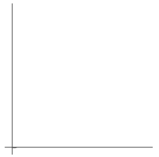
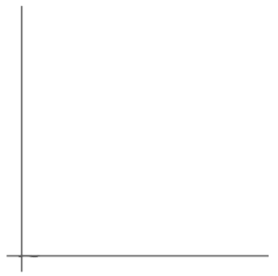

C++: 基础数据结构
- TAGS: C++
基础概念
数据结构概览
数据结构和算法
数据结构和算法是计算机科学中的两个非常重要的概念，它们相辅相成缺一不可。
数据结构是指数据的组织和存储方式，它决定了数据的逻辑结构和物理结构。
- 良好的数据可以提高数据的存储效率、查询效率和修改效率，同时还可以降低程序的复杂度和错误率。
- 例如：在处理大量数据时，使用合适的数据结构可以大大提高程序的运行效率
算法则是批解决问题的步骤和方法，它决定了程序的执行效率和正确性。
- 一个好的算法，应该具有高效性、正确性、简洁性和可维护性等等特点。
- 在设计算法时，需要考虑数据结构的选择和使用，以便更好地利用数据结构的优势来提高算法的效率。
数据结构和算法是相互依赖的关系，在设计程序时，需要根据具体问题选择合适的数据结构和算法。 例如，在处理排序问题时，可以选择使用冒泡排序、插入排序、选择排序、快速排序等不同的算法，同时还需要选择合适的数据结构来存储待排序的数据。
不同的数据结构和算法应用于不同的场景，需要根据具体情况进行选择。
相当来说，数据结构就像一个容器，对容器里的元素执行增删改查的过程我们称之为算法。所以在数据结构的过程中，同样可以学到算法。
数据结构
数据
数据是描述客观事物的符号，是计算机中可以操作的对象，数据不仅仅包括整数、小数、字符，还包括声音、图像、视频等等非数值类型。
数据有2个特点
- 可以输入到计算机中
- 能被计算机程序处理
对于数值类型可以进行数值计算，对于字符类型需要进行非数值处理，而声音图像视频等可以通过编码的手段变成字符数据来进行处理。
结构
结构可以简单理解为关系，比如分子结构就是说组成分子的原子之间的排列方式。而数据结构就是不同数据相互之间存在一种或多种特定关系的元素集合。
在计算机中，数据元素并不是孤立的、杂乱无序的，而是具有内在联系的数据集合。数据元素之间存在一种或多种特定的关系，也就是数据组织形式，它可以分为逻辑结构和物理结构。
逻辑结构
数据结构的逻辑结构指的是数据元素之间的逻辑关系，即数据在用户面前呈现的方式，而与数据在计算机内部的存储关系无关。
包括以下四种基本类型
- 集合结构：数据元素之间没有固定顺序，只是属于同一集合
- 线性结构：数据元素之间存在一对一的线性关系
- 树状结构：数据元素之间存在一对多的层次关系
- 图表结构：数据元素之间存在多对多的任意关系
存储结构
数据结构的存储结构又叫物理结构，指的是数据在计算机中的存储形式。
物理结构总共有两种：
- 顺序存储：数据元素按照一定的顺序存储在连续的内存空间中。C/C++中的数组就是这样的存储结构，当你告诉计算机创建一个10个元素的数组时，计算机就在内存中找到一块连续的区域，这样在访问的时候就可以利用索引快速找到对应位置上的数据。
- 链式存储：把数据元素存储在任意的内存中，无所谓连续，然后通过链接的关系把两个元素联系在一起。像链表就是一种基础的链式结构。
时间复杂度
前言
很多人觉得算法难，是因为被困在了时间和空间这两个维度上。如果不考虑时间和空间的因素，其实我们可以把所有问题都通过「穷举法」来解决，也就是你告诉计算机你要做什么，然后通过它强大的算力帮你计算。
那么，说到了时间，今天我就和大家来聊一下「算法时间复杂度」。
穷举法
单层循环
所谓穷举法，就是我们通常所说的枚举，就是把所有情况都遍历了(跑到)的意思。举个最简单的例子:
- 【例题1】给定n(n<=1000)个元素ai，求其中奇数有多少个。
判断一个数是偶数还是奇数，只需要求它除上2的余数是0还是是1，那么我们把所有数都判断一遍，并且对符合条件的情况进行计数，最后返回这个计数器就是答案，这里需要遍历所有的数，这就是穷举。如图所示:
C/C++代码实现如下：
int countOdd(int n, int a[]) { int cnt = 0; for (int i = 0; i < n; ++i) { if (a[i] & 1) { ++cnt; } } return cnt; }
Python代码实现如下：
def countOdd(n, a): cnt = 0 for i in range(n): if a[i] & 1: cnt += 1 return cnt
其中 a & 1等价于 a % 2，代表a模2的余数。
双层循环
经过上面的例子，相信你对穷举法已经有一定的理解，那么我我们来看看稍微复杂一点的情况。
- 【例题2】给定n(n<=1000)个元素ai，求有多少个二元组(i，j)，满足ai+aj是奇数(i<j)。
- 我们还是秉承穷举法的思想，这里需要两个变量i和j，所以可以收举ai和aj，再对ai+aj进行奇偶性断，所以很快设计出一个利用穷举的算法。如图二-2-1所示:
C/C++代码实现如下：
int countOddPair(int n, int a[]) { int cnt = 0; for (int i = 0; i < n; ++i) { for (int j = i + 1; j < n; ++j) { if (a[i] + a[j] & 1) ++cnt; } } return cnt; }
Python代码实现如下：
def countOddPair(n, a): cnt = 0 for i in range(n): for j in range(i+1, n): if a[i] + a[j] & 1: cnt += 1 return cnt
三层循环
经过这两个例子，是不是对穷举已经有点感觉了?那么，我们继读来看下一个例子。
【例题3】给定n(n<=1000)个元素ai，求有多少个三元组(i，j，k)，满制足ai+aj+ak 是奇数(i<j<k)
相信聪明的你也已经猜到了，直接给出代码:
c/c++代码实现如下:
int countOddTriple(int n, int a[]) { int cnt = 0; for (int i = 0; i < n; ++i) { for (int j = i + 1; j < n; ++j) { for (int k = j + 1; k < n; ++k) { if (a[i] + a[j] + a[k] & 1) ++cnt; } } } return cnt; }
Python代码实现如下：
def countOddTriple(n, a): cnt = 0 for i in range(n): for j in range(i+1, n): for k in range(j+1, n): if a[i] + a[j] + a[k] & 1: cnt += 1 return cnt
这时间，相信你已经意识到一个问题：时间
是的，随着循环嵌套的增多，时间消耗会越来越多，并且是是三个循环是乘法的关系，也就是遍历次数随着n的增加，呈立方式的增长。
递归枚举
【例题4】给定n(n<=1000)个元素ai和一个整数k(k<=n)，求有多少个有序k元组，满足它们的和是偶数。
- 一层循环，两层循环，三层循环，k层循环?
- 我们需要根据k的不同，决定写几层循环，k的最大值为1000，也就意味着我们要写1000的if else语句。
- 显然，这样是无法接受，比较暴力的做法是采用到递归;
c/c++代码实现如下:
- 代码可以先不看，当学到树的数据结构后比较好理解
int dfs(int n, int a[], int start, int k, int sum) { if (k = 0) return (sum & 1) ? 0 : 1; // (1) int s = 0; for (int i = start; i < n; ++i) s += dfs(n, a, i + 1, k - 1, sum + a[i]); // (2) return s; }
Python代码实现如下：
def dfs(n, a, start, k, sum_): if k == 0: return 0 if sum_ & 1 else 1 #(1) s = 0 for i in range(start, n): s += dfs(n, a, i+1, k-1, sum_ + a[i]) # (2) return s
这是一个经典的深度优先遍历的过程，对于初学者来说可能比较难理解，这个过程比较复杂。
- (1)dfs(int n, inta[], int start, int k, int k, int sum)这个函数的含义是:给定n元素的数组a[]，从下标start开始，选择k个元素，得到的和为sum的情况下的方案数，当k=0时代表的是递归的出口;
- (2)当前第 i元素选择以后，剩下就是从i+1个元素开始选择k-1个的情况，递归求解。
- 我们简单分析一下，n个元素选择k个，根据排列组合，方案数为:C(n,k)，当n=1000，k=500时已经是天文数字，这段代码是完全出不了解的。
- 当然，对于初学者来说，这段代码如果不理解，问题也不大，只是为了说明穷举这个思想。
时间复杂度
时间复杂度的表示法
在进行算法分析时，语句总的执行次数T(n)是关于问题规模n的函数，进而分析T(n)随着n的变化情况而确定T(n)的数量级。
算法的时间复杂度，就是算法的时间度量，记作: T(n)=O(f(n)) 用大写的O来体现算法时间复杂度的记法，我们称之为大O记法。
- 时间函数
时间复杂度往往会联系到一个函数，自变量表示规模，应变量表示执行时间。
这里所说的执行时间，是指广义的时间，也就是单位并不是"秒"、"毫秒"这些时间单位，它代表的是一个"执行次数"的概念。我们用f(n)来表示这个时间函数。
- 经典函数举例
在【例题1】中，我们接触到了单层循环，这里的n是一个变量，随着n的增大，执行次数增大，执行时间就会增加，所以就有了时间函数的表示法如下:f(n)=n

这个就是最经典的线性时间函数
在【例题2】中，我们接触到了双层循环，它的时间函数表示法如下：f(n) = n(n-1)/2。也就是随着n的增大，消耗的时间越多些。
 这是一个平方级别的时间函数
在【例3】中，我们接触到了三层循环，它的时间函数表示法如下：f(n) = n(n-1)(n-2)/6
 这是一个立方级别的时间函数。
时间复杂度
一个算法中的语句执行次数称为语句频度或时间频度。记为T(n)。
并且我们有一个更加优雅的表示法，即:T(n)=O(f(n))
其中O念成大O;
- 当f(n)=n，我们称这个算法拥有线性时间复杂度，记作O(n);
- 当f(n)=n(n-1)/2，我们称这个算法拥有平方级时间复杂度，记作O(n^2);
- 当f(n)=n(n-1)(n-2)/6，我们称这个算法拥有立方级的时间复杂度，记作O(n^3);
这时候我们发现，f的函数可能很复杂，但是O表示的函数往往比较简单，它舍弃了一些"细节"，这是为什么呢?
接下来我们来谈下数学上一个非常有名的概念"高阶无穷小"。
高阶无穷小
有这么一个定义:如果lim(B/a)=0，则称"β是比a较高阶的无穷小"。
如果对极限没有什么概念，我会用更加通俗的语言来解释一下。
我们来看上面提到的一个函数:
f(n) = n(n-1) / 2
总共两部分组成:一部分是n^2的部分，另一部分是n的部分，直观感受，那个更大呢?
显而易见，一定是n^2，相对于n^2来说，n就是"小巫见大巫"!
所以随着n的增长，线性的部分增长已经跟不上平方部分，这样，线性部分的时间消耗相对于平方不分来说已经"微不足道"，所以我们就索性不提它了，于是就有时间复杂度表示如下
\(T(n) = O(f(n))\)
\(=O(\frac{1}{2} n^2 - \frac{1}{2}n)\)
\(=O(\frac{1}{2} n^2)\)
\(=O(n^2)\)
所以它的时间复杂度就是 O(n^2)了。
简化系数
我们发现上述的公式推导的过程中，将n^2前面的系数1/2给去掉了，这是由于时间复杂度描述的更多的是一个数量级，所以尽量减少干扰项。对于两个不同的问题，可能执行时间不同，但是我们可以说他们的 时间复杂度 是一样的。
接下来让我们来看下一些常见的时间复杂度。
常见的时间复杂度
常数阶
const int MAXN = 1024; int getMAXN() { return MAXN; }
这个比较好理解，一共就一句话，没有循环，是常数时间，表示为O(1)。
对数阶
【例题4】给定n(n<=10000000)个元素的有序数组 ai 和整数v，才v在数组中的下标，不存在输出-1。
这个问题就是一个常见的查询问题，我们可以用O(n)的算法遍历整个数组，然后去找v的值。
当然，也有更快的办法，注意到题目中的条件，数组ai是是有序的，所以我们可以利用二分查找来实现。
C/C++代码实现如下:
int bin(int n, int a[], int v) { int l = 0, r = n - 1; while (l <= r) { int mid = (l + r) >> 1; // 右移一位相当于对原来的这个数除上2 if (a[mid] == v) return mid; else if (a[mid] < v) r = mid + 1; else l = mid + 1; } return -1; }
python代码实现如下:
def bin(n, a, v): l = 0 r = n -1 while l <= r: mid = (l + r) // 2 if a[mid] == v: return mid elif a[mid] < v: r = mid + 1 else: l = mid + 1 return -1
这是一个二分查找的实现，时间复杂度为O(logn)。
每次相当于把n切半，即：
\(n \rightarrow \frac{n}{2} \rightarrow \frac{n}{4} \rightarrow \dots \rightarrow \frac{n}{2^k} \rightarrow \dots \rightarrow 0\)
这条路径长度也就是执行次数，也就是要求 \(2^k \leq n\) 中的 k 的最大值，两边取以2为底的对数，得到：
\(k \leq log_{2^n}\)
所以 T(n) = O(f(n)) = O(k) = O(logn)。
根号阶
【例题5】给定一个数n(n<=10^9)，问n是否是一个素数(素数的既念，就是除了1和它本身，没有其它因子)。
基于素数的概念，我们可以枚举所有i属于[2，n)，看能否整除n，一旦能整除，代表找到了一个因子，则不是素数;当所有数枚举完还没找到，它就是素数。
但是这样做，显然效率太低，所以我们需要进行一些思考，最后得到以下算法:
C/C++代码实现如下:
bool isPrime(int n) { int i; if (n == 1) { return false; } int sqrtn = sqrt(n + 0.0); for (int i = 2; i <= sqrtn; ++i) { if (n % i == 0) { return false; } } return true; }
Python代码实现如下:
import math def isPrime(n): if n == 1: return False sqrtn = int(math.sqrt(n)) for i in range(2, sqrtn + 1): if n % i == 0: return False return True
这个算法的时间复杂度为O(根号n)。
为什么只需要枚举根号n内的数呢?
因为一旦有一个因子s，必然有另一个因子n/s，它们之间必然有个大小关系，无论是s<=n/s还是n/s <= s，都能通过两边乘上s得出:
\(s \leq \sqrt{n}\)
线性阶
【例题1】中我们接触到的单层循环，这里的n是一个变量，随着着n的增大，执行次数增大，执行时间就会增加，所以就有了时间函数的表示法如下:
f(n) = n
这个就是最经典的线性时间，即O(n)。
线性对数阶
【例题6】给定n(n<=10000000)个元素ai，求满足ai+aj=1024的有序二元组(i，j)有多少对。
首先，还是先思考最朴素的算法，当然是两层枚举了，参考【例题2】，时间复杂度O(n^2)。
但是，这个问题n的范围较大。
我们来看下这个问题，如果你对【例题4】已经理解了，那那么这个问题也就不难了。
我们可以先对所有元素ai按照递增排序，然后枚举ai，并且在[i-+1, n)范围内找是否存在aj=1024
多项式阶
多项式的含义是函数f(n)可以表示成如下形式:
\(f(n) = an^k + bn^{k-1} + \dots + C\)
所以O(n^5)、O(n^4)、O(n^3)(立方阶)、O(n^2)(平方阶)、O(n)(线性阶)都是多项式时间。
指数阶
【例题7】给出n(n<=15)个点，以及每两个点之间的关系(连通还是不连通)，求一个最大的集合，使得在这个集合中都连通。
这是求子集的问题，由于最多只有15个点，我们就可以枚举每个点选或者不选，总共2^n种情况，然后再判断是否满足题目中的连通性，这个算法时间复杂度为O(n^2 * 2^n);
当然有更加优秀的算法，但不是本文讨论的重点，所以就交给优秀的你自己去探索啦!
阶乘阶
【例题8】给定n(n<=12)个点，并且给出任意两点间的距离，求从S点开始经过所有点回到S的距离的最小值。
这个问题就是典型的暴力枚举所有情况求解，可以把这些点当成是一个排列，所以排列方案数为 n! 。
暴力枚举的时间复杂度为O(n!)。
当然，一般这类问题，暴力搜索没有实际意义，我们可以通过动态规划来进行优化。
如何判断时间复杂度
接下来我们来讨论下，如何通过一个问题的规模来判断这个个问题应该能够承受的时间复杂度。
标准
首先，我们需要一个标准，也就是总执行次数多少合适。
这个标准是我经过多年做题经验得出，我们把它定义为S = 10^6。一个数据如果跑 10^6 以上，那么时间复杂度就是偏高了。
问题规模
有了标准以后，我们还需要知道问题规模，也就是O(n)中的n。
套公式
然后就是凭感觉套公式了。
- 当n<12时，可能是需要用到阶乘级别的算法，即 \(O(n!)\);
- 当n<16时，可能是需要状态压缩的算法，比如 \(O(2^n) 、 O(n2^n) 、 O(n^22^n)\);
- 当n<30时，可能是需要 \(O(n^4)\) 的算法，因为 \(30^4\) 差不多接近 \(10^6\);
- 当n<100时，可能是需要 \(O(n^3)\) 的算法，因为 \(100^3 = 10^6\);
- 当n<1000时，可能是需要 \(O(n^2)\) 的算法，因为 \(1000^2 = 10^6\);
- 当n<100000时，可能是需要 \(O(nlog_{2^n}) 、 O(n(log_{2^n})^2)\) 的算法;
- 当n<1000000时，可能是需要 \(O(\sqrt{n}) 、 O(n)\) 的算法;
细心的读者可能会发现，我在描述的时候都是用了可能的话语气，那是因为以上数据量都是我通过做题总结出来的，有时候还需要结合题目本身的时间限制、出题人的阴险程度来决定，所以不能一概而论。
空间复杂度
前言
很多人觉得算法难，是因为被困在了时间和空间这两个维度上。如果不考虑时间和空间的因素，其实我们可以把所有问题都通过「穷举法」来解决，也就是你告诉计算机你要做什么，然后通过它强大的算力帮你计算。
那么。今天我就和大家来聊一下「算法空间复杂度」。
概念
空间复杂度是指算法在执行过程中所需的额外存储空间。这包括算法在运行时使用的变量、数组、链表等数据结构所占用的内存空间。它和算法的时间复杂度一起，是衡量算法性能的重要指标之一。
- 额外存储空间：比如给写一个n个元素的数组要你怎么样怎么样。如果你不用其它额外的空间，空间复杂度就是O(1)，也就是说这个给你的数组不能算在空间复杂度里。
在算法设计中，我们通常希望尽可能地降低空间复杂度，以减少内存的使用，提高算法的效率。然而，在某些情况下，为了实现算法的功能，可能需要使用更多的存储空间。
常见数据结构的空间复杂度
- 顺序表:0(n)，其中n是顺序表的长度。
- 链表:O(n)，其中n是链表的长度。
- 栈:O(n)，其中n是栈的最大深度。
- 队列:O(n)，其中n是队列的最大长度。
- 哈希表:O(n)，其中n是哈希表中元素的数量。
- 树:O(n)，其中n是树的结点数量。
- 图:O(n+m)，其中n是图中顶点的数量，其中m是图中边的数量。
当然具体情况还需要具体分析。
空间换时间
通常使用额外空间的目的，就是为了换取时间上的效率，也就是我们常说的空间换时间。最经典的空间换时间就是动态规划，例如求一个斐波那契数列的第n项的值，如如果不做任何优化，就是利用循环进行计算，时间复杂度O(n)，但是如果引入了数组，将计算结果预先存储在数组中，那么每次询问只需要0(1)的时间复杂度就可以得到第n项的值，而这时，由于引入了数组，所以空间复杂度就变成了O(n)。
总结
对于空间复杂度，不需要太过纠结于概念，学习动态规划以后，会对它有非常深刻的理解。
环境使用
- 在线编译 https://www.jyshare.com/compile/12/
- 杭电在线评测系统 HDOJ https://acm.hdu.edu.cn/ (相对简单)
- ACM 模式例子。
- Problem Archive 第11页是中文题目
- 北大在线评测系统 POJ http://poj.org/ (相对难些)
- Register 注册账号。在 Problems 找到题目。
- 力扣核心代码模式 https://leetcode.cn/problemset/ (面向求职的，相对简单)
- 核心代码模式例子
vs2022安装 https://visualstudio.microsoft.com/zh-hans/free-developer-offers/
语言其实也不重要，最重要的还是数据结构和算法的思想 。
线性结构-顺序表
顺序表（概念篇）
顺序表的概念
顺序表的增删改查、顺序表的扩容、顺序表的应用
- 插入、删除、查找、索引、修改
顺序表是一种线性的数据结构，其中数据元素按照特定的顺序依次存储在连续的内存空间中。它由一系列元素组成，每个元素都与唯一的索引(或者叫下标)相关联，索引从0开始递增。
下图中，下面那排数字0到9代表的就是索引，天蓝色柱子上的数字，代表的则是顺序表中的元素，元素可以整数，可以是浮点数，可以是任意类型，包括结构体或者对象，等等。
顺序表的元素插入
元素插入的概念
- 顺序表的元素插入，就是指给定一个索引和一个元素，将这个元素插入到对应的索引位置上，这个位置以后的所有元素都要往后移动一个位置。
元素插入图解
- 本次插入操作，是给定一个元素值为5的元素，插入到顺序表的3的索引上(下标从0开始)。我们看到，从后往前把元素往后挪，直到找到要插入的位置嘛，把元素插入进去。

元素插入的步骤
- 第1步、判断插入位置是否合法，如果不合法则抛出异常(比比如:原本只有5个元素，给定的索引是100，那显然这个位置是不合法的)。
- 第2步、如果顺序表已满，则需要扩容顺序表，一般是把原有顺序表的容量进行倍增。
- 第3步、将插入位置之后的元素向后移动，为新元素腾出空间。
- 第4步、将新元素插入到指定位置。
- 第5步、更新顺序表的大小。
顺序表的元素删除
元素删除的概念
- 顺序表的元素删除，就是指给定一个索引，将这个索引上的元素删除除，并且把这个索引位置以后的所有元素都往前移动一个位置。
元素删除的图解
- 图中要删除的是索引为3的元素，也就是5这个元素，然后从前往后，将元素往前移。
元素删除的步骤
- 第1步、判断删除位置是否合法，如果不合法则抛出异常。
- 第2步、如果删除位置为最后一个元素，直接将顺序表的大小减1。
- 第3步、如果删除位置不是最后一个元素，将删除位置之后的元素向前移动，覆盖要删除的元素。
- 第4步、更新顺序表的大小。
顺序表的元素查找
元素查找的概念
- 顺序表的元素查找，是指在顺序表中查找指定元素是否存在，如果存在则返回该元素的索引，否则返回-1。由于需要遍历整个顺序表进行元素对比，所以查找的时间复杂度为O(n)。
元素查找的图解
- 要查找的是一个值为7的元素，通过遍历所有元素，找到值直为7的元素以后，返回它所在的索引。
元素查找的步骤
- 第1步、遍历整个顺序表，对顺序表中的每个元素，和指定元素进行比较，如果相等则返回当前的索引;
- 第2步、如果遍历完所有的顺序表元素，都没有找到相等的元素，则返回-1;
顺序表的元素索引
元素素引的概念
- 顺序表的元素索引，是指给定一个索引值，通过下标访问，直接在顺序表中获取元素的值，时间复杂度0(1)。
元素索引的图解
- 给定的是5这个索引，通过下标访问，直接获取到7这个元素。一般每个语言都会有这个特性在里面。

元素索引的步骤
- 第1步、直接通过索引访问即可获得对应的元素;
顺序表的元素修改
元素修改的概念
- 顺序表的元素修改是指将顺序表中指定位置的元素更新为新的值。
元素索引的图解
- 如图所示，给定的是5这个索引，通过下标访问，把它从原来的7改成9
元素修改的步骤
- 直接通过索引访问即可获得对应的元素，修改成指定的值;
代码篇
手写顺序表模板
#include <iostream> using namespace std; #define eleType double // 表示顺序表中所有元素都这个类型的 struct SequentialList { eleType* elements; int size; // 元素个数 int capacity; // 容量 }; // 实现顺序表初始化 void initializeList(SequentialList* list, int capacity) { list->elements = new eleType[capacity]; list->size = 0; list->capacity = capacity; } // 实现顺序表的销毁 void destroyList(SequentialList* list) { delete[] list->elements; } // 实现获取顺序表大小接口 int size(SequentialList* list) { return list->size; } bool isEmpty(SequentialList* list) { return list->size == 0; } // 实现顺序表的插入操作 void insert(SequentialList* list, int index, eleType element) { if (index < 0 || index > list->size) { throw std::invalid_argument("Invalid index"); // 抛异常 } if (list->capacity == list->size) { int newCapacity = list->capacity * 2; eleType* newElements = new eleType[newCapacity]; for (int i = 0; i < newCapacity/2; ++i) { newElements[i] = list->elements[i]; } delete[] list->elements; list->elements = newElements; list->capacity = newCapacity; } list->size++; if (list->size <= list->capacity) { for (int i = list->size -1; i > index; --i) { list->elements[i] = list->elements[i - 1]; } list->elements[index] = element; } } // 顺序表的元素删除 void deleteElement(SequentialList* list, int index) { if (index < 0 || index >= list->size) { throw std::invalid_argument("Invalid index"); // 抛异常 } for (int i = index; i < list->size; ++i) { list->elements[i] = list->elements[i + 1]; } list->size--; } // 顺序表元素查找 int findElement(SequentialList* list, eleType element) { for (int i = 0; i < list->size; ++i) { if (list->elements[i] == element) { return i; } } return -1; } // 顺序表元素索引 eleType getElement(SequentialList* list, int index) { if (index < 0 || index > list->size) { throw std::invalid_argument("Invalid index"); // 抛异常 } return list->elements[index]; } // 顺序表元素修改 void updateElement(SequentialList* list, int index, eleType value) { if (index < 0 || index > list->size) { throw std::invalid_argument("Invalid index"); // 抛异常 } list->elements[index] = value; } int main() { SequentialList myList; initializeList(&myList, 10); for (int i = 0; i < 10; ++i) { insert(&myList, i, i * 10); } cout << "Size: " << size(&myList) << endl; cout << "Is empty: " << isEmpty(&myList) << endl; for (int i = 0; i < size(&myList); ++i) { cout << getElement(&myList, i) << ' '; } cout << endl; deleteElement(&myList, 5); updateElement(&myList, 1, 1314); for (int i = 0; i < size(&myList); ++i) { cout << getElement(&myList, i) << ' '; } cout << endl; int idx = findElement(&myList, 20); updateElement(&myList, idx, 520); for (int i = 0; i < size(&myList); ++i) { cout << getElement(&myList, i) << ' '; } cout << endl; destroyList(&myList); return 0; }
C++中的顺序表(vector)
也就是vector模板类，中文是向量的意思。模板类就是vector内部的元素可以是任意类型，如vector加一个整型然后它的类型叫ret： vector<int> ret; 可以理解成一个空的顺序表。
#include <iostream> #include <vector> using namespace std; int main() { vector<int> ret; // 可以理解为空的顺序表 cout << ret.size() << endl; // 0 ret.push_back(1024); // 插入一个元素到顺序表尾部 cout << ret.size() << endl; // 1 cout << ret[0] << endl; // 1024。0位置的元素 // 顺序表的删除本身时间复杂度比较高，一般不用这个数据结构，要采用其它的数据结构 vector<int> ret1 = { 1, 2, 3, 4, 5 }; // 初始化 for (int i = 0; i < ret1.size(); ++i) { cout << ret1[i] << ' '; } cout << endl; return 0; }
实战篇
ACM模式
1.求奇数的乘积
https://acm.hdu.edu.cn/showproblem.php?pid=2006
#include <iostream> using namespace std; #define eleType int // 表示顺序表中所有元素都这个类型的 struct SequentialList { eleType* elements; int size; // 元素个数 int capacity; // 容量 }; // 实现顺序表初始化 void initializeList(SequentialList* list, int capacity) { list->elements = new eleType[capacity]; list->size = 0; list->capacity = capacity; } // 实现顺序表的销毁 void destroyList(SequentialList* list) { delete[] list->elements; } // 实现获取顺序表大小接口 int size(SequentialList* list) { return list->size; } bool isEmpty(SequentialList* list) { return list->size == 0; } // 实现顺序表的插入操作 void insert(SequentialList* list, int index, eleType element) { if (index < 0 || index > list->size) { throw std::invalid_argument("Invalid index"); // 抛异常 } if (list->capacity == list->size) { int newCapacity = list->capacity * 2; eleType* newElements = new eleType[newCapacity]; for (int i = 0; i < newCapacity/2; ++i) { newElements[i] = list->elements[i]; } delete[] list->elements; list->elements = newElements; list->capacity = newCapacity; } list->size++; if (list->size <= list->capacity) { for (int i = list->size -1; i > index; --i) { list->elements[i] = list->elements[i - 1]; } list->elements[index] = element; } } // 顺序表的元素删除 void deleteElement(SequentialList* list, int index) { if (index < 0 || index >= list->size) { throw std::invalid_argument("Invalid index"); // 抛异常 } for (int i = index; i < list->size; ++i) { list->elements[i] = list->elements[i + 1]; } list->size--; } // 顺序表元素查找 int findElement(SequentialList* list, eleType element) { for (int i = 0; i < list->size; ++i) { if (list->elements[i] == element) { return i; } } return -1; } // 顺序表元素索引 eleType getElement(SequentialList* list, int index) { if (index < 0 || index > list->size) { throw std::invalid_argument("Invalid index"); // 抛异常 } return list->elements[index]; } // 顺序表元素修改 void updateElement(SequentialList* list, int index, eleType value) { if (index < 0 || index > list->size) { throw std::invalid_argument("Invalid index"); // 抛异常 } list->elements[index] = value; } int main() { int n; while (cin >> n) { // 输入一个数n，表示共有n个数 SequentialList s; initializeList(&s, 1); for (int i = 0; i < n; ++i) {// 遍历这n个数 eleType x; cin >> x; // 定义一个x，并插入到顺序表中 insert(&s, i, x); } // s.size == n 插入之后这是相等的 int prod = 1; for (int i = 0; i < s.size; ++i) { int val = getElement(&s, i); if (val % 2 == 1) { prod = prod * val; } } cout << prod << endl; } return 0; }
直接用数组
#include <iostream> using namespace std; int a[100000]; int main() { int n; while (cin >> n) { // 输入一个数n，表示共有n个数 for (int i = 0; i < n; ++i) {// 遍历这n个数 int x; cin >> x; // 定义一个x，并插入到顺序表中 a[i] = x; } int prod = 1; for (int i = 0; i < n; ++i) { int val = a[i]; if (val % 2 == 1) { prod = prod * val; } } cout << prod << endl; } return 0; }
明明可以这么短的代码写出来，为什么需要抽象出这么多奇奇怪怪的增删改查的函数呢？原因就是这段代码只能过这道题目，而当你把那些函数抽象成模板以后，就可以过任意的题目了。
所以说任何一个数据结构，我们都可以抽象出一套公用的代码，而那套代码在C++中已经帮你实现好了，也就是vector。但在比赛时，怎么快怎么来。
上面写模板的意义在于，顺序表、链表比较简单，但是假设要你写一个字典数、树状数组、线段数呢？如果没有这个模板思维的话，正式比赛时，那些复杂代码很容易写错。所以在比赛之前，我们要把那些代码抽象成公共的函数或者类以后做模板，比赛的时候打印出来可以带进去，这样你就不用担心比赛时某个细节给忘记了。
2.数值统计
https://acm.hdu.edu.cn/showproblem.php?pid=2008
#include <iostream> using namespace std; #define eleType double // 表示顺序表中所有元素都这个类型的 struct SequentialList { eleType* elements; int size; // 元素个数 int capacity; // 容量 }; // 实现顺序表初始化 void initializeList(SequentialList* list, int capacity) { list->elements = new eleType[capacity]; list->size = 0; list->capacity = capacity; } // 实现顺序表的销毁 void destroyList(SequentialList* list) { delete[] list->elements; } // 实现获取顺序表大小接口 int size(SequentialList* list) { return list->size; } bool isEmpty(SequentialList* list) { return list->size == 0; } // 实现顺序表的插入操作 void insert(SequentialList* list, int index, eleType element) { if (index < 0 || index > list->size) { throw std::invalid_argument("Invalid index"); // 抛异常 } if (list->capacity == list->size) { int newCapacity = list->capacity * 2; eleType* newElements = new eleType[newCapacity]; for (int i = 0; i < newCapacity / 2; ++i) { newElements[i] = list->elements[i]; } delete[] list->elements; list->elements = newElements; list->capacity = newCapacity; } list->size++; if (list->size <= list->capacity) { for (int i = list->size - 1; i > index; --i) { list->elements[i] = list->elements[i - 1]; } list->elements[index] = element; } } // 顺序表的元素删除 void deleteElement(SequentialList* list, int index) { if (index < 0 || index >= list->size) { throw std::invalid_argument("Invalid index"); // 抛异常 } for (int i = index; i < list->size; ++i) { list->elements[i] = list->elements[i + 1]; } list->size--; } // 顺序表元素查找 int findElement(SequentialList* list, eleType element) { for (int i = 0; i < list->size; ++i) { if (list->elements[i] == element) { return i; } } return -1; } // 顺序表元素索引 eleType getElement(SequentialList* list, int index) { if (index < 0 || index > list->size) { throw std::invalid_argument("Invalid index"); // 抛异常 } return list->elements[index]; } // 顺序表元素修改 void updateElement(SequentialList* list, int index, eleType value) { if (index < 0 || index > list->size) { throw std::invalid_argument("Invalid index"); // 抛异常 } list->elements[index] = value; } int main() { int n; while (cin >> n && n) { // 输入一个n，并且输入n等于0时跳出循环 SequentialList s; initializeList(&s, 1); for (int i = 0; i < n; ++i) { eleType x; cin >> x; insert(&s, i, x); } int pcnt = 0, zcnt = 0, ncnt = 0; // 大于0 pcnt、等于0 zcnt、小于0 ncnt for (int i = 0; i < size(&s); ++i) { eleType ele = getElement(&s, i); if (ele > 1e-8) { // 浮点数是有误差的，所以我们不能大于0，大于一个非常小的正数我就算它大于0 ++pcnt; } else if (ele < -1e-8) { // 小于非常大的负数，就把它定义为小于0 ++ncnt; } else { ++zcnt; } } cout << ncnt << ' ' << zcnt << ' ' << pcnt << endl; } return 0; }
3.青年歌手大奖赛
https://acm.hdu.edu.cn/showproblem.php?pid=2014
#include <iostream> using namespace std; #define eleType double // 表示顺序表中所有元素都这个类型的 struct SequentialList { eleType* elements; int size; // 元素个数 int capacity; // 容量 }; // 实现顺序表初始化 void initializeList(SequentialList* list, int capacity) { list->elements = new eleType[capacity]; list->size = 0; list->capacity = capacity; } // 实现顺序表的销毁 void destroyList(SequentialList* list) { delete[] list->elements; } // 实现获取顺序表大小接口 int size(SequentialList* list) { return list->size; } bool isEmpty(SequentialList* list) { return list->size == 0; } // 实现顺序表的插入操作 void insert(SequentialList* list, int index, eleType element) { if (index < 0 || index > list->size) { throw std::invalid_argument("Invalid index"); // 抛异常 } if (list->capacity == list->size) { int newCapacity = list->capacity * 2; eleType* newElements = new eleType[newCapacity]; for (int i = 0; i < newCapacity / 2; ++i) { newElements[i] = list->elements[i]; } delete[] list->elements; list->elements = newElements; list->capacity = newCapacity; } list->size++; if (list->size <= list->capacity) { for (int i = list->size - 1; i > index; --i) { list->elements[i] = list->elements[i - 1]; } list->elements[index] = element; } } // 顺序表的元素删除 void deleteElement(SequentialList* list, int index) { if (index < 0 || index >= list->size) { throw std::invalid_argument("Invalid index"); // 抛异常 } for (int i = index; i < list->size; ++i) { list->elements[i] = list->elements[i + 1]; } list->size--; } // 顺序表元素查找 int findElement(SequentialList* list, eleType element) { for (int i = 0; i < list->size; ++i) { if (list->elements[i] == element) { return i; } } return -1; } // 顺序表元素索引 eleType getElement(SequentialList* list, int index) { if (index < 0 || index > list->size) { throw std::invalid_argument("Invalid index"); // 抛异常 } return list->elements[index]; } // 顺序表元素修改 void updateElement(SequentialList* list, int index, eleType value) { if (index < 0 || index > list->size) { throw std::invalid_argument("Invalid index"); // 抛异常 } list->elements[index] = value; } int main() { int n; while (cin >> n) { SequentialList s; initializeList(&s, 1); for (int i = 0; i < n; ++i) { eleType ele; cin >> ele; insert(&s, i, ele); } eleType eMax = -1000000000, eMin = 10000000000; eleType eSum = 0; // 定义一个求和变量 for (int i = 0; i < size(&s); ++i) { eleType ele = getElement(&s,i); if (ele > eMax) eMax = ele; if (ele < eMin) eMin = ele; eSum += ele; } eSum -= eMax; eSum -= eMin; eSum /= (n - 2); printf("%.2lf\n", eSum); } return 0; }
核心代码模式
顺序表的索引
下标获取[]
- 4.猜数字
https://leetcode.cn/problems/guess-numbers/description/
输入数据是两个顺序表，并且长度已经确定都是3，所以只需同步遍历顺序表的这个三个元素，并且判断是否相等。如果相等则计数器加1，最后输出这个计数器就可以了。
#include <iostream> #include <vector> using namespace std; class Solution { public: int game(vector<int>& guess, vector<int>& answer) { int ret = 0; // 定义一个计数器 for (int i = 0; i < 3; ++i) { // 遍历顺序表的三个元素 if (guess[i] == answer[i]) { ret++; } } return ret; } }; int main() { Solution s; vector<int> guess(3); vector<int> answer(3); // std::cin不支持直接读取整个vector。我们需要逐个元素读取 // 读取小A的猜测 for (int i = 0; i < 3; i++) { cin >> guess[i]; } // 读取小B的选择 for (int i = 0; i < 3; i++) { cin >> answer[i]; } int ret; ret = s.game(guess, answer); std::cout << ret << endl; return 0; }
- 5.拿硬币
https://leetcode.cn/problems/na-ying-bi/description/
class Solution { public: int minCount(vector<int>& coins) { int ret = 0; for (int i = 0; i < coins.size(); ++i) { // 当coins[i]是偶数时，加的1是无效的，等价于除上2。 // 当coins[i]是奇数时，加上1变成偶数，再除上2就等价于前面几次都是拿两枚最后一次拿一枚的次数。 ret += (coins[i] + 1) / 2; // 得到的是最少拿硬币的次数 } return ret; } };
- 6.值相等的最小索引
https://leetcode.cn/problems/smallest-index-with-equal-value/description/
class Solution { public: int smallestEqual(vector<int>& nums) { // 只需要遍历这个顺序表，然后对顺序表中每个元素进行判断 for (int i = 0; i < nums.size(); ++i) { if (i % 10 == nums[i]) { return i; } } return -1; } };
顺序表的大小
vector.size
- 7.最大连续 1 的个数
https://leetcode.cn/problems/max-consecutive-ones/description/
class Solution { public: int findMaxConsecutiveOnes(vector<int>& nums) { // 数组内元素值为0或1，可以以当前元素至结尾连续1的个数是多少 int ret = 0, pre = 0; // ret 表示最大连续1的个数，pre表示到当前数结尾连续1的个数 for (int i = 0; i < nums.size(); ++i) { if (nums[i] == 1) { // 以当前数结尾的连续1的个数就是以前面1个数结尾的连续1的个数加1 pre += 1; if (pre > ret) ret = pre; }else { pre = 0; } } return ret; } };
- 8.差的绝对值为 K 的数对数目
https://leetcode.cn/problems/count-number-of-pairs-with-absolute-difference-k/
class Solution { public: int countKDifference(vector<int>& nums, int k) { // 求数对最暴力的方法自然是两层枚举 // 看一下数据范围，200 的话O(n^2) 的算法是可以授受的 int ret = 0; for (int i = 0; i < nums.size(); ++i) { for (int j = i+1; j < nums.size(); ++j) { if (abs(nums[i] - nums[j]) == k) { ret++; } } } return ret; } };
- 9.数组中两元素的最大乘积
https://leetcode.cn/problems/maximum-product-of-two-elements-in-an-array/description/
class Solution { public: int maxProduct(vector<int>& nums) { // 数组元素都是大于0的情况下，一定是找到最大的和次大的数，然后减1相乘，得到的结果一定是最大的 int maxId = 0; // 最大数下标 for (int i = 0; i < nums.size(); ++i) { if ( nums[i] > nums[maxId]) { maxId = i; } } int subMaxId = -1; // 次大数下标 for (int i = 0; i < nums.size(); ++i) { if ( i != maxId ) { // 如果不是最大数的下标并且最大的话，就是次大数的下标 if ( subMaxId == -1 || nums[i] > nums[subMaxId]) { subMaxId = i; } } } return (nums[maxId]-1) * (nums[subMaxId] -1); } };
- 10.数组元素和与数字和的绝对差
https://leetcode.cn/problems/difference-between-element-sum-and-digit-sum-of-an-array/description/
class Solution { public: int differenceOfSum(vector<int>& nums) { int x = 0, y = 0; for (int i = 0; i < nums.size(); ++i) { x += nums[i]; // 元素累加到x上 // 把每个元素的每一个十进制位剥离出来，累加到y上 while (nums[i]) { y += nums[i] % 10; nums[i] /= 10; } } return abs(x - y); } };
- 11.K 个元素的最大和
https://leetcode.cn/problems/maximum-sum-with-exactly-k-elements/description/
class Solution { public: int maximizeSum(vector<int>& nums, int k) { int ret = 0; while (k--) { int maxId = 0; for (int i = 0; i < nums.size(); ++i) { if (nums[i] > nums[maxId]) { maxId = i; } } ret += nums[maxId]; nums[maxId] += 1; } return ret; } };
- 12.算术三元组的数目
https://leetcode.cn/problems/number-of-arithmetic-triplets/description/
class Solution { public: int arithmeticTriplets(vector<int>& nums, int diff) { // 数据的范围：在200的量级，所以O(n^3)的时间复杂度是可以通过的 // 先枚举中间的索引j，然后枚举 i int ret = 0; for (int j = 0; j < nums.size(); ++j) { for (int i = 0; i < j; ++i) { if (nums[j] - nums[i] == diff) { for (int k = j + 1; k < nums.size(); ++k) { if (nums[k] - nums[j] == diff) { ret++; } } } } } return ret; } };
- 13.移除元素
https://leetcode.cn/problems/remove-element/description/
给你一个数组 nums 和一个值 val，你需要 原地 移除所有数值等于 val 的元素，并返回移除后数组的长度。 不要使用额外的数组空间，你必须仅使用O(1)额外空间并 原地 修改输入数组。 元素的顺序可以改变。你不需要考虑数组中超出新长度后面的元素。
class Solution { public: int removeElement(vector<int>& nums, int val) { // 双指针 int l = 0, r = nums.size() - 1; while (l < r) { if (nums[l] == val) { // 相等代表nums[l] 是要被删除的 int tmp = nums[l]; nums[l] = nums[r]; nums[r] = tmp; r--; } else { l++; } } return r + 1; } };
顺序表的插入
vector.push_back
- 14.基于排列构建数组
https://leetcode.cn/problems/build-array-from-permutation/description/
给你一个 从 0 开始的排列 nums（下标也从 0 开始）。请你构建一个 同样长度 的数组 ans ，其中，对于每个 i（0 <= i < nums.length），都满足 ans[i] = nums[nums[i]] 。返回构建好的数组 ans 。 从 0 开始的排列 nums 是一个由 0 到 nums.length - 1（0 和 nums.length - 1 也包含在内）的不同整数组成的数组。 示例 1： 输入：nums = [0,2,1,5,3,4] 输出：[0,1,2,4,5,3] 解释：数组 ans 构建如下： ans = [nums[nums[0]], nums[nums[1]], nums[nums[2]], nums[nums[3]], nums[nums[4]], nums[nums[5]]] = [nums[0], nums[2], nums[1], nums[5], nums[3], nums[4]] = [0,1,2,4,5,3] 示例 2： 输入：nums = [5,0,1,2,3,4] 输出：[4,5,0,1,2,3] 解释：数组 ans 构建如下： ans = [nums[nums[0]], nums[nums[1]], nums[nums[2]], nums[nums[3]], nums[nums[4]], nums[nums[5]]] = [nums[5], nums[0], nums[1], nums[2], nums[3], nums[4]] = [4,5,0,1,2,3] 提示： 1 <= nums.length <= 1000 0 <= nums[i] < nums.length nums 中的元素 互不相同 进阶：你能在不使用额外空间的情况下解决此问题吗（即 O(1) 内存）？class Solution { public: vector<int> buildArray(vector<int>& nums) { // 考查vector的插入操作 vector<int> ret; for (int i = 0; i < nums.size(); ++i) { int ans = nums[nums[i]]; ret.push_back( ans ); } return ret; } };
- 15.数组串联
https://leetcode.cn/problems/concatenation-of-array/description/
给你一个长度为 n 的整数数组 nums 。请你构建一个长度为 2n 的答案数组 ans ，数组下标 从 0 开始计数 ，对于所有 0 <= i < n 的 i ，满足下述所有要求： ans[i] == nums[i] ans[i + n] == nums[i] 具体而言，ans 由两个 nums 数组 串联 形成。 返回数组 ans 。 示例 1： 输入：nums = [1,2,1] 输出：[1,2,1,1,2,1] 解释：数组 ans 按下述方式形成： - ans = [nums[0],nums[1],nums[2],nums[0],nums[1],nums[2]] - ans = [1,2,1,1,2,1]
class Solution { public: vector<int> getConcatenation(vector<int>& nums) { vector<int> ans; int size = nums.size(); for (int i = 0; i < size; ++i ) { ans.push_back(nums[i]); } for (int i = 0; i < size; ++i ) { ans.push_back(nums[i]); } return ans; } };
- 16.拥有最多糖果的孩子
https://leetcode.cn/problems/kids-with-the-greatest-number-of-candies/description/
有 n 个有糖果的孩子。给你一个数组 candies，其中 candies[i] 代表第 i 个孩子拥有的糖果数目，和一个整数 extraCandies 表示你所有的额外糖果的数量。 返回一个长度为 n 的布尔数组 result，如果把所有的 extraCandies 给第 i 个孩子之后，他会拥有所有孩子中 最多 的糖果，那么 result[i] 为 true，否则为 false。 注意，允许有多个孩子同时拥有 最多 的糖果数目。 示例 1： 输入：candies = [2,3,5,1,3], extraCandies = 3 输出：[true,true,true,false,true] 解释：如果你把额外的糖果全部给： 孩子 1，将有 2 + 3 = 5 个糖果，是孩子中最多的。 孩子 2，将有 3 + 3 = 6 个糖果，是孩子中最多的。 孩子 3，将有 5 + 3 = 8 个糖果，是孩子中最多的。 孩子 4，将有 1 + 3 = 4 个糖果，不是孩子中最多的。 孩子 5，将有 3 + 3 = 6 个糖果，是孩子中最多的。 示例 2： 输入：candies = [4,2,1,1,2], extraCandies = 1 输出：[true,false,false,false,false] 解释：只有 1 个额外糖果，所以不管额外糖果给谁，只有孩子 1 可以成为拥有糖果最多的孩子。 示例 3： 输入：candies = [12,1,12], extraCandies = 10 输出：[true,false,true] 提示： n == candies.length 2 <= n <= 100 1 <= candies[i] <= 100 1 <= extraCandies <= 50
class Solution { public: vector<bool> kidsWithCandies(vector<int>& candies, int extraCandies) { // 数据范围：100个孩子 O(n^2) 是可以接受的 vector<bool> ans; for (int i = 0; i < candies.size(); ++i) { candies[i] += extraCandies; int maxId = 0; for (int j = 1; j < candies.size(); ++j) { if(candies[j] > candies[maxId]){ maxId = j; } } if (candies[maxId] == candies[i]) { ans.push_back(true); } else { ans.push_back(false); } candies[i] -= extraCandies; } return ans; } };
顺序表的枚举
- 17.找到数组的中间位置
https://leetcode.cn/problems/find-the-middle-index-in-array/description/
给你一个下标从 0 开始的整数数组 nums ，请你找到 最左边 的中间位置 middleIndex （也就是所有可能中间位置下标最小的一个）。 中间位置 middleIndex 是满足 nums[0] + nums[1] + ... + nums[middleIndex-1] == nums[middleIndex+1] + nums[middleIndex+2] + ... + nums[nums.length-1] 的数组下标。 如果 middleIndex == 0 ，左边部分的和定义为 0 。类似的，如果 middleIndex == nums.length - 1 ，右边部分的和定义为 0 。 请你返回满足上述条件 最左边 的 middleIndex ，如果不存在这样的中间位置，请你返回 -1 。 示例 1： 输入：nums = [2,3,-1,8,4] 输出：3 解释： 下标 3 之前的数字和为：2 + 3 + -1 = 4 下标 3 之后的数字和为：4 = 4 示例 2： 输入：nums = [1,-1,4] 输出：2 解释： 下标 2 之前的数字和为：1 + -1 = 0 下标 2 之后的数字和为：0 提示： 1 <= nums.length <= 100 -1000 <= nums[i] <= 1000
class Solution { public: int findMiddleIndex(vector<int>& nums) { // 时间复杂度 O(n^2)，因为数组长度只有100， 100^2 = 10000 // 更好的办法是前缀和了，这次用最简单的模拟的方法来做 for (int i = 0; i < nums.size(); ++i) { int l = 0, r = 0; for (int j = 0; j < i; ++j) { l += nums[j]; } for (int j = i + 1; j < nums.size(); ++j) { r += nums[j]; } if (l == r) { return i; } } return -1; } };
- 18.有序数组中的单一元素
https://leetcode.cn/problems/single-element-in-a-sorted-array/solutions/
给你一个仅由整数组成的有序数组，其中每个元素都会出现两次，唯有一个数只会出现一次。 请你找出并返回只出现一次的那个数。 你设计的解决方案必须满足 O(log n) 时间复杂度和 O(1) 空间复杂度。 示例 1: 输入: nums = [1,1,2,3,3,4,4,8,8] 输出: 2 示例 2: 输入: nums = [3,3,7,7,10,11,11] 输出: 10 提示: 1 <= nums.length <= 105 0 <= nums[i] <= 105
class Solution { public: int singleNonDuplicate(vector<int>& nums) { // 因为是有序数组，比较这个数与左边和右边都不相等，这个数就是只出现一次的数 // 第 0 个元素和最后一个元素要单独判断 for (int i = 1; i < nums.size()-1; ++i) { if ( nums[i] != nums[i-1] && nums[i] != nums[i+1] ) { return nums[i]; } } if (nums.size() == 1) { return nums[0]; } if (nums[0] != nums[1]) { return nums[0]; } return nums.back(); // 最后一个元素 } };
- 19.杨辉三角 II
https://leetcode.cn/problems/pascals-triangle-ii/description/
给定一个非负索引 rowIndex，返回「杨辉三角」的第 rowIndex 行。 在「杨辉三角」中，每个数是它左上方和右上方的数的和。 示例 1: 输入: rowIndex = 3 输出: [1,3,3,1] 提示: 0 <= rowIndex <= 33
class Solution { public: vector<int> getRow(int rowIndex) { int f[34][34]; for (int i = 0; i <= rowIndex; ++i) { for (int j = 0; j <= i; ++j) { if (j == 0 || j == i) { f[i][j] = 1; } else { f[i][j] = f[i-1][j] + f[i-1][j-1]; } } } vector<int> ret; for(int j = 0; j <= rowIndex; ++j) { ret.push_back(f[rowIndex][j]); } return ret; } }; /* 二维数组模拟 1 0 0 0 0 1 1 0 0 0 1 2 1 0 0 1 3 3 1 0 1 3 6 4 1 */
- 20.超过阈值的最少操作数 I
https://leetcode.cn/problems/minimum-operations-to-exceed-threshold-value-i/description/
给你一个下标从 0 开始的整数数组 nums 和一个整数 k 。 一次操作中，你可以删除 nums 中的最小元素。 你需要使数组中的所有元素都大于或等于 k ，请你返回需要的 最少 操作次数。 示例 1： 输入：nums = [2,11,10,1,3], k = 10 输出：3 解释：第一次操作后，nums 变为 [2, 11, 10, 3] 。 第二次操作后，nums 变为 [11, 10, 3] 。 第三次操作后，nums 变为 [11, 10] 。 此时，数组中的所有元素都大于等于 10 ，所以我们停止操作。 使数组中所有元素都大于等于 10 需要的最少操作次数为 3 。 示例 2： 输入：nums = [1,1,2,4,9], k = 1 输出：0 解释：数组中的所有元素都大于等于 1 ，所以不需要对 nums 做任何操作。 示例 3： 输入：nums = [1,1,2,4,9], k = 9 输出：4 解释：nums 中只有一个元素大于等于 9 ，所以需要执行 4 次操作。 提示： 1 <= nums.length <= 50 1 <= nums[i] <= 109 1 <= k <= 109 输入保证至少有一个满足 nums[i] >= k 的下标 i 存在。
class Solution { public: int minOperations(vector<int>& nums, int k) { // 统计数组中有多少个小于k的数 int cnt = 0; for (int i = 0; i < nums.size(); ++i) { if (nums[i] < k) { cnt++; } } return cnt; } };
- 21.找出峰值
https://leetcode.cn/problems/find-the-peaks/description/
给你一个下标从 0 开始的数组 mountain 。你的任务是找出数组 mountain 中的所有 峰值。 以数组形式返回给定数组中 峰值 的下标，顺序不限 。 注意： 峰值 是指一个严格大于其相邻元素的元素。 数组的第一个和最后一个元素 不 是峰值。 示例 1： 输入：mountain = [2,4,4] 输出：[] 解释：mountain[0] 和 mountain[2] 不可能是峰值，因为它们是数组的第一个和最后一个元素。 mountain[1] 也不可能是峰值，因为它不严格大于 mountain[2] 。 因此，答案为 [] 。 示例 2： 输入：mountain = [1,4,3,8,5] 输出：[1,3] 解释：mountain[0] 和 mountain[4] 不可能是峰值，因为它们是数组的第一个和最后一个元素。 mountain[2] 也不可能是峰值，因为它不严格大于 mountain[3] 和 mountain[1] 。 但是 mountain[1] 和 mountain[3] 严格大于它们的相邻元素。 因此，答案是 [1,3] 。 提示： 3 <= mountain.length <= 100 1 <= mountain[i] <= 100
class Solution { public: vector<int> findPeaks(vector<int>& mountain) { // 枚举数组里面的每个元素，分别判断它和周围两个元素的关系，是否大于两边的数？ // 如果是，就是峰值，否则不是。 vector<int> ret; for (int i = 1; i < mountain.size()-1; ++i) { if (mountain[i] > mountain[i-1] && mountain[i] > mountain[i+1]) { ret.push_back(i); } } return ret; } };
- 22.统计已测试设备
https://leetcode.cn/problems/count-tested-devices-after-test-operations/description/
给你一个长度为 n 、下标从 0 开始的整数数组 batteryPercentages ，表示 n 个设备的电池百分比。 你的任务是按照顺序测试每个设备 i，执行以下测试操作： 如果 batteryPercentages[i] 大于 0： 增加 已测试设备的计数。 将下标 j 在 [i + 1, n - 1] 的所有设备的电池百分比减少 1，确保它们的电池百分比 不会低于 0 ，即 batteryPercentages[j] = max(0, batteryPercentages[j] - 1)。 移动到下一个设备。 否则，移动到下一个设备而不执行任何测试。 返回一个整数，表示按顺序执行测试操作后 已测试设备 的数量。 示例 1： 输入：batteryPercentages = [1,1,2,1,3] 输出：3 解释：按顺序从设备 0 开始执行测试操作： 在设备 0 上，batteryPercentages[0] > 0 ，现在有 1 个已测试设备，batteryPercentages 变为 [1,0,1,0,2] 。 在设备 1 上，batteryPercentages[1] == 0 ，移动到下一个设备而不进行测试。 在设备 2 上，batteryPercentages[2] > 0 ，现在有 2 个已测试设备，batteryPercentages 变为 [1,0,1,0,1] 。 在设备 3 上，batteryPercentages[3] == 0 ，移动到下一个设备而不进行测试。 在设备 4 上，batteryPercentages[4] > 0 ，现在有 3 个已测试设备，batteryPercentages 保持不变。 因此，答案是 3 。 示例 2： 输入：batteryPercentages = [0,1,2] 输出：2 解释：按顺序从设备 0 开始执行测试操作： 在设备 0 上，batteryPercentages[0] == 0 ，移动到下一个设备而不进行测试。 在设备 1 上，batteryPercentages[1] > 0 ，现在有 1 个已测试设备，batteryPercentages 变为 [0,1,1] 。 在设备 2 上，batteryPercentages[2] > 0 ，现在有 2 个已测试设备，batteryPercentages 保持不变。 因此，答案是 2 。 提示： 1 <= n == batteryPercentages.length <= 100 0 <= batteryPercentages[i] <= 100
class Solution { public: int countTestedDevices(vector<int>& bp) { // 数据范围：100的话，O(n^2)的时间复杂度完成卡不住你的，是10000的时候才需要考虑 int cnt = 0; for (int i = 0; i < bp.size(); ++i) { if (bp[i] > 0) { ++cnt; for (int j = i+1; j < bp.size(); ++j) { bp[j] = max(0, bp[j]-1); } } } return cnt; } };
- 23.统计和小于目标的下标对数目
https://leetcode.cn/problems/count-pairs-whose-sum-is-less-than-target/description/
给你一个下标从 0 开始长度为 n 的整数数组 nums 和一个整数 target ，请你返回满足 0 <= i < j < n 且 nums[i] + nums[j] < target 的下标对 (i, j) 的数目。 示例 1： 输入：nums = [-1,1,2,3,1], target = 2 输出：3 解释：总共有 3 个下标对满足题目描述： - (0, 1) ，0 < 1 且 nums[0] + nums[1] = 0 < target - (0, 2) ，0 < 2 且 nums[0] + nums[2] = 1 < target - (0, 4) ，0 < 4 且 nums[0] + nums[4] = 0 < target 注意 (0, 3) 不计入答案因为 nums[0] + nums[3] 不是严格小于 target 。 示例 2： 输入：nums = [-6,2,5,-2,-7,-1,3], target = -2 输出：10 解释：总共有 10 个下标对满足题目描述： - (0, 1) ，0 < 1 且 nums[0] + nums[1] = -4 < target - (0, 3) ，0 < 3 且 nums[0] + nums[3] = -8 < target - (0, 4) ，0 < 4 且 nums[0] + nums[4] = -13 < target - (0, 5) ，0 < 5 且 nums[0] + nums[5] = -7 < target - (0, 6) ，0 < 6 且 nums[0] + nums[6] = -3 < target - (1, 4) ，1 < 4 且 nums[1] + nums[4] = -5 < target - (3, 4) ，3 < 4 且 nums[3] + nums[4] = -9 < target - (3, 5) ，3 < 5 且 nums[3] + nums[5] = -3 < target - (4, 5) ，4 < 5 且 nums[4] + nums[5] = -8 < target - (4, 6) ，4 < 6 且 nums[4] + nums[6] = -4 < target 提示： 1 <= nums.length == n <= 50 -50 <= nums[i], target <= 50
class Solution { public: int countPairs(vector<int>& a, int t) { // n 是50，n^2=2500，时间复杂度可以接受。暴力做 int cnt = 0; for (int i = 0; i < a.size(); ++i) { for(int j = i+1; j < a.size(); ++j) { if (a[i] + a[j] < t) { ++cnt; } } } return cnt; } };
- 24.计算 K 置位下标对应元素的和
https://leetcode.cn/problems/sum-of-values-at-indices-with-k-set-bits/description/
给你一个下标从 0 开始的整数数组 nums 和一个整数 k 。 请你用整数形式返回 nums 中的特定元素之 和 ，这些特定元素满足：其对应下标的二进制表示中恰存在 k 个置位。 整数的二进制表示中的 1 就是这个整数的 置位 。 例如，21 的二进制表示为 10101 ，其中有 3 个置位。 示例 1： 输入：nums = [5,10,1,5,2], k = 1 输出：13 解释：下标的二进制表示是： 0 = 0002 1 = 0012 2 = 0102 3 = 0112 4 = 1002 下标 1、2 和 4 在其二进制表示中都存在 k = 1 个置位。 因此，答案为 nums[1] + nums[2] + nums[4] = 13 。 示例 2： 输入：nums = [4,3,2,1], k = 2 输出：1 解释：下标的二进制表示是： 0 = 002 1 = 012 2 = 102 3 = 112 只有下标 3 的二进制表示中存在 k = 2 个置位。 因此，答案为 nums[3] = 1 。 提示： 1 <= nums.length <= 1000 1 <= nums[i] <= 105 0 <= k <= 10
class Solution { public: int sumIndicesWithKSetBits(vector<int>& nums, int k) { // 数组下标的二进制中为1的个数等于k，把对应的数累加 int sum = 0; for (int i = 0; i < nums.size(); ++i) { int x = i; int cnt = 0; // 有多少个1 while(x) { if(x & 1) { // 最低位为1 ++cnt; } x >>= 1; // 右移1位，去掉最低位 } if (cnt == k) { sum += nums[i]; } } return sum; } }; // 5 10 1 5 2 // 0 1 10 11 100
- 25. 数组能形成多少数对
https://leetcode.cn/problems/maximum-number-of-pairs-in-array/description/
给你一个下标从 0 开始的整数数组 nums 。在一步操作中，你可以执行以下步骤： 从 nums 选出 两个 相等的 整数 从 nums 中移除这两个整数，形成一个 数对 请你在 nums 上多次执行此操作直到无法继续执行。 返回一个下标从 0 开始、长度为 2 的整数数组 answer 作为答案，其中 answer[0] 是形成的数对数目，answer[1] 是对 nums 尽可能执行上述操作后剩下的整数数目。 示例 1： 输入：nums = [1,3,2,1,3,2,2] 输出：[3,1] 解释： nums[0] 和 nums[3] 形成一个数对，并从 nums 中移除，nums = [3,2,3,2,2] 。 nums[0] 和 nums[2] 形成一个数对，并从 nums 中移除，nums = [2,2,2] 。 nums[0] 和 nums[1] 形成一个数对，并从 nums 中移除，nums = [2] 。 无法形成更多数对。总共形成 3 个数对，nums 中剩下 1 个数字。 示例 2： 输入：nums = [1,1] 输出：[1,0] 解释：nums[0] 和 nums[1] 形成一个数对，并从 nums 中移除，nums = [] 。 无法形成更多数对。总共形成 1 个数对，nums 中剩下 0 个数字。 示例 3： 输入：nums = [0] 输出：[0,1] 解释：无法形成数对，nums 中剩下 1 个数字。 提示： 1 <= nums.length <= 100 0 <= nums[i] <= 100
class Solution { public: vector<int> numberOfPairs(vector<int>& nums) { // 遍历枚举所有的数，在枚举到第i数的时候，到前面找有没有跟它相等的数， // 然后把这两个数标记掉，标记成1，以后再找就不能找这两个数 int match[100] = {0}; // match[i] = 1表示被匹配掉了 int cnt = 0; for(int i = 0; i < nums.size(); ++i) { for(int j = 0; j < i; ++j) { if(match[j]) { continue; } if (nums[i] == nums[j]) { match[i] = match[j] = 1; // 把match[i]和match[j]置为1 ++cnt; break; } } } return {cnt, (int)nums.size()-2*cnt}; } };
- 26.求出出现两次数字的 XOR 值
https://leetcode.cn/problems/find-the-xor-of-numbers-which-appear-twice/description/
给你一个数组 nums ，数组中的数字 要么 出现一次，要么 出现两次。 请你返回数组中所有出现两次数字的按位 XOR 值，如果没有数字出现过两次，返回 0 。 示例 1： 输入：nums = [1,2,1,3] 输出：1 解释： nums 中唯一出现过两次的数字是 1 。 示例 2： 输入：nums = [1,2,3] 输出：0 解释： nums 中没有数字出现两次。 示例 3： 输入：nums = [1,2,2,1] 输出：3 解释： 数字 1 和 2 出现过两次。1 XOR 2 == 3 。 提示： 1 <= nums.length <= 50 1 <= nums[i] <= 50 nums 中每个数字要么出现过一次，要么出现过两次。
应用篇
春晚魔术顺序表代码实现
#include <iostream> using namespace std; void print(int c[], int l, int r) { for (int i = l; i < r; ++i) { cout << c[i] << ' '; } cout << endl; } int main() { int a[4] = { 2, 7, 6, 5 }; // 定义4张牌 int cnt = 0; // 计数器变量 while (cnt++ < 100) { // 迭代100次；每次迭代随机交换2个数，实现弄乱效果 int x = rand() % 4; int y = rand() % 4; int tmp = a[x]; a[x] = a[y]; a[y] = tmp; } // 定义数组b，把a的数据拷贝给b int b[4]; for (int i = 0; i < 4; ++i) { b[i] = a[i]; } // 定义滚动数组c，l和r分别为数组中元素的边界，左半右开 // 并且把a数组的数据插入c尾部，并且把b数组的数据插入c尾部 int c[1000]; int l = 0, r = 0; for (int i = 1; i < 4; ++i) { c[r++] = a[i]; } for (int i = 1; i < 4; ++i) { c[r++] = b[i]; } // 把第一个数据插入到最后 // 再次第一个数据插入到最后 c[r++] = c[l++]; c[r++] = c[l++]; print(c, l, r); // 把数组最后三个元素往后挪三个位置 // 把数组头三个元素插入中间空出来的位置 // l和r的值右移三位 c[r] = c[r - 3]; c[r + 1] = c[r - 2]; c[r + 2] = c[r - 1]; c[r - 3] = c[l]; c[r - 2] = c[l + 1]; c[r - 1] = c[l + 2]; l += 3; r += 3; print(c, l, r); // 把数组头的元素取出来 int pigudixia = c[l++]; // 人 拿数组的首元素随便找个位置插入 int x = c[l++]; c[r] = c[r - 1]; c[r - 1] = x; ++r; // 拿起一张扔掉 ++l; // 7次循环，第次循环把第一个元素放到最后， cnt = 0; while (cnt++ < 7) { c[r++] = c[l++]; } cnt = 0; while (cnt++ < 5) { c[r++] = c[l++]; print(c, l, r); l++; print(c, l, r); } cout << pigudixia << ' ' << c[l] << endl; return 0; }
线性结构-单向链表
单向链表（概念篇）
单项链表的增删改查、单项链表的应用
单向链表的概念
对于顺序存储的结构，最大的缺点就是: 插入和删除的时候需要移动大量的元素，所以基于前人的智慧，他们发明了链表。
链表是由一个个结点组成，每个结点之间通过链接关系串联起来，每个结点都有一个后继结点，最后一个结点的后继结点为空结点，如图所示。
由链接关系A->B组织起来的两个结点，B被称为A的后继结点，A被称为B的前驱结点。链表分为单向链表、双向链表、循环链表等等。本文只介绍单向链表。
一个链表结点由两部分组成: 数据域和指针域。数据可以是任意类型，由编码的人自行指定。指针域指向后继结点的地址。一个结点包含的两部分如下图所示:
单向链表的元素插入
元素插入的概念
- 单向链表的元素插入，就是指给定一个索引i和一个元素data，生成一个值为data的结点，并且插入到第i个位置上。
元素插入图解
- 本次插入操作，是给定一个数值5，要求插入到单向链表的索引为4的位置上。
- p(即pre)代表目前正在遍历的结点，当计数到3的时候，p的后继结点a(即aft)也找到了，然后生成值为5的结点vtx，将p的后继指向vtx，将vtx的后继指向a。
元素插入的步骤
- 第1步、判断插入位置是否合法，如果不合法则抛出异常(比如: 原本只有5个元素，给定的索引是100，那显然这个位置是不合法的)。
- 第2步、对给定的元素，生成一个链表结点。
- 第3步、如果插入位置是0，则直接把生成的结点的后继结点，设置为当前的链表头结点，并且把生成的结点设置为新的链表头。
- 第4步、如果插入位置不是0，则遍历到插入位置的前一个位置，把生成的结点插入进来。
- 第5步、更新链表的大小，即对链表的大小执行加一操作。
单向链表的元素删除
元素删除的概念
- 单向链表的元素删除，就是指给定一个索引i，将从链表头开始数到的第i个结点删除
元素删除的图解
- 要求删除索引为4的链表结点，从前往后遍历链表，当遍历到到索引为3的链表结点，则将它的后继结点存储到del中，并且将它的后继指向它后继的后继。
要求删除索引为 4 的链表结点，从前往后遍历链表，当遍历到索引 3 的链表结点，则将它的后继结点来存储到 del 中，并且将它的后继指向它后继的后继。
元素删除的步骤
- 第1步、判断删除位置是否合法，如果不合法则抛出异常。
- 第2步、如果删除位置为首个结点，直接把链表头更新为它的后继结点。
- 第3步、如果删除位置非首个结点，则遍历到要删除位置的前一个结点，并且把前一个结点的后继结点设置为它后继的后继。
- 第4步、更新链表的大小，也就是将链表的大小执行减一操作。
单向链表的元素查找
元素查找的概念
- 单向链表的元素查找，是指在链表中查找指定元素x是否存在，如果存在则返回该结点，否则返回NULL。由于需要遍历整个链表进行元素对比，所以查找的时间复杂度为0(n)。
元素查找的图解
- 如图所示，要求查找值为8的结点，从链表头结点开始遍历，直到遍历到值为8到结点以后，返回这个结点。
- 每次遍历，把当前节点存储在这个tmp中，每次把tmp改成它的后继，这个迭代就完成了。

元素查找的步骤
- 第1步、遍历整个链表，对链表中的每个元素，和指定元素进行比较，如果相等则返回当前遍历到的结点;
- 第2步、如果遍历完整个链表，都没有找到相等的元素，则返回NULL;
单向链表的元素索引
元素素引的概念
- 单向链表的元素索引，是指给定一个索引值i，从链表头结点开始数，数到第 i个结点并且返回它，时间复杂度0(n)。
元素索引的图解
- 给定的索引值是5，tmp代表当前遍历到的结点，记录一个变量j，j自增的过程，判断是否和5相等，如果相等则代表找到对应的结点，直接返回图中值为8的结点。
元素素引的步骤
- 第1步、首先判断给定的索引是否合法，不合法就抛出异常;
- 第2步、直接通过索引访问即可获得对应的元素;
单向链表的元素修改
元素修改的概念
- 单向链表的元素修改是指将链表中指定索引的元素更新为新的值。
元素素引的图解
- 如图所示，给定的是5这个索引，首先通过遍历找到对应的结点，然后修改成给定的值。

元素修改的步骤
- 直接通过索引访问即可获得对应的结点，修改成指定的值。
代码篇
c++实现单向链表
#include <iostream> #include <stdexcept> // 处理异常 using namespace std; #define eleType int // 链表结点的结构体 struct ListNode { eleType data; // 数据域 ListNode *next; // 指针域 // c++中的struct和class是一样的，可以写构造函数 ListNode(eleType x): data(x), next(NULL) {} }; // 实现单向链表的类 class LinkedList { private: ListNode* head; // 头结点 int size; // 链表元素个数 public: LinkedList(): head(NULL), size(0) {} ~LinkedList(); void insert(int i, eleType value); // i位置插入值为value的元素 void remove(int i); // 删除第i个结点 ListNode* find(eleType value); // 查找值为value的结点，返回结点本身 ListNode* get(int i); // i 索引位置。获取链表的第几个结点 void update(int i, eleType value); // 更新第i个结点的值 void print(); // 打印链表 }; // 任何一个数据结构其实都是增删改查 LinkedList::~LinkedList() { // 每个结点的内存空间析构掉 ListNode* curr = head; // 头结点赋值给current while (curr != NULL) { ListNode* tmp = curr; curr = curr->next; delete tmp; } } void LinkedList::insert(int i, eleType value) { if (i <0 || i > size) { throw std::out_of_range("Invlid position"); } ListNode* newNode = new ListNode(value); if (i == 0) { // 如果是链表头 newNode->next = head; head = newNode; } else { ListNode* curr = head; // 定义游标结点，从head开始 for (int j = 0; j < i - 1; ++j) { // 确定要插入位置的前一个结点 curr = curr->next; } newNode->next = curr->next; curr->next = newNode; } ++size; } void LinkedList::remove(int i) { if (i < 0 || i >= size) { throw std::out_of_range("Invalid position"); } if (i == 0) { // 删除头结点 ListNode* temp = head; head = head->next; delete temp; } else { ListNode* curr = head; for (int j = 0; j < i - 1; ++j) { // 找到要删除结点的前一个结点 curr = curr->next; } ListNode* temp = curr->next; // 要删除的结点存储到temp中 curr->next = temp->next; // 把要删除的结点的前驱结点的后继，设置为要删除结点的后继结点 delete temp; // 删除要删除的结点 } --size; } // 查找值为value的结点，返回结点本身 ListNode* LinkedList::find(eleType value) { ListNode* curr = head; // 从根结点开始 while (curr && curr->data != value) { curr = curr->next; // 当前结点变为它的后继 } return curr; // 链表遍历完没找到返回空结点，找到返回data为value的结点 } // 链表索引 ListNode* LinkedList::get(int i) { if (i < 0 || i >= size) { throw std::out_of_range("Invalid position"); } ListNode* curr = head; // 初始化curr，从头结点开始 for (int j = 0; j < i; ++j) { // 迭代i次，每次操作变为它的后继 curr = curr->next; } return curr; } // 链表更新。更新第i个结点的值 void LinkedList::update(int i, eleType value) { get(i)->data = value; } // 调试函数 void LinkedList::print() { ListNode* curr = head; while (curr) { cout << curr->data << ' '; curr = curr->next; // curr等于他的后继 } cout << endl; } int main() { LinkedList list; list.insert(0, 10); list.insert(1, 20); list.insert(2, 30); list.insert(3, 40); list.insert(4, 50); list.print(); list.remove(1); list.print(); list.update(2, 60); list.print(); ListNode* tmp = list.find(30); cout << tmp->data << endl; cout << list.get(3)->data << endl; return 0; }
实战篇
ACM模式
1.A+B for Input-Output Practice (IV)
https://acm.hdu.edu.cn/showproblem.php?pid=1092
#include <iostream> #include <stdexcept> // 处理异常 using namespace std; #define eleType int // 链表结点的结构体 struct ListNode { eleType data; // 数据域 ListNode *next; // 指针域 // c++中的struct和class是一样的，可以写构造函数 ListNode(eleType x): data(x), next(NULL) {} }; // 实现单向链表的类 class LinkedList { private: ListNode* head; // 头结点 int size; // 链表元素个数 public: LinkedList(): head(NULL), size(0) {} ~LinkedList(); void insert(int i, eleType value); // i位置插入值为value的元素 void remove(int i); // 删除第i个结点 ListNode* find(eleType value); // 查找值为value的结点，返回结点本身 ListNode* get(int i); // i 索引位置。获取链表的第几个结点 void update(int i, eleType value); // 更新第i个结点的值 void print(); // 打印链表 eleType sum(); // 求链表中所有元素的和 }; // 任何一个数据结构其实都是增删改查 LinkedList::~LinkedList() { // 每个结点的内存空间析构掉 ListNode* curr = head; // 头结点赋值给current while (curr != NULL) { ListNode* tmp = curr; curr = curr->next; delete tmp; } } void LinkedList::insert(int i, eleType value) { if (i <0 || i > size) { throw std::out_of_range("Invlid position"); } ListNode* newNode = new ListNode(value); if (i == 0) { // 如果是链表头 newNode->next = head; head = newNode; } else { ListNode* curr = head; // 定义游标结点，从head开始 for (int j = 0; j < i - 1; ++j) { // 确定要插入位置的前一个结点 curr = curr->next; } newNode->next = curr->next; curr->next = newNode; } ++size; } void LinkedList::remove(int i) { if (i < 0 || i >= size) { throw std::out_of_range("Invalid position"); } if (i == 0) { // 删除头结点 ListNode* temp = head; head = head->next; delete temp; } else { ListNode* curr = head; for (int j = 0; j < i - 1; ++j) { // 找到要删除结点的前一个结点 curr = curr->next; } ListNode* temp = curr->next; // 要删除的结点存储到temp中 curr->next = temp->next; // 把要删除的结点的前驱结点的后继，设置为要删除结点的后继结点 delete temp; // 删除要删除的结点 } --size; } // 查找值为value的结点，返回结点本身 ListNode* LinkedList::find(eleType value) { ListNode* curr = head; // 从根结点开始 while (curr && curr->data != value) { curr = curr->next; // 当前结点变为它的后继 } return curr; // 链表遍历完没找到返回空结点，找到返回data为value的结点 } // 链表索引 ListNode* LinkedList::get(int i) { if (i < 0 || i >= size) { throw std::out_of_range("Invalid position"); } ListNode* curr = head; // 初始化curr，从头结点开始 for (int j = 0; j < i; ++j) { // 迭代i次，每次操作变为它的后继 curr = curr->next; } return curr; } // 链表更新。更新第i个结点的值 void LinkedList::update(int i, eleType value) { get(i)->data = value; } // 调试函数 void LinkedList::print() { ListNode* curr = head; while (curr) { cout << curr->data << ' '; curr = curr->next; // curr等于他的后继 } cout << endl; } eleType LinkedList::sum() { ListNode* curr = head; eleType ret = 0; while (curr) { ret += curr->data; curr = curr->next; } return ret; } int main() { int n; while (cin >> n && n) { LinkedList l; for (int i = 0; i < n; ++i) { int x; cin >> x; l.insert(i, x); } // l.print(); cout << l.sum() << endl; } return 0; }
2.超级楼梯
https://acm.hdu.edu.cn/showproblem.php?pid=2041
#include <iostream> #include <stdexcept> // 处理异常 using namespace std; #define eleType int // 链表结点的结构体 struct ListNode { eleType data; // 数据域 ListNode *next; // 指针域 // c++中的struct和class是一样的，可以写构造函数 ListNode(eleType x): data(x), next(NULL) {} }; // 实现单向链表的类 class LinkedList { private: ListNode* head; // 头结点 int size; // 链表元素个数 public: LinkedList(): head(NULL), size(0) {} ~LinkedList(); void insert(int i, eleType value); // i位置插入值为value的元素 void remove(int i); // 删除第i个结点 ListNode* find(eleType value); // 查找值为value的结点，返回结点本身 ListNode* get(int i); // i 索引位置。获取链表的第几个结点 void update(int i, eleType value); // 更新第i个结点的值 void print(); // 打印链表 }; // 任何一个数据结构其实都是增删改查 LinkedList::~LinkedList() { // 每个结点的内存空间析构掉 ListNode* curr = head; // 头结点赋值给current while (curr != NULL) { ListNode* tmp = curr; curr = curr->next; delete tmp; } } void LinkedList::insert(int i, eleType value) { if (i <0 || i > size) { throw std::out_of_range("Invlid position"); } ListNode* newNode = new ListNode(value); if (i == 0) { // 如果是链表头 newNode->next = head; head = newNode; } else { ListNode* curr = head; // 定义游标结点，从head开始 for (int j = 0; j < i - 1; j++) { // 确定要插入位置的前一个结点 curr = curr->next; } newNode->next = curr->next; curr->next = newNode; } size++; } void LinkedList::remove(int i) { if (i < 0 || i >= size) { throw std::out_of_range("Invalid position"); } if (i == 0) { // 删除头结点 ListNode* temp = head; head = head->next; delete temp; } else { ListNode* curr = head; for (int j = 0; j < i - 1; j++) { // 找到要删除结点的前一个结点 curr = curr->next; } ListNode* temp = curr->next; // 要删除的结点存储到temp中 curr->next = temp->next; // 把要删除的结点的前驱结点的后继，设置为要删除结点的后继结点 delete temp; // 删除要删除的结点 } size--; } // 查找值为value的结点，返回结点本身 ListNode* LinkedList::find(eleType value) { ListNode* curr = head; // 从根结点开始 while (curr && curr->data != value) { curr = curr->next; // 当前结点变为它的后继 } return curr; // 链表遍历完没找到返回空结点，找到返回data为value的结点 } // 链表索引 ListNode* LinkedList::get(int i) { if (i < 0 || i >= size) { throw std::out_of_range("Invalid position"); } ListNode* curr = head; // 初始化curr，从头结点开始 for (int j = 0; j < i; ++j) { // 迭代i次，每次操作变为它的后继 curr = curr->next; } return curr; } // 链表更新。更新第i个结点的值 void LinkedList::update(int i, eleType value) { if (i < 0 || i >= size) { throw std::out_of_range("Invalid position"); } get(i)->data = value; } // 调试函数 void LinkedList::print() { ListNode* curr = head; while (curr != NULL) { cout << curr->data; curr = curr->next; // curr等于他的后继 if (curr) { cout << " "; } else { cout << endl; } } } int main() { LinkedList f; f.insert(0, 1); f.insert(1, 1); f.insert(2, 1); for (int i = 3; i <= 40; ++i) { ListNode* a = f.get(i - 1); ListNode* b = f.get(i - 2); f.insert(i, a->data + b->data); } //f.print(); int n; cin >> n; while (n--) { int x; cin >> x; cout << f.get(x)->data << endl; } return 0; }
3.数列有序!
https://acm.hdu.edu.cn/showproblem.php?pid=2019
#include <iostream> #include <stdexcept> // 处理异常 using namespace std; #define eleType int // 链表结点的结构体 struct ListNode { eleType data; // 数据域 ListNode *next; // 指针域 // c++中的struct和class是一样的，可以写构造函数 ListNode(eleType x): data(x), next(NULL) {} }; // 实现单向链表的类 class LinkedList { private: ListNode* head; // 头结点 int size; // 链表元素个数 public: LinkedList(): head(NULL), size(0) {} ~LinkedList(); void insert(int i, eleType value); // i位置插入值为value的元素 void remove(int i); // 删除第i个结点 ListNode* find(eleType value); // 查找值为value的结点，返回结点本身 ListNode* get(int i); // i 索引位置。获取链表的第几个结点 void update(int i, eleType value); // 更新第i个结点的值 void print(); // 打印链表 eleType sum(); // 求链表中所有元素的和 void append(eleType); // 插入元素到链表的尾部 void ascInsert(eleType value); // 按递增顺序进行插入 }; // 任何一个数据结构其实都是增删改查 LinkedList::~LinkedList() { // 每个结点的内存空间析构掉 ListNode* curr = head; // 头结点赋值给current while (curr != NULL) { ListNode* tmp = curr; curr = curr->next; delete tmp; } } void LinkedList::insert(int i, eleType value) { if (i <0 || i > size) { throw std::out_of_range("Invlid position"); } ListNode* newNode = new ListNode(value); if (i == 0) { // 如果是链表头 newNode->next = head; head = newNode; } else { ListNode* curr = head; // 定义游标结点，从head开始 for (int j = 0; j < i - 1; j++) { // 确定要插入位置的前一个结点 curr = curr->next; } newNode->next = curr->next; curr->next = newNode; } size++; } void LinkedList::remove(int i) { if (i < 0 || i >= size) { throw std::out_of_range("Invalid position"); } if (i == 0) { // 删除头结点 ListNode* temp = head; head = head->next; delete temp; } else { ListNode* curr = head; for (int j = 0; j < i - 1; j++) { // 找到要删除结点的前一个结点 curr = curr->next; } ListNode* temp = curr->next; // 要删除的结点存储到temp中 curr->next = temp->next; // 把要删除的结点的前驱结点的后继，设置为要删除结点的后继结点 delete temp; // 删除要删除的结点 } size--; } // 查找值为value的结点，返回结点本身 ListNode* LinkedList::find(eleType value) { ListNode* curr = head; // 从根结点开始 while (curr && curr->data != value) { curr = curr->next; // 当前结点变为它的后继 } return curr; // 链表遍历完没找到返回空结点，找到返回data为value的结点 } // 链表索引 ListNode* LinkedList::get(int i) { if (i < 0 || i >= size) { throw std::out_of_range("Invalid position"); } ListNode* curr = head; // 初始化curr，从头结点开始 for (int j = 0; j < i; ++j) { // 迭代i次，每次操作变为它的后继 curr = curr->next; } return curr; } // 链表更新。更新第i个结点的值 void LinkedList::update(int i, eleType value) { if (i < 0 || i >= size) { throw std::out_of_range("Invalid position"); } get(i)->data = value; } // 调试函数 void LinkedList::print() { ListNode* curr = head; while (curr != NULL) { cout << curr->data; curr = curr->next; // curr等于他的后继 if (curr) { cout << " "; } else { cout << endl; } } } eleType LinkedList::sum() { ListNode* curr = head; eleType ret = 0; while (curr) { ret += curr->data; curr = curr->next; } return ret; } void LinkedList::append(eleType v) { insert(size, v); } void LinkedList::ascInsert(eleType value) { if (size = 0) { insert(0, value); return; } ListNode* curr = head; for (int i = 0; i < size; ++i) { if (value <= curr->data) { insert(i, value); return; } curr = curr->next; } insert(size, value); } int main() { int n, x; while (cin >> n >> x) { if (!n && !x) { break; } LinkedList l; while (n--) { int v; cin >> v; l.append(v); } l.ascInsert(x); l.print(); } return 0; }
核心代码模式
单向链表的遍历
- 4.二进制链表转整数
https://leetcode.cn/problems/convert-binary-number-in-a-linked-list-to-integer/description/
给你一个单链表的引用结点 head。链表中每个结点的值不是 0 就是 1。已知此链表是一个整数数字的二进制表示形式。 请你返回该链表所表示数字的 十进制值 。 最高位 在链表的头部。 示例 1： 输入：head = [1,0,1] 输出：5 解释：二进制数 (101) 转化为十进制数 (5) 示例 2： 输入：head = [0] 输出：0 提示： 链表不为空。 链表的结点总数不超过 30。 每个结点的值不是 0 就是 1。
/** * Definition for singly-linked list. * struct ListNode { * int val; * ListNode *next; * ListNode() : val(0), next(nullptr) {} * ListNode(int x) : val(x), next(nullptr) {} * ListNode(int x, ListNode *next) : val(x), next(next) {} * }; */ class Solution { public: int getDecimalValue(ListNode* head) { int sum = 0; while(head) { sum = sum * 2 + head->val; head = head->next; } return sum; } };
- 5.返回倒数第 k 个节点
https://leetcode.cn/problems/kth-node-from-end-of-list-lcci/
实现一种算法，找出单向链表中倒数第 k 个节点。返回该节点的值。 注意：本题相对原题稍作改动 示例： 输入： 1->2->3->4->5 和 k = 2 输出： 4 说明： 给定的 k 保证是有效的。
/** * Definition for singly-linked list. * struct ListNode { * int val; * ListNode *next; * ListNode() : val(0), next(nullptr) {} * ListNode(int x) : val(x), next(nullptr) {} * ListNode(int x, ListNode *next) : val(x), next(next) {} * }; */ class Solution { public: int kthToLast(ListNode* head, int k) { // 经典算法：快慢指针 ListNode* fast = head; // 快指针指向链表头 while(k--) { // 向前走k步 fast = fast->next; } ListNode* slow = head; // 慢指针指向链表头 // 让快指针和慢指针一直走，直到快指针为空为止; // 这时候慢指针指向的就是倒数第k个链表节点了 while(fast){ fast = fast->next; slow = slow->next; } return slow->val; } };
- 6.训练计划 II
https://leetcode.cn/problems/lian-biao-zhong-dao-shu-di-kge-jie-dian-lcof/description/
给定一个头节点为 head 的链表用于记录一系列核心肌群训练项目编号，请查找并返回倒数第 cnt 个训练项目编号。 示例 1： 输入：head = [2,4,7,8], cnt = 1 输出：8 提示： 1 <= head.length <= 100 0 <= head[i] <= 100 1 <= cnt <= head.length
/** * Definition for singly-linked list. * struct ListNode { * int val; * ListNode *next; * ListNode() : val(0), next(nullptr) {} * ListNode(int x) : val(x), next(nullptr) {} * ListNode(int x, ListNode *next) : val(x), next(next) {} * }; */ class Solution { public: ListNode* trainingPlan(ListNode* head, int cnt) { // 经典算法：快慢指针 // 定义快指针指向链表头，先往前走cnt步 ListNode* fast = head; while(cnt--){ fast = fast->next; } // 定义慢指针指向链表头，让快指针和慢指针一走，直到快指针为空为止。 ListNode* slow = head; while(fast){ fast = fast->next; slow = slow->next; } return slow; } };
- 7.链表的中间结点
https://leetcode.cn/problems/middle-of-the-linked-list/description/
给你单链表的头结点 head ，请你找出并返回链表的中间结点。 如果有两个中间结点，则返回第二个中间结点。 示例 1： 输入：head = [1,2,3,4,5] 输出：[3,4,5] 解释：链表只有一个中间结点，值为 3 示例 2： 输入：head = [1,2,3,4,5,6] 输出：[4,5,6] 解释：该链表有两个中间结点，值分别为 3 和 4 ，返回第二个结点。 提示： 链表的结点数范围是 [1, 100] 1 <= Node.val <= 100
/** * Definition for singly-linked list. * struct ListNode { * int val; * ListNode *next; * ListNode() : val(0), next(nullptr) {} * ListNode(int x) : val(x), next(nullptr) {} * ListNode(int x, ListNode *next) : val(x), next(next) {} * }; */ class Solution { public: ListNode* middleNode(ListNode* head) { // 可以用快慢指针来求解：快指针每次走2步，慢指针每次走一步，当快指针走到链表尾部结果就出来了 ListNode* fast = head; ListNode* slow = head; while(fast) { fast = fast->next; if (fast == NULL) { return slow; } fast = fast->next; if (fast == NULL) { return slow->next;; } slow = slow->next; } return NULL; // 随便给个值就好，因为慢指针比快指向慢 } };
单向链表的删除
- 8.面试题 02.03. 删除中间节点
https://leetcode.cn/problems/delete-middle-node-lcci/description/
若链表中的某个节点，既不是链表头节点，也不是链表尾节点，则称其为该链表的「中间节点」。 假定已知链表的某一个中间节点，请实现一种算法，将该节点从链表中删除。 例如，传入节点 c（位于单向链表 a->b->c->d->e->f 中），将其删除后，剩余链表为 a->b->d->e->f 示例： 输入：节点 5 （位于单向链表 4->5->1->9 中） 输出：不返回任何数据，从链表中删除传入的节点 5，使链表变为 4->1->9
/** * Definition for singly-linked list. * struct ListNode { * int val; * ListNode *next; * ListNode(int x) : val(x), next(NULL) {} * }; */ class Solution { public: void deleteNode(ListNode* node) { // 我们知道需要删除列表节点，必须知道它的前驱节点 // 但这题只给出了需要删除的结点，所以可以这样做，把给定节点的后继结点的值赋值给它，然后删除它的后继就可以了 node->val = node->next->val; // 先把当前结点的值，用它后继结点的值覆盖掉 node->next = node->next->next; // 把后继结点删除掉 } };
- 9.移除链表元素
https://leetcode.cn/problems/remove-linked-list-elements/description/
给你一个链表的头节点 head 和一个整数 val ，请你删除链表中所有满足 Node.val == val 的节点，并返回 新的头节点 。 示例 1： 输入：head = [1,2,6,3,4,5,6], val = 6 输出：[1,2,3,4,5] 示例 2： 输入：head = [], val = 1 输出：[] 示例 3： 输入：head = [7,7,7,7], val = 7 输出：[] 提示： 列表中的节点数目在范围 [0, 104] 内 1 <= Node.val <= 50 0 <= val <= 50
/** * Definition for singly-linked list. * struct ListNode { * int val; * ListNode *next; * ListNode() : val(0), next(nullptr) {} * ListNode(int x) : val(x), next(nullptr) {} * ListNode(int x, ListNode *next) : val(x), next(next) {} * }; */ class Solution { public: ListNode* removeElements(ListNode* head, int val) { // 因为头结点可能被移除，所以最好生成一个虚拟头结点，这样就不用单独考虑头结点和非头结点了 ListNode* newHead = new ListNode(); newHead->next = head; // 把生成的虚拟头结点的后继结点置为当前链表的头结点 ListNode* pre = newHead;// 因为要删除结点，所以必须有一个前驱指针，初始化为虚拟头结点 while(pre->next) { if (pre->next->val == val) { // 说明pre 的后继结点需要被删除 pre->next = pre->next->next; }else { pre = pre->next; } } return newHead->next; } };
- 10.删除链表中的节点
https://leetcode.cn/problems/delete-node-in-a-linked-list/description/
有一个单链表的 head，我们想删除它其中的一个节点 node。 给你一个需要删除的节点 node 。你将 无法访问 第一个节点 head。 链表的所有值都是 唯一的，并且保证给定的节点 node 不是链表中的最后一个节点。 删除给定的节点。注意，删除节点并不是指从内存中删除它。这里的意思是： 给定节点的值不应该存在于链表中。 链表中的节点数应该减少 1。 node 前面的所有值顺序相同。 node 后面的所有值顺序相同。 自定义测试： 对于输入，你应该提供整个链表 head 和要给出的节点 node。node 不应该是链表的最后一个节点，而应该是链表中的一个实际节点。 我们将构建链表，并将节点传递给你的函数。 输出将是调用你函数后的整个链表。 示例 1： 输入：head = [4,5,1,9], node = 5 输出：[4,1,9] 解释：指定链表中值为 5 的第二个节点，那么在调用了你的函数之后，该链表应变为 4 -> 1 -> 9 示例 2： 输入：head = [4,5,1,9], node = 1 输出：[4,5,9] 解释：指定链表中值为 1 的第三个节点，那么在调用了你的函数之后，该链表应变为 4 -> 5 -> 9 提示： 链表中节点的数目范围是 [2, 1000] -1000 <= Node.val <= 1000 链表中每个节点的值都是 唯一 的 需要删除的节点 node 是 链表中的节点 ，且 不是末尾节点
/** * Definition for singly-linked list. * struct ListNode { * int val; * ListNode *next; * ListNode(int x) : val(x), next(NULL) {} * }; */ class Solution { public: void deleteNode(ListNode* node) { node->val = node->next->val; // 当前节点的值用它的后继结点的值覆盖掉 node->next = node->next->next; // 删除后继节点 } };
- 11.删除排序链表中的重复元素
https://leetcode.cn/problems/remove-duplicates-from-sorted-list/description/
给定一个已排序的链表的头 head ， 删除所有重复的元素，使每个元素只出现一次 。返回 已排序的链表 。 示例 1： 输入：head = [1,1,2] 输出：[1,2] 示例 2： 输入：head = [1,1,2,3,3] 输出：[1,2,3] 提示： 链表中节点数目在范围 [0, 300] 内 -100 <= Node.val <= 100 题目数据保证链表已经按升序 排列
/** * Definition for singly-linked list. * struct ListNode { * int val; * ListNode *next; * ListNode() : val(0), next(nullptr) {} * ListNode(int x) : val(x), next(nullptr) {} * ListNode(int x, ListNode *next) : val(x), next(next) {} * }; */ class Solution { public: ListNode* deleteDuplicates(ListNode* head) { // 由于链表是排好序的，所以重复的链表是靠在一起的 // 一般遇到删除的问题，必须定义前驱 ListNode* prev = NULL; // head的前驱为NULL ListNode* curr = head; while(curr) { while(prev && prev->val == curr->val){ // 如果有连续相等的值要一直删除 // prev的后继节点变成curr的后续节点 prev->next = curr->next; curr = prev->next; if (!curr) { // curr为空时遍历完毕 break; } } if (!curr) { // curr为空时遍历完毕 break; } prev = curr; curr = curr->next; } return head; // 无论自己删除，最后返回的还是链表头 } };
- 12.删除链表的倒数第 N 个结点
https://leetcode.cn/problems/remove-nth-node-from-end-of-list/description/
给你一个链表，删除链表的倒数第 n 个结点，并且返回链表的头结点。 示例 1： 输入：head = [1,2,3,4,5], n = 2 输出：[1,2,3,5] 示例 2： 输入：head = [1], n = 1 输出：[] 示例 3： 输入：head = [1,2], n = 1 输出：[1] 提示： 链表中结点的数目为 sz 1 <= sz <= 30 0 <= Node.val <= 100 1 <= n <= sz
/** * Definition for singly-linked list. * struct ListNode { * int val; * ListNode *next; * ListNode() : val(0), next(nullptr) {} * ListNode(int x) : val(x), next(nullptr) {} * ListNode(int x, ListNode *next) : val(x), next(next) {} * }; */ class Solution { public: ListNode* removeNthFromEnd(ListNode* head, int n) { // 利用快慢指针找到倒数第n个结点 ListNode* fast = head; ListNode* slow = head; ListNode* prev = NULL; // 前驱节点 while(n--){ fast = fast->next; } while(fast) { fast = fast->next; prev = slow; slow = slow->next; } if(!prev){ // prev为空，表示删除的是链表的头结点 return head->next; } prev->next = slow->next; // 删除第n个结点 return head; } };
单向链表的插入
- 13.移除重复节点
编写代码，移除未排序链表中的重复节点。保留最开始出现的节点。 示例1： 输入：[1, 2, 3, 3, 2, 1] 输出：[1, 2, 3] 示例2： 输入：[1, 1, 1, 1, 2] 输出：[1, 2] 提示： 链表长度在[0, 20000]范围内。 链表元素在[0, 20000]范围内。
/** * Definition for singly-linked list. * struct ListNode { * int val; * ListNode *next; * ListNode() : val(0), next(nullptr) {} * ListNode(int x) : val(x), next(nullptr) {} * ListNode(int x, ListNode *next) : val(x), next(next) {} * }; */ class Solution { public: ListNode* removeDuplicateNodes(ListNode* head) { // 链表长度是2000，元素数在20000范围内，所以可以用数组来标记这个元素是否出现过 // 把没有出现的元素链接到一个新链表中，并返回 if(head == NULL) return NULL; // 如果是空链表，直接返回空链表 bool hash[2000] = {0}; // 用于快速判断这个元素是否出现过，初始化所有元素为0 ListNode* tmp = head; // 代表新链接出来一个链表 ListNode* prev = head; ListNode* curr = head->next; hash[head->val] = 1; // 表示头结点被标记掉了 while(curr){ // 每次判断hash这个值是否在数组中出现过 if(!hash[curr->val]){ hash[curr->val] = 1; // 没有出现过，把值置为1 tmp->next = curr; // 把curr串联到tmp后面 tmp = tmp->next; // 让tmp向后走一个 } prev = curr; curr = curr->next; } tmp->next = NULL; // 最后让tmp的后继置为空 return head; } };
单向链表的递归和迭代
- 14.图书整理 I
https://leetcode.cn/problems/cong-wei-dao-tou-da-yin-lian-biao-lcof/
书店店员有一张链表形式的书单，每个节点代表一本书，节点中的值表示书的编号。 为更方便整理书架，店员需要将书单倒过来排列，就可以从最后一本书开始整理， 逐一将书放回到书架上。请倒序返回这个书单链表。 示例 1： 输入：head = [3,6,4,1] 输出：[1,4,6,3] 提示： 0 <= 链表长度 <= 10000
/** * Definition for singly-linked list. * struct ListNode { * int val; * ListNode *next; * ListNode() : val(0), next(nullptr) {} * ListNode(int x) : val(x), next(nullptr) {} * ListNode(int x, ListNode *next) : val(x), next(next) {} * }; */ class Solution { public: vector<int> reverseBookList(ListNode* head) { vector<int> ans; // 把链表遍历的同时插入到顺序表中 while(head){ ans.push_back(head->val); head = head->next; } // 定义游标l和r，l指向顺序表第0个元素，r指向顺序表最后一个元素 // 交换第l和第r上元素，并向中间靠拢，ans这个顺序表就逆序完毕了 int l = 0, r = ans.size() - 1; while(l < r){ int tmp = ans[l]; ans[l] = ans[r]; ans[r] = tmp; ++l; --r; } return ans; } };
- 15.反转链表(递归)
https://leetcode.cn/problems/UHnkqh/description/
给定单链表的头节点 head ，请反转链表，并返回反转后的链表的头节点。 示例 1： 输入：head = [1,2,3,4,5] 输出：[5,4,3,2,1] 示例 2： 输入：head = [1,2] 输出：[2,1] 示例 3： 输入：head = [] 输出：[] 提示： 链表中节点的数目范围是 [0, 5000] -5000 <= Node.val <= 5000 进阶：链表可以选用迭代或递归方式完成反转。你能否用两种方法解决这道题？
/** * Definition for singly-linked list. * struct ListNode { * int val; * ListNode *next; * ListNode() : val(0), next(nullptr) {} * ListNode(int x) : val(x), next(nullptr) {} * ListNode(int x, ListNode *next) : val(x), next(next) {} * }; */ class Solution { public: ListNode* reverseList(ListNode* head) { // 递归出口 if(head == NULL || head->next == NULL) { return head; } // 1.让head后继（也就是head->next）为头结点的链表，率先实现返回 // 2.并且返回反转后的链表头结点，存储到newHead ListNode* newHead = reverseList(head->next); // newHead必定是逆序后的头结点，直接返回 head->next->next = head; // 反转后的尾结点设置这为head head->next = NULL; // reverseList实现了反转，那么reverseList(head->next)调用后，head->next必然成为本次的尾结点 return newHead; } };
- 16.训练计划 III
https://leetcode.cn/problems/fan-zhuan-lian-biao-lcof/description/
给定一个头节点为 head 的单链表用于记录一系列核心肌群训练编号，请将该系列训练编号 倒序 记录于链表并返回。 示例 1： 输入：head = [1,2,3,4,5] 输出：[5,4,3,2,1] 示例 2： 输入：head = [1,2] 输出：[2,1] 示例 3： 输入：head = [] 输出：[] 提示： 链表中节点的数目范围是 [0, 5000] -5000 <= Node.val <= 5000
/** * Definition for singly-linked list. * struct ListNode { * int val; * ListNode *next; * ListNode() : val(0), next(nullptr) {} * ListNode(int x) : val(x), next(nullptr) {} * ListNode(int x, ListNode *next) : val(x), next(next) {} * }; */ class Solution { public: ListNode* trainningPlan(ListNode* head) { // 同样也是链表的逆序 if(head == NULL || head->next == NULL) { return head; } ListNode* newHead = trainningPlan(head->next); head->next->next = head; head->next = NULL; return newHead; } };
- 17.反转链表(迭代)
https://leetcode.cn/problems/reverse-linked-list/description/
给定单链表的头节点 head ，请反转链表，并返回反转后的链表的头节点。 示例 1： 输入：head = [1,2,3,4,5] 输出：[5,4,3,2,1] 示例 2： 输入：head = [1,2] 输出：[2,1] 示例 3： 输入：head = [] 输出：[] 提示： 链表中节点的数目范围是 [0, 5000] -5000 <= Node.val <= 5000 进阶：链表可以选用迭代或递归方式完成反转。你能否用两种方法解决这道题？
/** * Definition for singly-linked list. * struct ListNode { * int val; * ListNode *next; * ListNode() : val(0), next(nullptr) {} * ListNode(int x) : val(x), next(nullptr) {} * ListNode(int x, ListNode *next) : val(x), next(next) {} * }; */ class Solution { public: ListNode* reverseList(ListNode* head) { // 1.从current head开始 ListNode* curr = head; // 2.定义前驱，初始为空 ListNode* prev = NULL; // 3.利用curr遍历链表 while(curr){ // 4.把curr后继赋值给next ListNode* next = curr->next; // 7.对于每个curr，只要把它的后继变成它原先的前驱 curr->next = prev; // 6.这个时候prev应该是curr // 这个时候，链表不停向后走，并且prev永远是curr的前驱 // 当curr是NULL时，prev就链表的最后一个节点。所以返回值是prev prev = curr; // 5.把curr变成next curr = next; } return prev; } }; /* 1 -> 2 -> 3->N N <- 1 <- 2 <- 3 */
- 18.从链表中移除节点
https://leetcode.cn/problems/remove-nodes-from-linked-list/description/
给你一个链表的头节点 head 。 移除每个右侧有一个更大数值的节点。 返回修改后链表的头节点 head 。 示例 1： 输入：head = [5,2,13,3,8] 输出：[13,8] 解释：需要移除的节点是 5 ，2 和 3 。 - 节点 13 在节点 5 右侧。 - 节点 13 在节点 2 右侧。 - 节点 8 在节点 3 右侧。 示例 2： 输入：head = [1,1,1,1] 输出：[1,1,1,1] 解释：每个节点的值都是 1 ，所以没有需要移除的节点。 提示： 给定列表中的节点数目在范围 [1, 105] 内 1 <= Node.val <= 105
/** * Definition for singly-linked list. * struct ListNode { * int val; * ListNode *next; * ListNode() : val(0), next(nullptr) {} * ListNode(int x) : val(x), next(nullptr) {} * ListNode(int x, ListNode *next) : val(x), next(next) {} * }; */ class Solution { public: ListNode* removeNodes(ListNode* head) { // 单调不增的链表：所有元素中当前元素比后继元素都是大于等于的关系 // 5.递归出口 if(head == NULL) { return NULL; } head->next = removeNodes(head->next); // 1.假设head->next先执行完毕，BCD就是单调不增的链表 if(head->next == NULL){ // 4. head->next是空时 return head; } if(head->val < head->next->val) { // 2.判断A B的关系，小于则删除 return head->next; } return head; // 3.直接返回head } }; // A -> B -> C -> D // head head->next
- 19.翻倍以链表形式表示的数字
https://leetcode.cn/problems/double-a-number-represented-as-a-linked-list/description/
给你一个 非空 链表的头节点 head ，表示一个不含前导零的非负数整数。 将链表 翻倍 后，返回头节点 head 。 示例 1： 输入：head = [1,8,9] 输出：[3,7,8] 解释：上图中给出的链表，表示数字 189 。返回的链表表示数字 189 * 2 = 378 。 示例 2： 输入：head = [9,9,9] 输出：[1,9,9,8] 解释：上图中给出的链表，表示数字 999 。返回的链表表示数字 999 * 2 = 1998 。 提示： 链表中节点的数目在范围 [1, 104] 内 0 <= Node.val <= 9 生成的输入满足：链表表示一个不含前导零的数字，除了数字 0 本身。
/** * Definition for singly-linked list. * struct ListNode { * int val; * ListNode *next; * ListNode() : val(0), next(nullptr) {} * ListNode(int x) : val(x), next(nullptr) {} * ListNode(int x, ListNode *next) : val(x), next(next) {} * }; */ class Solution { void doDouble(ListNode* head, int* cap) { // 整数的目的是记录进位，1为进位是1，0进位是0 if(head == NULL) { *cap = 0; return; } int val; // 用来接收进位 doDouble(head->next, &val); head->val = head->val * 2 + val; *cap = head->val / 10; head->val %= 10; } public: ListNode* doubleIt(ListNode* head) { // 翻倍就是从链表尾开始乘2进位 int val; doDouble(head, &val); /* if (val == 0) { // 没有进位，直接返回head return head; } */ return val == 0 ? head : new ListNode(val, head); } };
应用篇
剑网三中的应用
链表相对于顺序表的优势在于
- 对于给定的结点，删除操作优于顺序表
卡分很多种
- 客户端卡顿
- 服务器卡顿。这个和电脑配置没关系
任何一个玩家行为都要通知其它玩家，那么就是O(n^2)的时间复杂度，玩家越多自己越卡。
所以在MMO游戏开发过程中，有一个经典的概念叫 AOI(Area of Interest)。简单来说，就是每个玩家只关心他周围的玩家的数据同步，而不关心整个游戏世界的玩家数据。实现方式有很多，其中比较经典的实现是 双向十字链表 。
双向十字链表
- 所有玩家都被串联在一个十字链表上，当有玩家移动时，其实是链表上附近结点交换的过程。
- 每一个玩家想获取附近玩家的数据，只需要在链表上进行遍历即可，而服务器同步给客户端的数据受AOI控制，所以可以根据客户端实际能够承受的性能，调整AOI的半径，比如只显示100米以内的玩家数据。
通过有效的实现AOI技术，游戏开发者可以显著的
- 减少服务器负载
- 降低网络延迟
- 提升游戏性能
- 增强玩家用户体验
线性结构-栈
栈（概念篇）
栈的入栈、栈的出栈、栈的应用
栈的概念
栈是仅限在表尾进行插入和删除的线性表，它遵循后进先出(Last-In-First-Out，LIFO)的原则。栈可以类比为一叠盘子，你只能访问顶部的盘子，而添加或删除盘子只能在顶部进行。
在计算机科学中，栈通常用于实现函数调用、递归、表达式求值等操作。我们一般可以用顺序表或者链表来实现栈。
入栈
入栈的概念
- 栈元素的插入操作叫做入栈，也可称为进栈、压栈。直接将元素添加到栈的顶部即可。这个操作类似于将盘子添加到叠盘子的顶部。
入栈的图解
- 如图所示，新建一个值为1的结点vtx，并且将它压入栈顶，将它标记为新的栈顶，入栈的过程就完成了。

入栈的步骤
- 第1步、将元素压入栈中，并将栈顶指针或素引指向新的栈顶元素。
- 第2步、栈的大小增加了1，顶部元素为刚刚入栈的元素。
出栈
出栈的概念
- 栈元素的删除操作叫做出栈，也可称为弹栈。直接将栈的顶部元素删除即可。这个操作类似于将叠盘子的顶部的盘子拿走的过程。
出栈的图解
- 如图所示，像这样将栈顶的元素删除掉。

出栈的步骤
- 第1步、将栈顶元素删除掉，并将栈顶指针或素引指向新的栈顶元素。
- 第2步、栈的大小减小了1。
获取栈顶元素
获取栈顶元素的概念
- 返回栈顶元素的值，无论是链表还是顺序表，都可以通过栈顶指针在0(1)的时间复杂度获取到栈顶元素。
获取栈顶元素的图解
- 如图所示，直接通过栈顶指针获取栈顶元素。

获取栈顶元素的步骤
- 利用栈顶指针获取栈顶元素，由于是查询操作，所以不会改变栈本身的数据。
代码篇
顺序表实现
#include <iostream> #include <stdexcept> using namespace std; // 希望栈中元素能自己定制化，使用模板来实现这个功能 template<typename T> // 定义栈的类 class Stack { private: T* data; // T类型的数组, 顺序表元素的首地址 int size; // 元素个数 int capacity; // 实际的容量 void resize();// 扩容函数 public: Stack() : data(new T[10]), size(0), capacity(10) {} ~Stack(); void push(T element); // 入栈 T pop(); // 弹出一个元素 T top() const; // 获取一个元素。不需要修改成员变量的 int getSize() const; // 栈大小 }; // 实现栈的2倍扩容 template<typename T> void Stack<T>::resize() { int newCapacity = capacity * 2; T* newData = new T[newCapacity]; for (int i = 0; i < size; ++i) { newData[i] = data[i]; } delete[] data; data = newData; capacity = newCapacity; } // 顺序表的析构函数: 删除顺序表的数据 template<typename T> Stack<T>::~Stack() { delete[] data; } // 入栈实现 template<typename T> void Stack<T>::push(T element){ if (size == capacity) { resize(); } data[size++] = element; } // 出栈 template<typename T> T Stack<T>::pop() { if (size == 0) { throw std::underflow_error("Stack is empty"); } return data[--size]; } // 获取元素: 栈的指针不会变化 template<typename T> T Stack<T>::top() const { if (size == 0) { throw std::underflow_error("Stack is empty"); } return data[size - 1]; } // 栈大小 template<typename T> int Stack<T>::getSize() const { return size; } int main() { Stack<int> st; st.push(4); st.push(7); st.push(13); cout << st.top() << endl; // 13 st.push(17); cout << st.top() << endl; // 17 st.pop(); st.pop(); cout << st.top() << endl; // 7 cout << st.getSize() << endl; // 2 return 0; }
链表实现
#include <iostream> #include <stdexcept> using namespace std; template<typename T> // 这样栈中的每个元素都可以是自定义的 class Stack { private: // 实现结点的结构体 struct Node { T data; Node* next; Node(T d) : data(d), next(NULL) {} }; Node* head; // 链表头，也是栈顶元素指针 int size; // 栈中元素个数 public: Stack() :head(NULL), size(0) {} ~Stack(); void push(T element); // 入栈 T pop(); // 出栈 T top() const; // 获取栈顶 int getSize() const; // 栈中元素个数 }; template<typename T> Stack<T>::~Stack() { // 遍历链表，如果发现当前结点不为空时，把栈顶元素取出并存储在temp中 while (head) { Node* temp = head; head = head->next; // 删除栈顶元素，但内存还在，需要清理 delete temp; } } template<typename T> void Stack<T>::push(T element) { Node* newNode = new Node(element); newNode->next = head; head = newNode; ++size; } template<typename T> T Stack<T>::pop() { if (head == NULL) { throw std::underflow_error("Stack is empty"); } T result = head->data; Node* temp = head; head = head->next; delete temp; --size; return result; } template<typename T> T Stack<T>::top() const { if (head == NULL) { throw std::underflow_error("Stack is empty"); } return head->data; } template<typename T> int Stack<T>::getSize() const { return size; } int main() { Stack<int> st; st.push(4); st.push(7); st.push(13); cout << st.top() << endl; st.push(17); cout << st.top() << endl; st.pop(); st.pop(); cout << st.top() << endl; cout << st.getSize() << endl; return 0; }
C++中的栈实现（stack）
#include <iostream> #include <stack> // 引入栈 的头文件，它其实是一个模板类 using namespace std; int main() { stack<int> intStk; stack<double> doubleStk; doubleStk.push(1.1); doubleStk.push(2.2); doubleStk.push(3.3); doubleStk.push(4.4); while (!doubleStk.empty()) { cout << doubleStk.top() << " "; doubleStk.pop(); } return 0; } /* empty() 判空 push(v) 入栈。塞入元素 pop() 弹出 top() 获取栈顶元素 */
实战篇
ACM模式
1.进制转换
https://acm.hdu.edu.cn/showproblem.php?pid=2031
所谓进制转换，就是把一个数除上这个数(多少进制)，并且把余数存起来，最后把余数逆序输出。涉及到逆序，用栈就非常合适。
#include <iostream> #include <stdexcept> using namespace std; template<typename T> // 这样栈中的每个元素都可以是自定义的 class Stack { private: // 实现结点的结构体 struct Node { T data; Node* next; Node(T d) : data(d), next(NULL) {} }; Node* head; // 链表头，也是栈顶元素指针 int size; // 栈中元素个数 public: Stack() :head(NULL), size(0) {} ~Stack(); void push(T element); // 入栈 T pop(); // 出栈 T top() const; // 获取栈顶 int getSize() const; // 栈中元素个数 }; template<typename T> Stack<T>::~Stack() { // 遍历链表，如果发现当前结点不为空时，把栈顶元素取出并存储在temp中 while (head) { Node* temp = head; head = head->next; // 删除栈顶元素，但内存还在，需要清理 delete temp; } } template<typename T> void Stack<T>::push(T element) { Node* newNode = new Node(element); newNode->next = head; head = newNode; ++size; } template<typename T> T Stack<T>::pop() { if (head == NULL) { throw std::underflow_error("Stack is empty"); } T result = head->data; Node* temp = head; head = head->next; delete temp; --size; return result; } template<typename T> T Stack<T>::top() const { if (head == NULL) { throw std::underflow_error("Stack is empty"); } return head->data; } template<typename T> int Stack<T>::getSize() const { return size; } int main() { int N, x; while (cin >> N >> x) { if (N == 0) { cout << 0 << endl; continue; } if (N < 0) { cout << '-'; N = -N; // 这样，只需要处理N为正数的情况 } Stack<int> stk; while (N) { stk.push(N % x); N /= x; } while (stk.getSize()) { int x = stk.pop(); if (x > 10) { printf("%c", 'A' + x - 10); } else { printf("%d", x); } } cout << endl; } return 0; }
2.Bitset
https://acm.hdu.edu.cn/showproblem.php?pid=2051
#include <iostream> #include <stdexcept> using namespace std; template<typename T> // 这样栈中的每个元素都可以是自定义的 class Stack { private: // 实现结点的结构体 struct Node { T data; Node* next; Node(T d) : data(d), next(NULL) {} }; Node* head; // 链表头，也是栈顶元素指针 int size; // 栈中元素个数 public: Stack() :head(NULL), size(0) {} ~Stack(); void push(T element); // 入栈 T pop(); // 出栈 T top() const; // 获取栈顶 int getSize() const; // 栈中元素个数 }; template<typename T> Stack<T>::~Stack() { // 遍历链表，如果发现当前结点不为空时，把栈顶元素取出并存储在temp中 while (head) { Node* temp = head; head = head->next; // 删除栈顶元素，但内存还在，需要清理 delete temp; } } template<typename T> void Stack<T>::push(T element) { Node* newNode = new Node(element); newNode->next = head; head = newNode; ++size; } template<typename T> T Stack<T>::pop() { if (head == NULL) { throw std::underflow_error("Stack is empty"); } T result = head->data; Node* temp = head; head = head->next; delete temp; --size; return result; } template<typename T> T Stack<T>::top() const { if (head == NULL) { throw std::underflow_error("Stack is empty"); } return head->data; } template<typename T> int Stack<T>::getSize() const { return size; } int main() { int n; while (cin >> n) { Stack<int> stk; while (n) { stk.push(n % 2); n /= 2; } while (stk.getSize()) { cout << stk.pop(); } cout << endl; } return 0; }
核心代码模式
3.图书整理 I
https://leetcode.cn/problems/cong-wei-dao-tou-da-yin-lian-biao-lcof/description/
书店店员有一张链表形式的书单，每个节点代表一本书，节点中的值表示书的编号。 为更方便整理书架，店员需要将书单倒过来排列，就可以从最后一本书开始整理，逐一将书放回到书架上。请倒序返回这个书单链表。 示例 1： 输入：head = [3,6,4,1] 输出：[1,4,6,3] 提示： 0 <= 链表长度 <= 10000
/** * Definition for singly-linked list. * struct ListNode { * int val; * ListNode *next; * ListNode() : val(0), next(nullptr) {} * ListNode(int x) : val(x), next(nullptr) {} * ListNode(int x, ListNode *next) : val(x), next(next) {} * }; */ class Solution { public: vector<int> reverseBookList(ListNode* head) { // 其实上是对链表做逆序，存储到顺序表中进行返回。 // 凡是涉及到逆序，都可以和栈联系起来，因为它是先进后出的； // 把链表中的元素放入栈中，利用弹栈的方式将弹出的元素逐次放入顺序列中 // 1.遍历链表，逐个压栈 stack<int> stk; while(head) { stk.push(head->val); head = head->next; } // 2.生成顺序表ans，将栈内元素一个个弹出存入顺序表中 vector<int> ans; while(!stk.empty()){ ans.push_back(stk.top()); stk.pop(); } return ans; } };
4.回文链表
https://leetcode.cn/problems/aMhZSa/description/
给定一个链表的 头节点 head ，请判断其是否为回文链表。 如果一个链表是回文，那么链表节点序列从前往后看和从后往前看是相同的。 示例 1： 输入: head = [1,2,3,3,2,1] 输出: true 示例 2： 输入: head = [1,2] 输出: false 提示： 链表 L 的长度范围为 [1, 105] 0 <= node.val <= 9
/** * Definition for singly-linked list. * struct ListNode { * int val; * ListNode *next; * ListNode() : val(0), next(nullptr) {} * ListNode(int x) : val(x), next(nullptr) {} * ListNode(int x, ListNode *next) : val(x), next(next) {} * }; */ class Solution { public: bool isPalindrome(ListNode* head) { // 如果这个链表逆序后，和原来链表元素一一对应，这个链表必然是个回文链表 // 可以把链表的元素不断地压入栈，然后弹出栈顶元素和链表元素比较，不相等就不是回文。 stack<ListNode*> stk; ListNode* tmp = head; while (tmp) { stk.push(tmp); tmp = tmp->next; } while(head){ if(head->val != stk.top()->val) { return false; } stk.pop(); head = head->next; } return true; } };
5.括号的最大嵌套深度
https://leetcode.cn/problems/maximum-nesting-depth-of-the-parentheses/description/
给定 有效括号字符串 s，返回 s 的 嵌套深度。嵌套深度是嵌套括号的 最大 数量。
示例 1：
输入：s = "(1+(2*3)+((8)/4))+1"
输出：3
解释：数字 8 在嵌套的 3 层括号中。
示例 2：
输入：s = "(1)+((2))+(((3)))"
输出：3
解释：数字 3 在嵌套的 3 层括号中。
示例 3：
输入：s = "()(())((()()))"
输出：3
提示：
1 <= s.length <= 100
s 由数字 0-9 和字符 '+'、'-'、'*'、'/'、'('、')' 组成
题目数据保证括号字符串 s 是 有效的括号字符串
class Solution { public: int maxDepth(string s) { // 给定一个带括号的字符串，括号都是匹配的，括号支持嵌套，求嵌套的最深的括号层数？ // 遍历字符串x，如果遇到左括号入栈，如果遇到右括号就弹出栈顶左括号，这个过程中栈的大小的最大值就是s的嵌套深度 int ret = 0, top = 0; // top 栈元素个数，ret括号层数 for(int i = 0; i < s.size(); ++i) { if (s[i] == '(') { ++top; ret = max(ret, top); // 记录最大值到ret中 }else if (s[i] == ')') { --top; } } return ret; } };
6.有效的括号
https://leetcode.cn/problems/valid-parentheses/description/
给定一个只包括 '('，')'，'{'，'}'，'['，']' 的字符串 s ，判断字符串是否有效。
有效字符串需满足：
左括号必须用相同类型的右括号闭合。
左括号必须以正确的顺序闭合。
每个右括号都有一个对应的相同类型的左括号。
示例 1：
输入：s = "()"
输出：true
示例 2：
输入：s = "()[]{}"
输出：true
示例 3：
输入：s = "(]"
输出：false
示例 4：
输入：s = "([])"
输出：true
示例 5：
输入：s = "([)]"
输出：false
提示：
1 <= s.length <= 104
s 仅由括号 '()[]{}' 组成
class Solution { bool isLeft(char c) { return c == '(' || c == '[' || c == '{'; } bool isMatch(char l, char r) { return l == '(' && r == ')' || l == '[' && r == ']' || l == '{' && r == '}'; } public: bool isValid(string s) { // 所有的左括号都有右括号闭合 stack<char> stk; for (int i = 0; i < s.size(); ++i) { if (isLeft(s[i])) { stk.push(s[i]); }else { // 如果栈中没有元素，必然缺少和它匹配的左括号，直接返回false if (stk.empty()) { return false; } // 和右括号匹配，不能匹配返回false if (!isMatch(stk.top(), s[i])) { return false; } stk.pop(); } } return stk.empty(); // 栈为空时才算匹配完毕 } };
7.每日温度
https://leetcode.cn/problems/daily-temperatures/description/
给定一个整数数组 temperatures ，表示每天的温度，返回一个数组 answer ， 其中 answer[i] 是指对于第 i 天，下一个更高温度出现在几天后。如果气温在这之后都不会升高，请在该位置用 0 来代替。 示例 1: 输入: temperatures = [73,74,75,71,69,72,76,73] 输出: [1,1,4,2,1,1,0,0] 示例 2: 输入: temperatures = [30,40,50,60] 输出: [1,1,1,0] 示例 3: 输入: temperatures = [30,60,90] 输出: [1,1,0] 提示： 1 <= temperatures.length <= 105 30 <= temperatures[i] <= 100
class Solution { public: vector<int> dailyTemperatures(vector<int>& temperatures) { // 对于栈用vector来模拟 vector<int> stk; vector<int> ans; // 如果所有数字都单调递减，那么可以先把ans所有元素初始化为0 for(int i = 0; i < temperatures.size(); ++i) { ans.push_back(0); } for(int i = 0; i < temperatures.size(); ++i) { if(stk.size() == 0) { stk.push_back(i); // 如果栈大小为0，把下标压入栈中 }else { // 如果栈顶有元素，存储的是温度下标; 如果温度值小于当前温度, 说明下一个更高的温度就是i while(stk.size() && temperatures[ stk.back() ] < temperatures[i]) { ans[stk.back()] = i - stk.back(); stk.pop_back(); } stk.push_back(i); } } return ans; } }; /* 对于任意一个数，向右找第1个比它大的数，向右找几位 1 2 3 4 5 1 1 1 1 0 9 8 7 6 5 0 0 0 0 0 */
优化一下
class Solution { public: vector<int> dailyTemperatures(vector<int>& temperatures) { // 对于栈用vector来模拟 vector<int> stk; vector<int> ans; // 如果所有数字都单调递减，那么可以先把ans所有元素初始化为0 for(int i = 0; i < temperatures.size(); ++i) { ans.push_back(0); } for(int i = 0; i < temperatures.size(); ++i) { // 如果栈顶有元素，存储的是温度下标; 如果温度值小于当前温度, 说明下一个更高的温度就是i while(stk.size() && temperatures[ stk.back() ] < temperatures[i]) { ans[stk.back()] = i - stk.back(); stk.pop_back(); } stk.push_back(i); } return ans; } }; /* 对于任意一个数，向右找第1个比它大的数，向右找几位 1 2 3 4 5 1 1 1 1 0 9 8 7 6 5 0 0 0 0 0 */
8.从链表中移除节点
https://leetcode.cn/problems/remove-nodes-from-linked-list/description/
给你一个链表的头节点 head 。 移除每个右侧有一个更大数值的节点。 返回修改后链表的头节点 head 。 示例 1： 输入：head = [5,2,13,3,8] 输出：[13,8] 解释：需要移除的节点是 5 ，2 和 3 。 - 节点 13 在节点 5 右侧。 - 节点 13 在节点 2 右侧。 - 节点 8 在节点 3 右侧。 示例 2： 输入：head = [1,1,1,1] 输出：[1,1,1,1] 解释：每个节点的值都是 1 ，所以没有需要移除的节点。 提示： 给定列表中的节点数目在范围 [1, 105] 内 1 <= Node.val <= 105
/** * Definition for singly-linked list. * struct ListNode { * int val; * ListNode *next; * ListNode() : val(0), next(nullptr) {} * ListNode(int x) : val(x), next(nullptr) {} * ListNode(int x, ListNode *next) : val(x), next(next) {} * }; */ class Solution { public: ListNode* removeNodes(ListNode* head) { // 递归(深搜)就是和栈联系起来的; 广搜和队列联系起来 // 用vector数组来模拟栈 vector<ListNode*> stk; ListNode* dummy = new ListNode(100000, head); // 定义虚拟头结点 ListNode* now = head; // 定义游标结点，从head开始 // 每次把栈顶元素和当前遍历到的这个链表结点比较，如果小于，把栈顶元素给pop出来 stk.push_back(dummy); while(now) { while(stk.back()->val < now->val) { // 单调不增的栈 stk.pop_back(); } stk.push_back(now); now = now->next; } for(int i = 0; i < stk.size(); ++i) { stk[i]->next = stk[i+1]; } stk.back()->next = NULL; return dummy->next; } };
线性结构-队列
队列（概念篇）
队列的入队、队列的出队、队列的应用
队列有很多
- 数据结构上的分类，如普通队列（先进先出）、双端队列（单调队列、优先队列）、循环队列（用于循环利用存储空间）；
- 实现方式上的分类，如顺序队列（基于数组）和链式队列（基于链表）；
- 线程安全和并发场景下的分类，如阻塞队列（支持线程间同步）和优先队列（元素按优先级出队）；
- 其他特定类型的分类，如消息队列（用于异步通信）
这里讲的是先进先出队列。
队列的概念
队列是仅限在表尾进行插入，表头进行删除的线性表，它遵循先进先出(First-In-First-Out，FIFO)的原则。队列就像排队等候的人群一样，最先进入队列的元素将首先被处理或移除。
在计算机科学中，队列通常用于实现排队系统、任务调度、消息传递(消息队列可用于进程间通信)。我们一般可以用顺序表或者链表来实现队列。
入队
入队的概念
- 队列的插入操作叫做入队，它是将数据元素从队尾进行插入的过程。
入队的图解
- 如图所示，4号元素是原先的队尾，在它后面插入一个元素6，就完成了入队的过程。

入队的步骤
- 第1步、将元素添加到队列尾部，更新队尾指针(适用于链表)或者索引(适用于顺序表)。
- 第2步、队列大小增加1。
出队
出队的概念
- 队列的删除操作叫做出队，它是将队首元素进行删除的过程。
出队的图解
- 如图所示，直接删除队首的元素，并且更新为新的队首即可1。

出队的步骤
- 第1步、删除队首元素，更新队首指针(适用于链表)或者索引(适用于顺序表)。
- 第2步、队列的大小减小1。
获取队首元素
获取队首元素的概念
- 返回队首指针(或者索引)指向的元素的值，无论是链表还是顺顾序表，都可以通过队首指针(或者索引)在O(1)的时间复杂度获取到队首元素。
获取队首元素的图解
- 如图所示，直接通过队首指针(或者索引)获取队首元素。

获取队首元素的步骤
- 利用队首指针（或者索引）获取队首元素并返回。由于是查询操作，所以不会改变队列本身的数据。
代码篇
顺序表实现
#include <iostream> #include <stdexcept> using namespace std; // 实现队列的类 template<typename T> // 定义元素的类型 T class Queue { private: T* data; // 动态数组。所有元素都存储在这个动态数组中 int front; // 队首索引 int rear; // 队尾索引，指向队尾元素的后一个位置 int capacity; // 容量 void resize(); // 由于是动态数组，需要扩容 public: Queue():data(new T[10]), front(0), rear(0), capacity(10) {} ~Queue(); void enqueue(T element); // 入队 T dequeue(); // 出队 T getFront() const; // 获取队首元素 int getSize() const; // 获取队列的大小 }; template<typename T> void Queue<T>::resize() { T* newData = new T[capacity * 2]; for (int i = 0; i < rear; ++i) { newData[i] = data[i]; } delete[] data; // 清理内存 data = newData; // 新内存空间首地址赋值给data capacity *= 2; } template<typename T> Queue<T>::~Queue() { delete[] data; } template<typename T> void Queue<T>::enqueue(T element) { if (rear == capacity) { resize(); } data[rear++] = element; } template<typename T> T Queue<T>::dequeue() { if (front == rear) { // 即没有元素 throw std::underflow_error("Queue is empty"); } return data[front++]; // front 指针向右移一位就可以了 } template<typename T> T Queue<T>::getFront() const { if (front == rear) { // 即没有元素 throw std::underflow_error("Queue is empty"); } return data[front]; } template<typename T> int Queue<T>::getSize() const{ return rear - front; // 返回队尾指针减队首指针 } int main() { Queue<int> q; q.enqueue(3); q.enqueue(4); cout << q.getFront() << endl; // 3 q.enqueue(5); cout << q.getFront() << endl; // 3 q.dequeue(); cout << q.getFront() << endl; // 4 cout << q.getSize() << endl; // 2 return 0; }
链表实现
#include <iostream> #include <stdexcept> using namespace std; // 实现队列的类 template<typename T> // 用模板的方式，这样每个元素都是自定义的 class Queue { private: struct Node { T data; // 数据域 Node* next; // 指针域 Node(T d) : data(d), next(NULL) {} // 结点的构造 }; Node* front; // 队首指针 Node* rear; // 队尾指针 int size; // 队列中元素个数 public: Queue() : front(NULL), rear(NULL), size(0) {} ~Queue(); void enqueue(T element); // 入队 T dequeue(); // 出队 T getFront() const; // 获取队首元素 int getSize() const; // 获取队列的元素个数 }; template<typename T> // 代表每个函数都有这个类型 Queue<T>::~Queue() { // 从头开始遍历整个链表，获取到当前的头，然后把链表头删除 while (front) { Node* temp = front; front = front->next; delete temp; } } template<typename T> void Queue<T>::enqueue(T element) { if (rear == NULL) { rear = new Node(element); front = rear; } else { rear->next = new Node(element); rear = rear->next; // 新加进来的结点作为队尾指针 } ++size; } template<typename T> T Queue<T>::dequeue() { if (front == NULL) { // 空队列，抛异常 throw std::underflow_error("Queue is empty"); } // 获取队首元素，并且把队首指针存储到temp中,删除队首结点，返回element，即出队完成 T element = front->data; Node* temp = front; front = front->next; delete temp; --size; if (size == 0) { rear = NULL; // 当队列为空时，把rear指针置为NULL。如果不这样，rear就变成野指针了，在下次入队时会报错 } return element; } template<typename T> T Queue<T>::getFront() const { if (front == NULL) { // 空队列，抛异常 throw std::underflow_error("Queue is empty"); } return front->data; } template<typename T> int Queue<T>::getSize() const { return size; } int main() { Queue<int> q; q.enqueue(3); q.enqueue(4); cout << q.getFront() << endl; q.enqueue(5); q.dequeue(); cout << q.getFront() << endl; cout << q.getSize() << endl; return 0; }
C++中的队列实现（queue）
#include <iostream> #include <queue> using namespace std; int main() { queue<int> q; q.push(1); // 插入元素 q.push(3); q.push(2); q.push(4); while (!q.empty()) { // 判断队列非空 cout << q.front() << endl; // 获取队首元素 q.pop(); // 弹出队首元素 } return 0; }
实战篇
ACM模式
1.士兵队列训练问题
https://acm.hdu.edu.cn/showproblem.php?pid=1276
#include <iostream> #include <stdexcept> using namespace std; // 实现队列的类 template<typename T> // 用模板的方式，这样每个元素都是自定义的 class Queue { private: struct Node { T data; // 数据域 Node* next; // 指针域 Node(T d) : data(d), next(NULL) {} // 结点的构造 }; Node* front; // 队首指针 Node* rear; // 队尾指针 int size; // 队列中元素个数 public: Queue() : front(NULL), rear(NULL), size(0) {} ~Queue(); void enqueue(T element); // 入队 T dequeue(); // 出队 T getFront() const; // 获取队首元素 int getSize() const; // 获取队列的元素个数 }; template<typename T> // 代表每个函数都有这个类型 Queue<T>::~Queue() { // 从头开始遍历整个链表，获取到当前的头，然后把链表头删除 while (front) { Node* temp = front; front = front->next; delete temp; } } template<typename T> void Queue<T>::enqueue(T element) { if (rear == NULL) { rear = new Node(element); front = rear; } else { rear->next = new Node(element); rear = rear->next; // 新加进来的结点作为队尾指针 } ++size; } template<typename T> T Queue<T>::dequeue() { if (front == NULL) { // 空队列，抛异常 throw std::underflow_error("Queue is empty"); } // 获取队首元素，并且把队首指针存储到temp中,删除队首结点，返回element，即出队完成 T element = front->data; Node* temp = front; front = front->next; delete temp; --size; if (size == 0) { rear = NULL; // 当队列为空时，把rear指针置为NULL。如果不这样，rear就变成野指针了，在下次入队时会报错 } return element; } template<typename T> T Queue<T>::getFront() const { if (front == NULL) { // 空队列，抛异常 throw std::underflow_error("Queue is empty"); } return front->data; } template<typename T> int Queue<T>::getSize() const { return size; } int main() { int t; cin >> t; while (t--) { int n; cin >> n; Queue<int> q1, q2; // 将元素插入q1中 for (int i = 1; i <= n; ++i) { q1.enqueue(i); } while (q1.getSize() > 3) { int cnt = 0; while (q1.getSize()) { int v = q1.dequeue(); ++cnt; if (cnt % 2 == 1) { q2.enqueue(v); } } if (q2.getSize() <= 3) { while (q2.getSize()) q1.enqueue(q2.dequeue()); break; } cnt = 0; while (q2.getSize()) { int v = q2.dequeue(); ++cnt; if (cnt % 3 == 1 || cnt % 3 == 2) { q1.enqueue(v); } } } int flag = 0; while (q1.getSize()) { if (flag) { cout << ' '; } cout << q1.dequeue(); flag++; } cout << endl; } return 0; }
2.Team Queue
https://acm.hdu.edu.cn/showproblem.php?pid=1387
#include <iostream> #include <string> #include <cstring> #include <stdexcept> using namespace std; // 实现队列的类 template<typename T> // 用模板的方式，这样每个元素都是自定义的 class Queue { private: struct Node { T data; // 数据域 Node* next; // 指针域 Node(T d) : data(d), next(NULL) {} // 结点的构造 }; Node* front; // 队首指针 Node* rear; // 队尾指针 int size; // 队列中元素个数 public: Queue() : front(NULL), rear(NULL), size(0) {} ~Queue(); void enqueue(T element); // 入队 T dequeue(); // 出队 T getFront() const; // 获取队首元素 int getSize() const; // 获取队列的元素个数 }; template<typename T> // 代表每个函数都有这个类型 Queue<T>::~Queue() { // 从头开始遍历整个链表，获取到当前的头，然后把链表头删除 while (front) { Node* temp = front; front = front->next; delete temp; } } template<typename T> void Queue<T>::enqueue(T element) { if (rear == NULL) { rear = new Node(element); front = rear; } else { rear->next = new Node(element); rear = rear->next; // 新加进来的结点作为队尾指针 } ++size; } template<typename T> T Queue<T>::dequeue() { if (front == NULL) { // 空队列，抛异常 throw std::underflow_error("Queue is empty"); } // 获取队首元素，并且把队首指针存储到temp中,删除队首结点，返回element，即出队完成 T element = front->data; Node* temp = front; front = front->next; delete temp; --size; if (size == 0) { rear = NULL; // 当队列为空时，把rear指针置为NULL。如果不这样，rear就变成野指针了，在下次入队时会报错 } return element; } template<typename T> T Queue<T>::getFront() const { if (front == NULL) { // 空队列，抛异常 throw std::underflow_error("Queue is empty"); } return front->data; } template<typename T> int Queue<T>::getSize() const { return size; } int team[1000000]; // 存放每个人的队伍 int main() { // 有一个队列，如果发现队列里有一个人和我的队伍是在同一个队里，我就排在他的后面。 // 如果在这个队列中没找到，则排在整个队列的后面。 // 第一维代表先插入的人；第二维代表同一个队列里的不同的人并且按先后时间顺序 // 出队就是第一维的那个队列里的元素出队。 // 每个人都有编号，0~99999 int t; // t 个队伍 int cases = 0; while (cin >> t && t) { ++cases; // 1.队伍数据 memset(team, 0, sizeof(team)); // 初始化team for (int i = 1; i <= t; ++i) { int n; cin >> n; while (n--) { // 表示每个队伍有多少人 int x; // x 表示编号 cin >> x; team[x] = i; } } // 2.入队出队操作 Queue<int> q[1001]; int s = 0, e = 0; // start end string str; cout << "Scenario #" << cases << endl; while (cin >> str) { if (str == "STOP") break; if (str == "ENQUEUE") { int x, i; cin >> x; for (i = s; i < e; ++i) { if (team[q[i].getFront()] == team[x]) { // 说明有个队友在第i个队伍里 break; } } q[i].enqueue(x); if (i == e) { // 表示队列不存在 ++e; } } else { int val = q[s].dequeue(); if (q[s].getSize() == 0) { ++s; } cout << val << endl; } } cout << endl; } return 0; }
核心代码模式
3.最近的请求次数
https://leetcode.cn/problems/number-of-recent-calls/description/
写一个 RecentCounter 类来计算特定时间范围内最近的请求。 请你实现 RecentCounter 类： RecentCounter() 初始化计数器，请求数为 0 。 int ping(int t) 在时间 t 添加一个新请求，其中 t 表示以毫秒为单位的某个时间，并返回过去 3000 毫秒内发生的所有请求数（包括新请求）。确切地说，返回在 [t-3000, t] 内发生的请求数。 保证 每次对 ping 的调用都使用比之前更大的 t 值。 示例 1： 输入： ["RecentCounter", "ping", "ping", "ping", "ping"] [[], [1], [100], [3001], [3002]] 输出： [null, 1, 2, 3, 3] 解释： RecentCounter recentCounter = new RecentCounter(); recentCounter.ping(1); // requests = [1]，范围是 [-2999,1]，返回 1 recentCounter.ping(100); // requests = [1, 100]，范围是 [-2900,100]，返回 2 recentCounter.ping(3001); // requests = [1, 100, 3001]，范围是 [1,3001]，返回 3 recentCounter.ping(3002); // requests = [1, 100, 3001, 3002]，范围是 [2,3002]，返回 3 提示： 1 <= t <= 109 保证每次对 ping 调用所使用的 t 值都 严格递增 至多调用 ping 方法 104 次
class RecentCounter { queue<int> q; public: RecentCounter() { } int ping(int t) { q.push(t); while(t - q.front() > 3000 ) { // 队尾元素减队首元素超过3000毫秒，就清理队首元素 q.pop(); } return q.size(); } }; /** * Your RecentCounter object will be instantiated and called as such: * RecentCounter* obj = new RecentCounter(); * int param_1 = obj->ping(t); */
线性结构-栈 && 队列
概念篇
队列和栈的转换
用栈实现队列
前言
- 所谓用栈实现队列，就是要求实现一个队列，只不过这个队列的底层容器，不是顺序表，也不是链表，而是栈。要满足这个需求，必须用到两个栈，一个叫入队栈s1，一个叫出队栈s2。
入队操作
- 将元素压入s1。
出队操作
- 首先，判断s2是否为空，如果为空，则将s1中的元素全部弹出并依次压入s2;
- 然后，弹出s2栈顶元素并返回;
获取队首元素
- 首先，判断s2是否为空，如果为空，则将s1中的元素全部弹出并依次压入s2(和出队操作一致);
- 然后，获取s2栈顶元素并返回;
队列判空
- 如果s1和s2都为空，则返回true; 否则，返回false。
用队列实现栈
前言
- 所谓用队列实现栈，就是要求实现一个栈，只不过这个栈的底层容器，不是顺序表，也不是链表，而是队列。
- 要满足这个需求，必须用到两个队列，一个叫主队列q1，一个4辅助队列q2。注意，辅助队列每次操作完毕一定会变成空的。
入栈操作
- 将元素在q1中入队。
出栈操作
- 第1步、如果q1没有元素，那么这个操作非法。
- 第2步、判断q1的元素个数是否大于1，如果大于1，则将q1的元素全部按照顺序在q2入队;
- 第3步、获取q1的队首元素，保存起来用于最后返回;并且将q1执行出队操作;
- 第4步、将q2的元素全部按照顺序在q1入队;
- 第5步、返回第3步中保存起来的q1的队首元素;
获取栈顶元素
- 第1步、如果q1没有元素，那么这个操作非法。
- 第2步、判断q1的元素个数是否大于1，如果大于1，则将q1的元无素全部按照顺序在q2入队
- 第3步、获取q1的队首元素，保存起来用于最后返回;并且将q1执行出队操作;并且将这个元素在q2入队;
- 第4步、将q2的元素全部按照顺序在q1入队;
- 第5步、返回第3步中保存起来的q1的队首元素;
栈判空
- 由于 q2每次操作完毕必然会变成空的，所以只需判断q1是否会空，如果q1为空，则返回true；否则，返回false。
代码篇
用栈实现队列
https://leetcode.cn/problems/implement-queue-using-stacks-lcci/
#include <iostream> #include <stdexcept> using namespace std; // 希望栈中元素能自己定制化，使用模板来实现这个功能 template<typename T> // 定义栈的类 class Stack { private: T* data; // T类型的数组, 顺序表元素的首地址 int size; // 元素个数 int capacity; // 实际的容量 void resize();// 扩容函数 public: Stack() : data(new T[10]), size(0), capacity(10) {} ~Stack(); void push(T element); // 入栈 T pop(); // 弹出一个元素 T top() const; // 获取一个元素。不需要修改成员变量的 int getSize() const; // 栈大小 bool empty() const; // 判断是否空 }; // 实现栈的2倍扩容 template<typename T> void Stack<T>::resize() { int newCapacity = capacity * 2; T* newData = new T[newCapacity]; for (int i = 0; i < size; ++i) { newData[i] = data[i]; } delete[] data; data = newData; capacity = newCapacity; } // 顺序表的析构函数: 删除顺序表的数据 template<typename T> Stack<T>::~Stack() { delete[] data; } // 入栈实现 template<typename T> void Stack<T>::push(T element) { if (size == capacity) { resize(); } data[size++] = element; } // 出栈 template<typename T> T Stack<T>::pop() { if (size == 0) { throw std::underflow_error("Stack is empty"); } return data[--size]; } // 获取元素: 栈的指针不会变化 template<typename T> T Stack<T>::top() const { if (size == 0) { throw std::underflow_error("Stack is empty"); } return data[size - 1]; } // 栈大小 template<typename T> int Stack<T>::getSize() const { return size; } // 判断栈是否为空 template<typename T> bool Stack<T>::empty() const { return size == 0; } class MyQueue { private: Stack<int> s1; // 主栈 Stack<int> s2; // 辅助栈 public: MyQueue() {} void push(int x) { // 入队 s1.push(x); } int pop() { // 出队 // 如果辅助栈为空，就把s1弹出来，并压入辅助栈中 if (s2.empty()) { while (!s1.empty()) { s2.push(s1.pop()); } } return s2.pop(); } int peek() { // 获取队首元素 if (s2.empty()) { while (!s1.empty()) { s2.push(s1.pop()); } } return s2.top(); } bool empty() { // 判断队列是否为空 return s1.empty() && s2.empty(); } }; int main() { MyQueue q; q.push(1); // 插入元素 q.push(3); q.push(2); q.push(4); while (!q.empty()) { // 判断队列非空 cout << q.peek() << endl; // 获取队首元素 q.pop(); // 弹出队首元素 } return 0; }
用队列实现栈
https://leetcode.cn/problems/implement-stack-using-queues/description/
#include <iostream> #include <stdexcept> using namespace std; // 实现队列的类 template<typename T> // 用模板的方式，这样每个元素都是自定义的 class Queue { private: struct Node { T data; // 数据域 Node* next; // 指针域 Node(T d) : data(d), next(NULL) {} // 结点的构造 }; Node* front; // 队首指针 Node* rear; // 队尾指针 int size; // 队列中元素个数 public: Queue() : front(NULL), rear(NULL), size(0) {} ~Queue(); void enqueue(T element); // 入队 T dequeue(); // 出队 T getFront() const; // 获取队首元素 int getSize() const; // 获取队列的元素个数 bool empty() const; }; template<typename T> // 代表每个函数都有这个类型 Queue<T>::~Queue() { // 从头开始遍历整个链表，获取到当前的头，然后把链表头删除 while (front) { Node* temp = front; front = front->next; delete temp; } } template<typename T> void Queue<T>::enqueue(T element) { if (rear == NULL) { rear = new Node(element); front = rear; } else { rear->next = new Node(element); rear = rear->next; // 新加进来的结点作为队尾指针 } ++size; } template<typename T> T Queue<T>::dequeue() { if (front == NULL) { // 空队列，抛异常 throw std::underflow_error("Queue is empty"); } // 获取队首元素，并且把队首指针存储到temp中,删除队首结点，返回element，即出队完成 T element = front->data; Node* temp = front; front = front->next; delete temp; --size; if (size == 0) { rear = NULL; // 当队列为空时，把rear指针置为NULL。如果不这样，rear就变成野指针了，在下次入队时会报错 } return element; } template<typename T> T Queue<T>::getFront() const { if (front == NULL) { // 空队列，抛异常 throw std::underflow_error("Queue is empty"); } return front->data; } template<typename T> int Queue<T>::getSize() const { return size; } template<typename T> bool Queue<T>::empty() const { return size == 0; } class MyStack { private: Queue<int> q1; // 主队列 Queue<int> q2; // 辅助队列 public: MyStack() {} void push(int x) { // 入栈，把元素塞入q1的主队列中 q1.enqueue(x); } int pop() { // 找出所有q1中的元素找出，并塞入 q2中 // 返回元素后，把q2的元素塞回q1中 while (q1.getSize() > 1) { q2.enqueue(q1.dequeue()); } int result = q1.dequeue(); while ( !q2.empty()) { q1.enqueue(q2.dequeue()); } return result; } int top() { while (q1.getSize() > 1) { q2.enqueue(q1.dequeue()); } int result = q1.dequeue(); q2.enqueue(result); while (!q2.empty()) { q1.enqueue(q2.dequeue()); } return result; } bool empty() { return q1.empty(); } }; int main() { MyStack intStk; intStk.push(1); intStk.push(2); intStk.push(3); intStk.push(4); while (!intStk.empty()) { cout << intStk.top() << " "; intStk.pop(); } return 0; }
线性结构-串
串（概念篇）
串的拷贝、串的连接、串的应用
串的概念
串，又叫字符串，是由一系列字符组成的数据结构，用于表示文本或字符序列。在编程中，字符串通常用双引号括起来，如"Hello,World!"(当然，不同语言之间会有细微差别，比如有些语言使用单引号的)。
而实际在内存中存储的时候，字符串最后还会有一个'\0'的字符('\0'的ASCII的值为0)，它代表了这个串的结尾。
获取串的长度
字符串的长度是指字符串中包含的字符个数。一个每个语言都有内置方法来获取字符串的长度(注意:字符串长度是不包含最后一个'\0'的)。
串的拷贝
有时需要创建一个字符串的副本，而不修改原始字符串。一般可通通过遍历串的方式实现串的拷贝。
串的比较
串的比较是指比较两个串是否相等，一般可以采用遍历的方式逐个比较，当然一些语言提供了内置比较函数。
串的拼接
将两个串拼接在一起，一般是申请一块新的内存，新的内存的大小是两个需要拼接的字符串的长度之和加一，然后第一个串的字符挨个赋值到新的内存，再将第二个串的字符挨个赋值到新的内存，最后加上一个'\0'，就实现完毕了。
串1 H e l l o , '\0' 串2 W o r l d ! '\0' 拼接后的串 H e l l o , W o r l d ! '\0'
串的索引
可以使用索引来访问字符串中的特定字符。索引从0开始，表表示第一个字符的位置，依次递增。可以使用方括号[]并传入索引值来获取字符。
0 1 2 3 4 5 6 7 8 9 10 11 H e l l o , W o r l d ! '\0'
代码篇
#define _CRT_SECURE_NO_WARNINGS #include <iostream> #include <cstring> // 实际上是C语言中的string.h，会用到字符串相关的内置函数 using namespace std; // 实现一个string的类 class String { private: char* str; // 表示动态分配的字符串的内存空间 size_t length; // 长度. size_t表示长度类型的类型 public: String(); // 构造函数，初始化字符串为空 String(const char* s); // 构造函数，传参是一个字符串常量 String(const String& s); // 拷贝构造函数 ~String(); size_t getLength() const; // 获取字符串长度 char operator[] (size_t index) const; // 字符串的索引. 用operator做运算符的重载[] String& operator=(const String& s); // 赋值运算符。用operator做赋值运算符重载= bool operator==(const String& s) const; // 等于运算符 bool operator!=(const String& s) const; // 不等于运算符 String copy() const; // 字符串的拷贝 String operator+(const String& s) const; // 拼接字符串。重载+加号 friend ostream& operator<<(ostream& out, const String& s); // 友元函数 }; String::String() { // 构造空字符串 length = 0; str = new char[1]; str[0] = '\0'; } String::String(const char* s) { // 不希望传进来的s有改变，所以加了const length = strlen(s); // 使用C语言的内置接口 str = new char[length + 1]; strcpy(str, s); // 把s内容全部拷贝到str中，相当于把尾部的\0也拷贝进来 } String::String(const String& s) { length = s.length; str = new char[length + 1]; strcpy(str, s.str); } String::~String() { delete[] str; } size_t String::getLength() const { // const表示，在函数中不改变类的成员变量 return length; } char String::operator[] (size_t index) const { return str[index]; } String& String::operator=(const String& s) { if (this != &s) { delete[] str; length = s.length; str = new char[length + 1]; strcpy(str, s.str); // 字符拷贝进来 } return *this;// 右值等于左值时，直接返回。即a=a; } bool String::operator==(const String& s) const { return strcmp(str, s.str) == 0; } bool String::operator!=(const String& s) const { return strcmp(str, s.str); } String String::copy() const { // 字符串的拷贝和赋值是一个概念，直接调用字符串的赋值就可以了 // 先把本身的字符串对象解引用出来获取到一个对象，再赋值给s String s = *this; // 相当于String s(*this); 要调用拷贝构建函数 //printf("%p %p\n", s.str, this->str); return s; } String String::operator+(const String& s) const { String result; result.length = length + s.length; result.str = new char[result.length + 1]; strcpy(result.str, str); // 把第一个字符串即string的内存拷贝到,result的str首地址中 strcat(result.str, s.str); // 把s.str拷贝到string的结尾 return result; } ostream& operator<<(ostream& out, const String& s) { // 运算符重载。用于将string类型的对象输出到ostream的输出流中， // 在函数体内部，通过调用输出流对象 out的<<操作符 ,将s.str输出到输出流中 // 函数返回out的引用，这样就能实现连续输出的效果了 out << s.str; return out; } int main() { String s("12345d"); cout << s << endl; // 12345d cout << s + "445" << endl; // 12345d445 cout << s[5] << endl; // d cout << (s == "12345d") << endl; // 1 cout << (s != "12345d") << endl; // 0 s = s + "asd"; cout << s << endl; // 12345dasd String a, b, c; a = b = c = s; // 链式赋值 cout << a << b << c << s << endl; // 12345dasd12345dasd12345dasd12345dasd String x = s.copy(); cout << x << endl; // 12345dasd return 0; }
实战篇
ACM模式
1.汉字统计
https://acm.hdu.edu.cn/showproblem.php?pid=2030
#include <iostream> using namespace std; int main() { char s[500]; int n; cin >> n; getchar(); // 把回车给吃掉 while (n--) { fgets(s, 500, stdin); int cnt = 0; int len = strlen(s); for (int i = 0; i < len; ++i) { // 对于汉字，补码最高位是1 if (s[i] < 0) { ++cnt; } } cout << cnt / 2 << endl; } return 0; }
这段代码的目的是计算字符串中汉字的个数。在计算机中，汉字通常用多个字节表示（在GBK编码中为两个字节，在UTF-8编码中为三个字节）。这段代码假设使用GBK编码，因为GBK编码中汉字用两个字节表示，且每个字节的最高位为1（即字节值小于0）。
但是，需要注意的是，在C++中，char默认是有符号的，所以当读取到的字节值大于127时，会被解释为负数。因此，代码中通过检查s[i] < 0来判断是否可能是汉字的一部分。
2.首字母变大写
https://acm.hdu.edu.cn/showproblem.php?pid=2026
#include <iostream> #include <cstring> using namespace std; int main() { // 判断当前位置不是空格并且前一个位置是空格，或者前一个位置是-1，就把当前字母变大写 // AScii码的转换 char s[110]; while (fgets(s, 110, stdin)) { int len = strlen(s); for (int i = 0; i < len; ++i) { if (i == 0 || s[i - 1] == ' ') { if (s[i] != ' ') { if (s[i] >= 'a' && s[i] <= 'z') { // 是否是小写字母，是则小写转大写 s[i] -= 'a'; s[i] += 'A'; } } } } printf("%s\n", s); } return 0; }
3.查找最大元素
https://acm.hdu.edu.cn/showproblem.php?pid=2025
#include <iostream> #include <string> using namespace std; int main() { // 找到最大字符，可以利用枚举 string s; while (cin >> s) { string ret = ""; char maxc = 'a'; for (int i = 0; i < s.size(); ++i) { if (s[i] > maxc) { maxc = s[i]; } } for (int i = 0; i < s.size(); ++i) { ret = ret + s[i]; // 字符串的连接 if (s[i] == maxc) { ret = ret + "(max)"; // 字符串的连接 } } cout << ret << endl; } return 0; }
核心代码模式
4.判断国际象棋棋盘中一个格子的颜色
https://leetcode.cn/problems/determine-color-of-a-chessboard-square/description/
给你一个坐标 coordinates ，它是一个字符串，表示国际象棋棋盘中一个格子的坐标。下图是国际象棋棋盘示意图。 如果所给格子的颜色是白色，请你返回 true，如果是黑色，请返回 false 。 给定坐标一定代表国际象棋棋盘上一个存在的格子。坐标第一个字符是字母，第二个字符是数字。 示例 1： 输入：coordinates = "a1" 输出：false 解释：如上图棋盘所示，"a1" 坐标的格子是黑色的，所以返回 false 。 示例 2： 输入：coordinates = "h3" 输出：true 解释：如上图棋盘所示，"h3" 坐标的格子是白色的，所以返回 true 。 示例 3： 输入：coordinates = "c7" 输出：false 提示： coordinates.length == 2 'a' <= coordinates[0] <= 'h' '1' <= coordinates[1] <= '8'
class Solution { public: bool squareIsWhite(string coordinates) { // a b c d e f g h 是横坐标，12345678是纵坐标 // 把abcdefgh变成01234567; 12345678变成01234567 int x = coordinates[0] - 'a'; int y = coordinates[1] - '1'; // x + y 是奇数时，是白色 return (x + y) % 2 == 1; } };
5.路径加密
https://leetcode.cn/problems/ti-huan-kong-ge-lcof/description/
假定一段路径记作字符串 path，其中以 "." 作为分隔符。现需将路径加密， 加密方法为将 path 中的分隔符替换为空格 " "，请返回加密后的字符串。 示例 1： 输入：path = "a.aef.qerf.bb" 输出："a aef qerf bb" 限制： 0 <= path.length <= 10000
class Solution { public: string pathEncryption(string path) { int len = path.size(); for (int i = 0; i <len; ++i) { if(path[i] == '.') { path[i] = ' '; } } return path; } };
6.长度为三且各字符不同的子字符串
https://leetcode.cn/problems/substrings-of-size-three-with-distinct-characters/description/
如果一个字符串不含有任何重复字符，我们称这个字符串为 好 字符串。 给你一个字符串 s ，请你返回 s 中长度为 3 的 好子字符串 的数量。 注意，如果相同的好子字符串出现多次，每一次都应该被记入答案之中。 子字符串 是一个字符串中连续的字符序列。 示例 1： 输入：s = "xyzzaz" 输出：1 解释：总共有 4 个长度为 3 的子字符串："xyz"，"yzz"，"zza" 和 "zaz" 。 唯一的长度为 3 的好子字符串是 "xyz" 。 示例 2： 输入：s = "aababcabc" 输出：4 解释：总共有 7 个长度为 3 的子字符串："aab"，"aba"，"bab"，"abc"，"bca"，"cab" 和 "abc" 。 好子字符串包括 "abc"，"bca"，"cab" 和 "abc" 。 提示： 1 <= s.length <= 100 s 只包含小写英文字母。
class Solution { public: int countGoodSubstrings(string s) { int cnt = 0; int len = s.size(); for (int i = 0; i < len - 2; ++i) { int a = s[i]; int b = s[i + 1]; int c = s[i + 2]; if(a != b && b != c & a != c) { ++cnt; } } return cnt; } };
7.速算机器人
https://leetcode.cn/problems/nGK0Fy/description/
小扣在秋日市集发现了一款速算机器人。店家对机器人说出两个数字（记作 x 和 y），请小扣说出计算指令： "A" 运算：使 x = 2 * x + y； "B" 运算：使 y = 2 * y + x。 在本次游戏中，店家说出的数字为 x = 1 和 y = 0，小扣说出的计算指令记作仅由大写字母 A、B 组成的字符串 s，字符串中字符的顺序表示计算顺序，请返回最终 x 与 y 的和为多少。 示例 1： 输入：s = "AB" 输出：4 解释： 经过一次 A 运算后，x = 2, y = 0。 再经过一次 B 运算，x = 2, y = 2。 最终 x 与 y 之和为 4。 提示： 0 <= s.length <= 10 s 由 'A' 和 'B' 组成
class Solution { public: int calculate(string s) { int x = 1, y = 0; int len = s.size(); for(int i = 0; i < len; ++i) { if(s[i] == 'A'){ x = 2 * x + y; } else { y = 2 * y + x; } } return x + y; } };
8.执行操作后的变量值
https://leetcode.cn/problems/final-value-of-variable-after-performing-operations/description/
存在一种仅支持 4 种操作和 1 个变量 X 的编程语言： ++X 和 X++ 使变量 X 的值 加 1 --X 和 X-- 使变量 X 的值 减 1 最初，X 的值是 0 给你一个字符串数组 operations ，这是由操作组成的一个列表，返回执行所有操作后， X 的 最终值 。 示例 1： 输入：operations = ["--X","X++","X++"] 输出：1 解释：操作按下述步骤执行： 最初，X = 0 --X：X 减 1 ，X = 0 - 1 = -1 X++：X 加 1 ，X = -1 + 1 = 0 X++：X 加 1 ，X = 0 + 1 = 1 示例 2： 输入：operations = ["++X","++X","X++"] 输出：3 解释：操作按下述步骤执行： 最初，X = 0 ++X：X 加 1 ，X = 0 + 1 = 1 ++X：X 加 1 ，X = 1 + 1 = 2 X++：X 加 1 ，X = 2 + 1 = 3 示例 3： 输入：operations = ["X++","++X","--X","X--"] 输出：0 解释：操作按下述步骤执行： 最初，X = 0 X++：X 加 1 ，X = 0 + 1 = 1 ++X：X 加 1 ，X = 1 + 1 = 2 --X：X 减 1 ，X = 2 - 1 = 1 X--：X 减 1 ，X = 1 - 1 = 0 提示： 1 <= operations.length <= 100 operations[i] 将会是 "++X"、"X++"、"--X" 或 "X--"
class Solution { public: int finalValueAfterOperations(vector<string>& operations) { int X = 0; for(int i = 0; i < operations.size(); ++i) { string s = operations[i]; // 判断s的第一个位置是加号还是减号 if(s[1] == '+') { X++; }else { X--; } } return X; } };
9.IP 地址无效化
https://leetcode.cn/problems/defanging-an-ip-address/description/
给你一个有效的 IPv4 地址 address，返回这个 IP 地址的无效化版本。 所谓无效化 IP 地址，其实就是用 "[.]" 代替了每个 "."。 示例 1： 输入：address = "1.1.1.1" 输出："1[.]1[.]1[.]1" 示例 2： 输入：address = "255.100.50.0" 输出："255[.]100[.]50[.]0" 提示： 给出的 address 是一个有效的 IPv4 地址
class Solution { public: string defangIPaddr(string address) { // 遇到.点变为[.] string s = ""; for(int i = 0; i < address.size(); ++i) { if(address[i] == '.') { s = s + "[.]"; }else { s += address[i]; } } return s; } };
10.统计星号
https://leetcode.cn/problems/count-asterisks/description/
给你一个字符串 s ，每 两个 连续竖线 '|' 为 一对 。 换言之，第一个和第二个 '|' 为一对，第三个和第四个 '|' 为一对，以此类推。 请你返回 不在 竖线对之间，s 中 '*' 的数目。 注意，每个竖线 '|' 都会 恰好 属于一个对。 示例 1： 输入：s = "l|*e*et|c**o|*de|" 输出：2 解释：不在竖线对之间的字符加粗加斜体后，得到字符串："l|*e*et|c**o|*de|" 。 第一和第二条竖线 '|' 之间的字符不计入答案。 同时，第三条和第四条竖线 '|' 之间的字符也不计入答案。 不在竖线对之间总共有 2 个星号，所以我们返回 2 。 示例 2： 输入：s = "iamprogrammer" 输出：0 解释：在这个例子中，s 中没有星号。所以返回 0 。 示例 3： 输入：s = "yo|uar|e**|b|e***au|tifu|l" 输出：5 解释：需要考虑的字符加粗加斜体后："yo|uar|e**|b|e***au|tifu|l" 。不在竖线对之间总共有 5 个星号。所以我们返回 5 。 提示： 1 <= s.length <= 1000 s 只包含小写英文字母，竖线 '|' 和星号 '*' 。 s 包含 偶数 个竖线 '|' 。
class Solution { public: int countAsterisks(string s) { // 遍历字符串对|进行入栈和出栈，可以用+-来表示。或者一直加再判断奇偶性 int sh = 0; // 表示竖线出现奇数次还是偶数次 int ret = 0; for (int i = 0; i < s.size(); ++i) { if(s[i] == '|') { sh = sh + 1; }else if(s[i] == '*') { if(sh % 2 == 0) { // 偶数时，星号加进来 ret++; } } } return ret; } };
11.分割平衡字符串
https://leetcode.cn/problems/split-a-string-in-balanced-strings/description/
平衡字符串 中，'L' 和 'R' 字符的数量是相同的。 给你一个平衡字符串 s，请你将它分割成尽可能多的子字符串，并满足： 每个子字符串都是平衡字符串。 返回可以通过分割得到的平衡字符串的 最大数量 。 示例 1： 输入：s = "RLRRLLRLRL" 输出：4 解释：s 可以分割为 "RL"、"RRLL"、"RL"、"RL" ，每个子字符串中都包含相同数量的 'L' 和 'R' 。 示例 2： 输入：s = "RLRRRLLRLL" 输出：2 解释：s 可以分割为 "RL"、"RRRLLRLL"，每个子字符串中都包含相同数量的 'L' 和 'R' 。 注意，s 无法分割为 "RL"、"RR"、"RL"、"LR"、"LL" 因为第 2 个和第 5 个子字符串不是平衡字符串。 示例 3： 输入：s = "LLLLRRRR" 输出：1 解释：s 只能保持原样 "LLLLRRRR" 。 提示： 2 <= s.length <= 1000 s[i] = 'L' 或 'R' s 是一个 平衡 字符串
class Solution { public: int balancedStringSplit(string s) { // 贪心思路 // 遇到L计数器加1，遇到R计数器减1 // 当计数器为0时，说明前面遍历的部分，L和R的数量是相等的，这时分割 int cnt = 0; // 计数器，表示L和R数量的差值 int ret = 0; for(int i = 0; i < s.size(); ++i) { if (s[i] == 'L'){ ++cnt; }else if (s[i] == 'R') { --cnt; } if(cnt == 0) { ++ret; } } return ret; } };
12.动态口令
https://leetcode.cn/problems/zuo-xuan-zhuan-zi-fu-chuan-lcof/
某公司门禁密码使用动态口令技术。初始密码为字符串 password，密码更新均遵循以下步骤： 设定一个正整数目标值 target 将 password 前 target 个字符按原顺序移动至字符串末尾 请返回更新后的密码字符串。 示例 1： 输入: password = "s3cur1tyC0d3", target = 4 输出: "r1tyC0d3s3cu" 示例 2： 输入: password = "lrloseumgh", target = 6 输出: "umghlrlose" 提示： 1 <= target < password.length <= 10000
class Solution { public: string dynamicPassword(string password, int target) { // 把字符串password想象成一个环. 循环可以用取模解决 string ret; int n = password.size(); for (int i = 0; i < n; ++i){ ret = ret + password[(i + target) % n]; } return ret; } }; // 12345 将1个字符移动到末尾23451 // 将2个字符移动到末尾34512 // 45123 // 51234 // 12345
13.设计 Goal 解析器
https://leetcode.cn/problems/goal-parser-interpretation/description/
请你设计一个可以解释字符串 command 的 Goal 解析器 。command 由 "G"、"()" 和/或 "(al)" 按某种顺序组成。 Goal 解析器会将 "G" 解释为字符串 "G"、"()" 解释为字符串 "o" ， "(al)" 解释为字符串 "al" 。然后，按原顺序将经解释得到的字符串连接成一个字符串。 给你字符串 command ，返回 Goal 解析器 对 command 的解释结果。 示例 1： 输入：command = "G()(al)" 输出："Goal" 解释：Goal 解析器解释命令的步骤如下所示： G -> G () -> o (al) -> al 最后连接得到的结果是 "Goal" 示例 2： 输入：command = "G()()()()(al)" 输出："Gooooal" 示例 3： 输入：command = "(al)G(al)()()G" 输出："alGalooG" 提示： 1 <= command.length <= 100 command 由 "G"、"()" 和/或 "(al)" 按某种顺序组成
class Solution { public: string interpret(string command) { string ret; for(int i = 0; i < command.size(); ++i) { if (command[i] == 'G') { ret = ret + 'G'; }else if ( command[i] == '(' ) { if ( command[i+1] == ')' ) { ret = ret + 'o'; i++; }else { ret = ret + "al"; i += 3; } }else { ret = ret + '/'; } } return ret; } };
14.句子中的最多单词数
https://leetcode.cn/problems/maximum-number-of-words-found-in-sentences/description/
一个 句子 由一些 单词 以及它们之间的单个空格组成，句子的开头和结尾不会有多余空格。 给你一个字符串数组 sentences ，其中 sentences[i] 表示单个 句子 。 请你返回单个句子里 单词的最多数目 。 示例 1： 输入：sentences = ["alice and bob love leetcode", "i think so too", "this is great thanks very much"] 输出：6 解释： - 第一个句子 "alice and bob love leetcode" 总共有 5 个单词。 - 第二个句子 "i think so too" 总共有 4 个单词。 - 第三个句子 "this is great thanks very much" 总共有 6 个单词。 所以，单个句子中有最多单词数的是第三个句子，总共有 6 个单词。 示例 2： 输入：sentences = ["please wait", "continue to fight", "continue to win"] 输出：3 解释：可能有多个句子有相同单词数。 这个例子中，第二个句子和第三个句子（加粗斜体）有相同数目的单词数。 提示： 1 <= sentences.length <= 100 1 <= sentences[i].length <= 100 sentences[i] 只包含小写英文字母和 ' ' 。 sentences[i] 的开头和结尾都没有空格。 sentences[i] 中所有单词由单个空格隔开。
class Solution { public: int mostWordsFound(vector<string>& sentences) { // 句子的开头和结尾不会有多余空格。只要统计空格数就可以了，空格数是n，单词数n+1 int ret = 0; for(int i = 0; i < sentences.size(); ++i) { int k = 1; for(int j = 0; j < sentences[i].size(); ++j) { if(sentences[i][j] == ' ') { ++k; } } ret = max(ret, k); } return ret; } };
15.统计一致字符串的数目
https://leetcode.cn/problems/count-the-number-of-consistent-strings/description/
给你一个由不同字符组成的字符串 allowed 和一个字符串数组 words 。 如果一个字符串的每一个字符都在 allowed 中，就称这个字符串是 一致字符串 。 请你返回 words 数组中 一致字符串 的数目。 示例 1： 输入：allowed = "ab", words = ["ad","bd","aaab","baa","badab"] 输出：2 解释：字符串 "aaab" 和 "baa" 都是一致字符串，因为它们只包含字符 'a' 和 'b' 。 示例 2： 输入：allowed = "abc", words = ["a","b","c","ab","ac","bc","abc"] 输出：7 解释：所有字符串都是一致的。 示例 3： 输入：allowed = "cad", words = ["cc","acd","b","ba","bac","bad","ac","d"] 输出：4 解释：字符串 "cc"，"acd"，"ac" 和 "d" 是一致字符串。 提示： 1 <= words.length <= 104 1 <= allowed.length <= 26 1 <= words[i].length <= 10 allowed 中的字符 互不相同 。 words[i] 和 allowed 只包含小写英文字母。
class Solution { public: int countConsistentStrings(string allowed, vector<string>& words) { // 标记allowed int has[256] = {0}; for(int i = 0; i < allowed.size(); ++i) { has[allowed[i]] = 1; } int sum = 0; for(int i = 0; i < words.size(); ++i) { bool bfind = true; for(int j = 0; j < words[i].size(); ++j) { char c = words[i][j]; if(has[c] == 0) { // 如果没有出现过 bfind = false; break; } } if(bfind) { // 说明allowed都在words[i]中 ++sum; } } return sum; } };
16.字符串的分数
https://leetcode.cn/problems/score-of-a-string/description/
给你一个字符串 s 。一个字符串的 分数 定义为相邻字符 ASCII 码差值绝对值的和。 请你返回 s 的 分数 。 示例 1： 输入：s = "hello" 输出：13 解释： s 中字符的 ASCII 码分别为：'h' = 104 ，'e' = 101 ，'l' = 108 ，'o' = 111 。 所以 s 的分数为 |104 - 101| + |101 - 108| + |108 - 108| + |108 - 111| = 3 + 7 + 0 + 3 = 13 。 示例 2： 输入：s = "zaz" 输出：50 解释： s 中字符的 ASCII 码分别为：'z' = 122 ，'a' = 97 。 所以 s 的分数为 |122 - 97| + |97 - 122| = 25 + 25 = 50 。 提示： 2 <= s.length <= 100 s 只包含小写英文字母。
class Solution { public: int scoreOfString(string s) { int ans = 0; for(int i = 1; i <s.size(); ++i){ ans += abs(s[i] - s[i-1]); } return ans; } };
17.TinyURL 的加密与解密
https://leetcode.cn/problems/encode-and-decode-tinyurl/
TinyURL 是一种 URL 简化服务， 比如：当你输入一个 URL https://leetcode.com/problems/design-tinyurl 时， 它将返回一个简化的URL http://tinyurl.com/4e9iAk 。请你设计一个类来加密与解密 TinyURL 。 加密和解密算法如何设计和运作是没有限制的，你只需要保证一个 URL 可以被加密成一个 TinyURL ， 并且这个 TinyURL 可以用解密方法恢复成原本的 URL 。 实现 Solution 类： Solution() 初始化 TinyURL 系统对象。 String encode(String longUrl) 返回 longUrl 对应的 TinyURL 。 String decode(String shortUrl) 返回 shortUrl 原本的 URL 。题目数据保证给定的 shortUrl 是由同一个系统对象加密的。 示例： 输入：url = "https://leetcode.com/problems/design-tinyurl" 输出："https://leetcode.com/problems/design-tinyurl" 解释： Solution obj = new Solution(); string tiny = obj.encode(url); // 返回加密后得到的 TinyURL 。 string ans = obj.decode(tiny); // 返回解密后得到的原本的 URL 。 提示： 1 <= url.length <= 104 题目数据保证 url 是一个有效的 URL
class Solution { public: // Encodes a URL to a shortened URL. string encode(string longUrl) { // 异或 for(int i = 0; i < longUrl.size(); ++i) { longUrl[i] ^= 5201314; } return longUrl; } // Decodes a shortened URL to its original URL. string decode(string shortUrl) { for(int i = 0; i < shortUrl.size(); ++i) { shortUrl[i] ^= 5201314; } return shortUrl; } }; // Your Solution object will be instantiated and called as such: // Solution solution; // solution.decode(solution.encode(url));
18.查找包含给定字符的单词
https://leetcode.cn/problems/find-words-containing-character/
给你一个下标从 0 开始的字符串数组 words 和一个字符 x 。 请你返回一个 下标数组 ，表示下标在数组中对应的单词包含字符 x 。 注意 ，返回的数组可以是 任意 顺序。 示例 1： 输入：words = ["leet","code"], x = "e" 输出：[0,1] 解释："e" 在两个单词中都出现了："leet" 和 "code" 。所以我们返回下标 0 和 1 。 示例 2： 输入：words = ["abc","bcd","aaaa","cbc"], x = "a" 输出：[0,2] 解释："a" 在 "abc" 和 "aaaa" 中出现了，所以我们返回下标 0 和 2 。 示例 3： 输入：words = ["abc","bcd","aaaa","cbc"], x = "z" 输出：[] 解释："z" 没有在任何单词中出现。所以我们返回空数组。 提示： 1 <= words.length <= 50 1 <= words[i].length <= 50 x 是一个小写英文字母。 words[i] 只包含小写英文字母。
class Solution { public: vector<int> findWordsContaining(vector<string>& words, char x) { vector<int> ans; for(int i = 0; i < words.size(); ++i) { for(int j = 0; j < words[i].size(); ++j) { if(words[i][j] == x) { ans.push_back(i); break; } } } return ans; } };
19.判别首字母缩略词
https://leetcode.cn/problems/check-if-a-string-is-an-acronym-of-words/description/
给你一个字符串数组 words 和一个字符串 s ，请你判断 s 是不是 words 的 首字母缩略词 。 如果可以按顺序串联 words 中每个字符串的第一个字符形成字符串 s ，则认为 s 是 words 的首字母缩略词。 例如，"ab" 可以由 ["apple", "banana"] 形成，但是无法从 ["bear", "aardvark"] 形成。 如果 s 是 words 的首字母缩略词，返回 true ；否则，返回 false 。 示例 1： 输入：words = ["alice","bob","charlie"], s = "abc" 输出：true 解释：words 中 "alice"、"bob" 和 "charlie" 的第一个字符分别是 'a'、'b' 和 'c'。 因此，s = "abc" 是首字母缩略词。 示例 2： 输入：words = ["an","apple"], s = "a" 输出：false 解释：words 中 "an" 和 "apple" 的第一个字符分别是 'a' 和 'a'。 串联这些字符形成的首字母缩略词是 "aa" 。 因此，s = "a" 不是首字母缩略词。 示例 3： 输入：words = ["never","gonna","give","up","on","you"], s = "ngguoy" 输出：true 解释：串联数组 words 中每个字符串的第一个字符，得到字符串 "ngguoy" 。 因此，s = "ngguoy" 是首字母缩略词。 提示： 1 <= words.length <= 100 1 <= words[i].length <= 10 1 <= s.length <= 100 words[i] 和 s 由小写英文字母组成
class Solution { public: bool isAcronym(vector<string>& words, string s) { string t = ""; for(int i = 0; i <words.size(); ++i) { t += words[i][0]; } return t == s; } };
20.从字符串中移除星号
https://leetcode.cn/problems/removing-stars-from-a-string/
给你一个包含若干星号 * 的字符串 s 。 在一步操作中，你可以： 选中 s 中的一个星号。 移除星号 左侧 最近的那个 非星号 字符，并移除该星号自身。 返回移除 所有 星号之后的字符串。 注意： 生成的输入保证总是可以执行题面中描述的操作。 可以证明结果字符串是唯一的。 示例 1： 输入：s = "leet**cod*e" 输出："lecoe" 解释：从左到右执行移除操作： - 距离第 1 个星号最近的字符是 "leet**cod*e" 中的 't' ，s 变为 "lee*cod*e" 。 - 距离第 2 个星号最近的字符是 "lee*cod*e" 中的 'e' ，s 变为 "lecod*e" 。 - 距离第 3 个星号最近的字符是 "lecod*e" 中的 'd' ，s 变为 "lecoe" 。 不存在其他星号，返回 "lecoe" 。 示例 2： 输入：s = "erase*****" 输出："" 解释：整个字符串都会被移除，所以返回空字符串。 提示： 1 <= s.length <= 105 s 由小写英文字母和星号 * 组成 s 可以执行上述操作
class Solution { public: string removeStars(string s) { // 经典的栈。回溯就要想到递归，递归就要想到栈 string t = ""; for(int i = 0; i < s.size(); ++i) { if(s[i] == '*'){ t.pop_back(); // string中pop_back 将最后一个字符清掉 }else { t += s[i]; } } return t; } }
21.删除字符串中的所有相邻重复项
https://leetcode.cn/problems/remove-all-adjacent-duplicates-in-string/
给出由小写字母组成的字符串 s，重复项删除操作会选择两个相邻且相同的字母，并删除它们。 在 s 上反复执行重复项删除操作，直到无法继续删除。 在完成所有重复项删除操作后返回最终的字符串。答案保证唯一。 示例： 输入："abbaca" 输出："ca" 解释： 例如，在 "abbaca" 中，我们可以删除 "bb" 由于两字母相邻且相同， 这是此时唯一可以执行删除操作的重复项。之后我们得到字符串 "aaca"， 其中又只有 "aa" 可以执行重复项删除操作，所以最后的字符串为 "ca"。 提示： 1 <= s.length <= 105 s 仅由小写英文字母组成。
class Solution { public: string removeDuplicates(string s) { string t = ""; for(int i = 0; i < s.size(); ++i) { if(t.size() > 0 && t.back() == s[i]) { // 如果t的最后一个字符和s[i]相等，则一直删除 t.pop_back(); } else { t += s[i]; } } return t; } };
树形结构-树
树（概念篇）
树的增删改查、树的应用
树的概念
1、树的定义
树是n个结点的有限集合,n=0时为空树。当n大于0的时候,满足如下两个条件:
- 有且仅有一个特定的结点,称为根结点Root;
- 当n>1时,其余结点分为m个互不相交的有限集合,T1、T2、T3、…Tm,其中每一个TI又是一棵树,并且为Root的子树;
2、子树的定义
- 树的定义用到了递归的思想。即树的定义中,还用到了树的概念。
- T1和T2就是a的子树,结点d、g、h、i组成的树又是结点b的子树。
- 子树的个数没有限制，但是它们一定是互不相交的，如下图这样的就不是树。即有个环就不是树。
3、结点的定义
- 树的结点包含一个数据域和m个指针域，指针域用来指向它的子子树。结点的分类为:根结点、叶子结点、内部结点。结点拥有子树的个数，被称为结点的度，树中各个结点度的最大值，被称为树的度。
- 根结点：一棵树的根结点只有一个(图中红色结点)。
- 叶子结点：度为0的结点被称为叶子结点，叶子结点不能指向任何子树(图中黄色结点)。
- 内部结点：除了根结点和叶子结点以外的结点，都被称为内部结点(图中蓝色结点)。
4、结点间关系
- 孩子结点：对于某个结点，它的子树的根结点被称为该节点的孩子特点。
- 父结点：该结点被称为孩子结点的父结点
- 兄弟结点：同一父结点下的孩子结点互相称为兄弟结点。
5、树的深度
- 结点的层次，从根结点开始记为第1层，如果某个结点在第层，则它的子树的根结点在第i+1层。树中结点的最大层次称为树的深度，如图所示，是一棵深度为4的树。
6、森林的定义
- 森林是m棵互不相交的树的集合。对于树的每个结点而言，其子树集合就是森林，如图所示，b和c两棵子树组成的集合就是一个森林。
树的数据结构表示
1、结点id
- 为了方便树数据的读取和修改，我们一般用一个数字来代表树的结点，这个数字就是树的结点id，它是一个唯一id，每个树结点的结点id都是不同的。如图所示，每个结点都有个id作为标识。
2、结点池
- 在处理树相关的问题时，结点一定是有限的，有时候也一定是确定的，比如一个问题给出的时候，给出一个n个结点的树，这个n必然是有上限的，所以我们可以事先将所有的结点存储在一个顺序表中，然后通过结点id索引的方式，快速获取到对应的结点。而这个顺序表就是结点池。
- 所以，根据结点id获取结点的这步操作，时间复杂度是0(1)的。
3、结点数据
- 树的结点数据可以是任意的，这样就可以处理任何情况下的问题，如图所示，树结点的数据的类型是字符类型(a、b、c、d、e、f、g、h、i)。
4、孩子结点列表
- 每个结点都要保存一个孩子结点列表(叶子结点的孩子结点列表是空的)，注意这里所说的是列表，不是顺序表也不是链表，当然也不是特指Python中的list，而指的就是自然语义上的列表，我们可以用顺序表来实现对孩子结点的存储，也可以用链表来实现对孩子结点的存储。
5、添加树边
- 如图所示，两个绿色的箭头，分别代表的就是添加两条边(a->b、a->c)的过程。添加树边的过程，可以通过树的结点id先获取到实际的树结点，然后将孩子结点添加到父结点的孩子结点列表来完成。
6、树的遍历
- 树的遍历的引入，让我们开始了解递归的概念，而树本身也是一种递归的数据结构，当然有关遍历的内容，我们会在后续学习算法的时候，进行深入理解，目前只需要明白递归可以用来遍历树这个数据结构即可。
代码篇
#include <iostream> using namespace std; // 由于树要存储孩子列表，这个列表用链表来实现 template<typename T> // 链表中的元素可以自定义 struct ListNode { T data; // 数据域 ListNode* next; // 指针域 ListNode(T d) : data(d), next(NULL) {} }; // 实现树的结点。树中的结点也是模板化的 template<typename T> struct TreeNode { T data; ListNode< TreeNode<T>* >* childrenHead; // 这是个链表，链表中的类型是 TreeNode<T>* 的指针类型，T代表TreeNode中T数据域的类型 TreeNode() { childrenHead = NULL; } // 添加子结点函数. 头插法 // 链表链接的是所有的子结点，这样在插入时是O(1)时间复杂度 void AddChild(TreeNode<T>* node) { ListNode< TreeNode<T>* >* childNode = new ListNode< TreeNode<T>* >(node); if (childNode == NULL) { childrenHead = childNode; } else { childNode->next = childrenHead; childrenHead = childNode; } } }; // 定义树 template<typename T> class Tree { private: TreeNode<T>* nodes; // 树结点的结点集合。顺序表 TreeNode<T>* root; // 根结点指针 public: Tree(); Tree(int maxNodes); // 构造函数，指定最大结点数 ~Tree(); // 析构函数 TreeNode<T>* GetTreeNode(int id); // 获取到树结点 void SetRoot(int rootId); // 设置根结点 void AddChild(int parentId, int sonId); // 在父结点和子结点之间连一条边 void AssignData(int nodeId, T data); // 设置结点id的数据域 void Print(TreeNode<T>* node = NULL); // 打印树，利用深度优先，默认为NULL表示从根结点打印 }; template<typename T> Tree<T>::Tree() { nodes = new TreeNode<T>[100001]; } template<typename T> Tree<T>::Tree(int maxNodes) { nodes = new TreeNode<T>[maxNodes]; } template<typename T> Tree<T>::~Tree() { // 一定是构建函数的逆操作 delete[] nodes; } template<typename T> TreeNode<T>* Tree<T>::GetTreeNode(int id) { return &nodes[id]; // 返回对象的地址 } template<typename T> void Tree<T>::SetRoot(int id) { root = GetTreeNode(id); // 通过id可以拿到实际的结点，再赋值给成员变量root，root是根结点 } template<typename T> void Tree<T>::AddChild(int parentId, int sonId) { TreeNode<T>* parentNode = GetTreeNode(parentId); TreeNode<T>* sonNode = GetTreeNode(sonId); parentNode->AddChild(sonNode); } template<typename T> void Tree<T>::AssignData(int nodeId, T data) { GetTreeNode(nodeId)->data = data; } template<typename T> void Tree<T>::Print(TreeNode<T>* node) { if (node == NULL) { node = root; } cout << node->data; ListNode< TreeNode<T>* >* tmp = node->childrenHead; while (tmp) { Print(tmp->data); tmp = tmp->next; } } int main() { // 设置树的结点 Tree<char> T(9); T.SetRoot(0); T.AssignData(0, 'a'); // 设置数据 T.AssignData(1, 'b'); T.AssignData(2, 'c'); T.AssignData(3, 'd'); T.AssignData(4, 'e'); T.AssignData(5, 'f'); T.AssignData(6, 'g'); T.AssignData(7, 'h'); T.AssignData(8, 'i'); // 设置树的边 T.AddChild(0, 2); // 设置边 T.AddChild(0, 1); T.AddChild(1, 3); T.AddChild(2, 5); T.AddChild(2, 4); T.AddChild(3, 8); T.AddChild(3, 7); T.AddChild(3, 6); T.Print(); // abdghicef return 0; }
实战篇
核心代码模式
1.判断根结点是否等于子结点之和
https://leetcode.cn/problems/root-equals-sum-of-children/
给你一个 二叉树 的根结点 root，该二叉树由恰好 3 个结点组成：根结点、左子结点和右子结点。 如果根结点值等于两个子结点值之和，返回 true ，否则返回 false 。 示例 1： 输入：root = [10,4,6] 输出：true 解释：根结点、左子结点和右子结点的值分别是 10 、4 和 6 。 由于 10 等于 4 + 6 ，因此返回 true 。 示例 2： 输入：root = [5,3,1] 输出：false 解释：根结点、左子结点和右子结点的值分别是 5 、3 和 1 。 由于 5 不等于 3 + 1 ，因此返回 false 。 提示： 树只包含根结点、左子结点和右子结点 -100 <= Node.val <= 100
/** * Definition for a binary tree node. * struct TreeNode { * int val; * TreeNode *left; * TreeNode *right; * TreeNode() : val(0), left(nullptr), right(nullptr) {} * TreeNode(int x) : val(x), left(nullptr), right(nullptr) {} * TreeNode(int x, TreeNode *left, TreeNode *right) : val(x), left(left), right(right) {} * }; */ class Solution { public: bool checkTree(TreeNode* root) { return root->val == root->left->val + root->right->val; } };
2.二叉树的最大深度
https://leetcode.cn/problems/maximum-depth-of-binary-tree/description/
给定一个二叉树 root ，返回其最大深度。 二叉树的 最大深度 是指从根节点到最远叶子节点的最长路径上的节点数。 示例 1： 输入：root = [3,9,20,null,null,15,7] 输出：3 示例 2： 输入：root = [1,null,2] 输出：2 提示： 树中节点的数量在 [0, 104] 区间内。 -100 <= Node.val <= 100
/** * Definition for a binary tree node. * struct TreeNode { * int val; * TreeNode *left; * TreeNode *right; * TreeNode() : val(0), left(nullptr), right(nullptr) {} * TreeNode(int x) : val(x), left(nullptr), right(nullptr) {} * TreeNode(int x, TreeNode *left, TreeNode *right) : val(x), left(left), right(right) {} * }; */ class Solution { public: int maxDepth(TreeNode* root) { // 最大深度：从根结点到最远叶子结点的结点数 if (root == NULL) { return 0; } // 左边最大深度与右边最大深度比较 int lmax = maxDepth(root->left); int rmax = maxDepth(root->right); return 1 + max(lmax, rmax); } };
3.计算二叉树的深度
https://leetcode.cn/problems/er-cha-shu-de-shen-du-lcof/description/
某公司架构以二叉树形式记录，请返回该公司的层级数。 示例 1： 输入：root = [1, 2, 2, 3, null, null, 5, 4, null, null, 4] 输出: 4 解释: 上面示例中的二叉树的最大深度是 4， 沿着路径 1 -> 2 -> 3 -> 4 或 1 -> 2 -> 5 -> 4 到达叶节点的最长路径上有 4 个节点。
/** * Definition for a binary tree node. * struct TreeNode { * int val; * TreeNode *left; * TreeNode *right; * TreeNode() : val(0), left(nullptr), right(nullptr) {} * TreeNode(int x) : val(x), left(nullptr), right(nullptr) {} * TreeNode(int x, TreeNode *left, TreeNode *right) : val(x), left(left), right(right) {} * }; */ class Solution { int maxDepth; void dfs(TreeNode* root, int depth) { if(depth > maxDepth){ maxDepth = depth; } if(root) { dfs(root->left, depth+1); dfs(root->right, depth+1); } } public: int calculateDepth(TreeNode* root) { maxDepth = 0; // 初始化为0 dfs(root, 0); return maxDepth; } };
4.计算布尔二叉树的值
https://leetcode.cn/problems/evaluate-boolean-binary-tree/
给你一棵 完整二叉树 的根，这棵树有以下特征： 叶子节点 要么值为 0 要么值为 1 ，其中 0 表示 False ，1 表示 True 。 非叶子节点 要么值为 2 要么值为 3 ，其中 2 表示逻辑或 OR ，3 表示逻辑与 AND 。 计算 一个节点的值方式如下： 如果节点是个叶子节点，那么节点的 值 为它本身，即 True 或者 False 。 否则，计算 两个孩子的节点值，然后将该节点的运算符对两个孩子值进行 运算 。 返回根节点 root 的布尔运算值。 完整二叉树 是每个节点有 0 个或者 2 个孩子的二叉树。 叶子节点 是没有孩子的节点。 示例 1： 输入：root = [2,1,3,null,null,0,1] 输出：true 解释：上图展示了计算过程。 AND 与运算节点的值为 False AND True = False 。 OR 运算节点的值为 True OR False = True 。 根节点的值为 True ，所以我们返回 true 。 示例 2： 输入：root = [0] 输出：false 解释：根节点是叶子节点，且值为 false，所以我们返回 false 。 提示： 树中节点数目在 [1, 1000] 之间。 0 <= Node.val <= 3 每个节点的孩子数为 0 或 2 。 叶子节点的值为 0 或 1 。 非叶子节点的值为 2 或 3 。
/** * Definition for a binary tree node. * struct TreeNode { * int val; * TreeNode *left; * TreeNode *right; * TreeNode() : val(0), left(nullptr), right(nullptr) {} * TreeNode(int x) : val(x), left(nullptr), right(nullptr) {} * TreeNode(int x, TreeNode *left, TreeNode *right) : val(x), left(left), right(right) {} * }; */ class Solution { public: bool evaluateTree(TreeNode* root) { // 逻辑或 OR: 只有当俩个值都为假时才为假；逻辑与 AND：只有当俩个值都为真时才为真 if(root == NULL) { return false; } if(root->val == 0 || root->val == 1) { // 表示一定是叶子结点 return root->val == 1; } if(root->val == 2) { // 非叶子节点 return evaluateTree(root->left) || evaluateTree(root->right); } // root->val == 3 return evaluateTree(root->left) && evaluateTree(root->right); } };
树形结构-二叉树
二叉树（概念篇）
二叉树的增删改查、二叉树的遍历、二叉树的应用
二叉树的定义
二叉树是n(n>=0)个结点组成的有限集合，这个集合要么是空集(当n等于0时)，要么是由一个根结点和两棵互不相交的二叉树组成。其中这两棵互不相交的二叉树被称为根结点的左子树和右子树。
如图所示，2是1的左子树，3是1的右子树;同时，4和5分别是2的左右子树，6和7分别是3的左右子树。
二叉树的特点
二叉树是一种树，它有如下几个特征:
- 每个结点最多二棵子树，即每个结点的孩子结点个数为0、1、2。
- 这两棵子树是有顺序的，分别叫:左子树和右子树，就像方左手和右手一样，是不能颠倒的。
- 如果只有一棵子树的情况，也需要区分顺序，如图所示:
特殊二叉树
1、斜树
- 所有结点都只有左子树的二叉树，被称为左斜树，像这样:
- 所有结点都只有右子树的二叉树，被称为右斜树，像这样:
斜树有点类似线性表，所以线性表可以理解为一种特殊形式的树。
2、满二叉树
- 对于一棵二叉树，如果它的所有根结点和内部结点都存在左右子树，且所有叶子结点都在同一层，这样的树就是满二叉树，像这样:
满二叉树有如下几个特点:
- 叶子结点一定在最后一层
- 非叶子结点的度为2
- 深度相同的二叉树中，满二叉树的结点个数最多，为2^h-1(其中h代表树的深度)
3、完全二叉树
- 对一棵具有n个结点的二叉树，按照层序进行编号，如果编号i的结点和同样深度的满二叉树中的编号i的结点在二叉树中，位置完全相同则被称为 完全二叉树。
满二叉树一定是完全二叉树，而完全二叉树则不一定是满二叉树，完全二叉树有如下几个特点:
- 叶子结点只能出现在最下面两层
- 最下层的叶子结点，一定是集中在左边的连续位置，倒数第二层如果有叶子结点一定集中在右边的连续位置
- 如果某个结点度为1，则只有左子树，即不存在只有右子树的情况
- 同样结点数的二叉树，完全二叉树的深度最小如下图所示，就不是一棵完全二叉树，因为5号结点没有右子树，但是6号结点是有左子树的，不满足上述第2点。
二叉树的性质
以下性质对理解二叉树有很好的帮助，可以尝试自行证明。或许在后续遇到贪心相关问题时，需要用到这些证明。
- 二叉树的第 i(i>=1)层上最多2^(i-1)个结点;
- 深度为h的二叉树至多2^h-1个结点;
- n个结点的完全二叉树的深度为floor(log2n)+1(其中floor(x)代表对×取下整)
二叉树的顺序存储
二叉树的顺序存储就是指:利用顺序表对二叉树进行存储。结点的的存储位置即顺序表的索引，能够体现结点之间的逻辑关系比如父结点和孩子结点之间的关系，左右兄弟结点之间的关系等等。
1、完全二叉树
- 来看一棵完全二叉树，我们对它进行如下存储:
编号代表了顺序表索引的绝对位置，映射后如下
下标 0 1 2 3 4 5 6 7 8 9 10 11 12 data - a b c d e f g h i j k l
这里为了方便，我们把顺序表索引为0的位置给留空了。
这样一来，当知道某个结点在顺序表中的索引x，就可以知道它左右儿子的索引分别为2x和2x+1。反之，当知道某个结点的索引x，也能知道它父结点的索引为floor(x/2)。
2、非完全二叉树
- 对于非完全二叉树，只需要将对应不存在的结点设置为空即可
编号代表了顺序表索引的绝对位置，映射后如下
下标 0 1 2 3 4 5 6 7 8 9 10 11 12 data - a b c d e f g - - - k l
3、稀疏二叉树
- 对于较为稀疏的二叉树，就会有如下情况出现。这时候如果用这种方式进行存储，就比较浪费内存了
编号代表了顺序表索引的绝对位置，映射后如下:
下标 0 1 2 3 4 5 6 7 8 9 10 11 12 data - a b c d - - g h - - - -
这种情况下，为了提升内存利用率，我们可以采用链表进行存储。
二叉树的链式存储
二叉树每个结点至多有两个孩子结点，所以对于每个结点设置一个数据域(data)和两个指针域(left和right)即可。指针域分别指向左孩子结点和右孩子结点。
二叉树的遍历概念
二叉树的遍历是指从根结点出发，按照某种次序依次访问二叉树中的所有结点，使得每个结点访问一次且仅被访问一次。
对于线性表的遍历，要么从头到尾，要么从尾到头，遍历方式较为单纯。但是树不一样，它的每个结点都有可能有两个孩子结点，所以遍历的顺序面临着不同的选择。
二叉树的常用遍历方法，有以下四种:前序遍历、中序遍历、后序遍历、层序遍历。
下标 0 1 2 3 4 5 6 7 8 9 10 11 12 13 14 data - a b c d - e f g h - - - - i
二叉树的前序遍历
如果二叉树为空则直接返回，否则先访问根结点，再递归前序遍遍历左子树，再递归前序遍历右子树。前序遍历的结果如下:abdghcefi
二叉树的中序遍历
如果二叉树为空则直接返回，否则先递归中序遍历左子树，再访问根结点，再递归中序遍历右子树。中序遍历的结果如下:gdhbaecif。
二叉树的后序遍历
如果二叉树为空则直接返回，否则先递归后遍历左子树，再递归后序遍历右子树，再访问根结点。后序遍历的结果如下:ghdbeifca。
二叉树的层序遍历
如果二叉树为空直接返回，否则依次从树的第一层开始，从上至下逐层遍历，在同一层中，按从左到右的顺序对结点逐个访问。图中二叉树层序遍历的结果为:abcdefghi。
代码篇
#include <iostream> using namespace std; // 二叉树结点的定义 template<typename T> struct TreeNode { T val; // 存储树的结点的值 TreeNode* left; // 指向左子结点的指针 TreeNode* right; // 指向右子结点的指针 TreeNode() : val(0), left(NULL), right(NULL) {} TreeNode(T x) : val(x), left(NULL), right(NULL) {} }; // 二叉树类的定义 template<typename T> class Tree { private: TreeNode<T>* nodes; // 表示所有结点的结点池 TreeNode<T>* root; // 根结点 size_t nodeSize; // 总结点数 TreeNode<T>* Create(T a[], int size, int nodeId, T nullNode); // 创建树 void visit(TreeNode<T>* node); // 打印 void preOrder(TreeNode<T>* node); // 前序遍历 void inOrder(TreeNode<T>* node); // 中序遍历 void postOrder(TreeNode<T>* node); // 后序遍历 public: Tree(); Tree(int maxNodes); ~Tree(); TreeNode<T>* GetTreeNode(int id); // 获取树结点 void CreateTree(T a[], int size, T nullNode); // 传入顺序树，形成二叉树 void preOrderTraversal(); // 前序遍历, 外部调用时，根结点不需要关心，所以不需要参数 void inOrderTraversal(); // 中序遍历 void postOrderTraversal();// 后序遍历 }; template<typename T> Tree<T>::Tree() { nodeSize = 100001; root = NULL; nodes = new TreeNode<T>[nodeSize]; } template<typename T> Tree<T>::Tree(int maxNodes) { nodeSize = maxNodes; root = NULL; nodes = new TreeNode<T>[nodeSize]; } template<typename T> Tree<T>::~Tree() { delete[] nodes; } template<typename T> TreeNode<T>* Tree<T>::GetTreeNode(int id) { return &nodes[id]; } template<typename T> void Tree<T>::visit(TreeNode<T>* node) { cout << node->val; // 打印值 } // 创建树 template<typename T> TreeNode<T>* Tree<T>::Create(T a[], int size, int nodeId, T nullNode) { if (nodeId >= size || a[nodeId] == nullNode) { // 说明是空树 return NULL; } TreeNode<T>* nowNode = GetTreeNode(nodeId); nowNode->val = a[nodeId]; nowNode->left = Create(a, size, nodeId * 2, nullNode); nowNode->right = Create(a, size, nodeId * 2 + 1, nullNode); return nowNode; } template<typename T> void Tree<T>::CreateTree(T a[], int size, T nullNode) { root = Create(a, size, 1, nullNode); } template<typename T> void Tree<T>::preOrder(TreeNode<T>* node) { // 前序遍历，打印值，递归调用，先遍历左子树，再遍历右子树 if (node) { visit(node); preOrder(node->left); preOrder(node->right); } } template<typename T> void Tree<T>::preOrderTraversal() { preOrder(root); } template<typename T> void Tree<T>::inOrder(TreeNode<T>* node) { // 中序遍历，递归调用，先遍历左子树，再访问根结点，最后再遍历右子树 if (node) { inOrder(node->left); visit(node); inOrder(node->right); } } template<typename T> void Tree<T>::inOrderTraversal() { inOrder(root); } template<typename T> void Tree<T>::postOrder(TreeNode<T>* node) { // 后序遍历，递归调用，先遍历左子树，再遍历右子树，最后再访问根结点 if (node) { postOrder(node->left); postOrder(node->right); visit(node); } } template<typename T> void Tree<T>::postOrderTraversal() { postOrder(root); } int main() { // 定义空结点 const char nullNode = '-'; char a[15] = { nullNode, 'a', 'b', 'c', 'd', nullNode, 'e', 'f', 'g', 'h', nullNode, nullNode, nullNode, nullNode, 'i' }; Tree<char> T(15); T.CreateTree(a, 15, nullNode); T.preOrderTraversal(); cout << endl; T.inOrderTraversal(); cout << endl; T.postOrderTraversal(); cout << endl; return 0; }
实战篇
核心代码模式
1.单值二叉树
https://leetcode.cn/problems/univalued-binary-tree/description/
如果二叉树每个节点都具有相同的值，那么该二叉树就是单值二叉树。 只有给定的树是单值二叉树时，才返回 true；否则返回 false。 示例 1： 输入：[1,1,1,1,1,null,1] 输出：true 示例 2： 输入：[2,2,2,5,2] 输出：false 提示： 给定树的节点数范围是 [1, 100]。 每个节点的值都是整数，范围为 [0, 99] 。
/** * Definition for a binary tree node. * struct TreeNode { * int val; * TreeNode *left; * TreeNode *right; * TreeNode() : val(0), left(nullptr), right(nullptr) {} * TreeNode(int x) : val(x), left(nullptr), right(nullptr) {} * TreeNode(int x, TreeNode *left, TreeNode *right) : val(x), left(left), right(right) {} * }; */ class Solution { public: bool isUnivalTree(TreeNode* root) { if(root == NULL) { return false; } if(root->left){ if(root->val != root->left->val){ return false; } if(!isUnivalTree(root->left)) { // 子树存在时，自己是否满足 return false; } } if(root->right){ if(root->val != root->right->val){ return false; } if(!isUnivalTree(root->right)) { return false; } } return true; } };
2.完全二叉树的节点个数
https://leetcode.cn/problems/count-complete-tree-nodes/description/
完全二叉树 的定义如下：在完全二叉树中，除了最底层节点可能没填满外， 其余每层节点数都达到最大值，并且最下面一层的节点都集中在该层最左边的若干位置。 若最底层为第 h 层（从第 0 层开始），则该层包含 1~ 2h 个节点。 示例 1： 输入：root = [1,2,3,4,5,6] 输出：6 示例 2： 输入：root = [] 输出：0 示例 3： 输入：root = [1] 输出：1 提示： 树中节点的数目范围是[0, 5 * 104] 0 <= Node.val <= 5 * 104 题目数据保证输入的树是 完全二叉树
/** * Definition for a binary tree node. * struct TreeNode { * int val; * TreeNode *left; * TreeNode *right; * TreeNode() : val(0), left(nullptr), right(nullptr) {} * TreeNode(int x) : val(x), left(nullptr), right(nullptr) {} * TreeNode(int x, TreeNode *left, TreeNode *right) : val(x), left(left), right(right) {} * }; */ class Solution { public: int countNodes(TreeNode* root) { // 二叉树的结点个数可以用递归来计算 if (root == NULL) { return 0; } int lc = countNodes(root->left); int rc = countNodes(root->right); return lc+rc+1; } };
3.二叉树的前序遍历
https://leetcode.cn/problems/binary-tree-preorder-traversal/description/
给你二叉树的根节点 root ，返回它节点值的 前序 遍历。 示例 1： 输入：root = [1,null,2,3] 输出：[1,2,3] 解释： 示例 2： 输入：root = [1,2,3,4,5,null,8,null,null,6,7,9] 输出：[1,2,4,5,6,7,3,8,9] 解释： 示例 3： 输入：root = [] 输出：[] 示例 4： 输入：root = [1] 输出：[1] 提示： 树中节点数目在范围 [0, 100] 内 -100 <= Node.val <= 100
/** * Definition for a binary tree node. * struct TreeNode { * int val; * TreeNode *left; * TreeNode *right; * TreeNode() : val(0), left(nullptr), right(nullptr) {} * TreeNode(int x) : val(x), left(nullptr), right(nullptr) {} * TreeNode(int x, TreeNode *left, TreeNode *right) : val(x), left(left), right(right) {} * }; */ class Solution { vector<int> ret; void preorder(TreeNode* root) { if(root) { // 访问根节点值 ret.push_back(root->val); preorder(root->left); preorder(root->right); } } public: vector<int> preorderTraversal(TreeNode* root) { // 前序遍历：先访问根节点，左子树，右子树 ret.clear(); preorder(root); return ret; } };
4.二叉树的中序遍历
https://leetcode.cn/problems/binary-tree-inorder-traversal/
给定一个二叉树的根节点 root ，返回 它的 中序 遍历 。 示例 1： 输入：root = [1,null,2,3] 输出：[1,3,2] 示例 2： 输入：root = [] 输出：[] 示例 3： 输入：root = [1] 输出：[1] 提示： 树中节点数目在范围 [0, 100] 内 -100 <= Node.val <= 100
/** * Definition for a binary tree node. * struct TreeNode { * int val; * TreeNode *left; * TreeNode *right; * TreeNode() : val(0), left(nullptr), right(nullptr) {} * TreeNode(int x) : val(x), left(nullptr), right(nullptr) {} * TreeNode(int x, TreeNode *left, TreeNode *right) : val(x), left(left), right(right) {} * }; */ class Solution { vector<int> ret; void inOrder(TreeNode* root) { if (root) { inOrder(root->left); ret.push_back(root->val); inOrder(root->right); } } public: vector<int> inorderTraversal(TreeNode* root) { ret.clear(); inOrder(root); return ret; } };
5.二叉树的后序遍历
https://leetcode.cn/problems/binary-tree-postorder-traversal/
/** * Definition for a binary tree node. * struct TreeNode { * int val; * TreeNode *left; * TreeNode *right; * TreeNode() : val(0), left(nullptr), right(nullptr) {} * TreeNode(int x) : val(x), left(nullptr), right(nullptr) {} * TreeNode(int x, TreeNode *left, TreeNode *right) : val(x), left(left), right(right) {} * }; */ class Solution { vector<int> ret; void postOrder(TreeNode* root) { if(root){ postOrder(root->left); postOrder(root->right); ret.push_back(root->val); } } public: vector<int> postorderTraversal(TreeNode* root) { // 后序遍历：左子树->右子树->根 ret.clear(); postOrder(root); return ret; } };
6.翻转二叉树
https://leetcode.cn/problems/invert-binary-tree/
给你一棵二叉树的根节点 root ，翻转这棵二叉树，并返回其根节点。 示例 1： 输入：root = [4,2,7,1,3,6,9] 输出：[4,7,2,9,6,3,1] 示例 2： 输入：root = [2,1,3] 输出：[2,3,1] 示例 3： 输入：root = [] 输出：[] 提示： 树中节点数目范围在 [0, 100] 内 -100 <= Node.val <= 100
/** * Definition for a binary tree node. * struct TreeNode { * int val; * TreeNode *left; * TreeNode *right; * TreeNode() : val(0), left(nullptr), right(nullptr) {} * TreeNode(int x) : val(x), left(nullptr), right(nullptr) {} * TreeNode(int x, TreeNode *left, TreeNode *right) : val(x), left(left), right(right) {} * }; */ class Solution { public: TreeNode* invertTree(TreeNode* root) { // 3. root为空时 if(root == NULL) { return NULL; } // 1.翻转完后，根节点还是它本身，所以return root // 2. 发现左子树和右子树交换 TreeNode* r = invertTree(root->right); TreeNode* l = invertTree(root->left); root->left = r; root->right = l; return root; } };
7.从根到叶的二进制数之和
https://leetcode.cn/problems/sum-of-root-to-leaf-binary-numbers/
给出一棵二叉树，其上每个结点的值都是 0 或 1 。每一条从根到叶的路径都代表一个从最高有效位开始的二进制数。 例如，如果路径为 0 -> 1 -> 1 -> 0 -> 1，那么它表示二进制数 01101，也就是 13 。 对树上的每一片叶子，我们都要找出从根到该叶子的路径所表示的数字。 返回这些数字之和。题目数据保证答案是一个 32 位 整数。 示例 1： 输入：root = [1,0,1,0,1,0,1] 输出：22 解释：(100) + (101) + (110) + (111) = 4 + 5 + 6 + 7 = 22 示例 2： 输入：root = [0] 输出：0 提示： 树中的节点数在 [1, 1000] 范围内 Node.val 仅为 0 或 1
/** * Definition for a binary tree node. * struct TreeNode { * int val; * TreeNode *left; * TreeNode *right; * TreeNode() : val(0), left(nullptr), right(nullptr) {} * TreeNode(int x) : val(x), left(nullptr), right(nullptr) {} * TreeNode(int x, TreeNode *left, TreeNode *right) : val(x), left(left), right(right) {} * }; */ class Solution { int sum; void sumRoot(TreeNode* root, int pre) { // pre表示从根节点到目前节点得到的二进制转二进制的值 if(!root->left && !root->right ){ // 说明是叶子结点 sum += pre*2 + root->val; // 左移1位，再加当前值 return; } if(root->left) { sumRoot(root->left, pre*2 + root->val); } if(root->right) { sumRoot(root->right, pre*2 + root->val); } } public: int sumRootToLeaf(TreeNode* root) { sum = 0; sumRoot(root, 0); return sum; } };
8.找出克隆二叉树中的相同节点
给你两棵二叉树，原始树 original 和克隆树 cloned，以及一个位于原始树 original 中的目标节点 target。 其中，克隆树 cloned 是原始树 original 的一个 副本 。 请找出在树 cloned 中，与 target 相同 的节点，并返回对该节点的引用（在 C/C++ 等有指针的语言中返回 节点指针，其他语言返回节点本身）。 注意：你 不能 对两棵二叉树，以及 target 节点进行更改。只能 返回对克隆树 cloned 中已有的节点的引用。 示例 1: 输入: tree = [7,4,3,null,null,6,19], target = 3 输出: 3 解释: 上图画出了树 original 和 cloned。target 节点在树 original 中，用绿色标记。答案是树 cloned 中的黄颜色的节点（其他示例类似）。 示例 2: 输入: tree = [7], target = 7 输出: 7 示例 3: 输入: tree = [8,null,6,null,5,null,4,null,3,null,2,null,1], target = 4 输出: 4 提示： 树中节点的数量范围为 [1, 104] 。 同一棵树中，没有值相同的节点。 target 节点是树 original 中的一个节点，并且不会是 null 。
/** * Definition for a binary tree node. * struct TreeNode { * int val; * TreeNode *left; * TreeNode *right; * TreeNode(int x) : val(x), left(NULL), right(NULL) {} * }; */ class Solution { public: TreeNode* getTargetCopy(TreeNode* original, TreeNode* cloned, TreeNode* target) { if(original == target) { return cloned; // 输出的是节点地址 } // original == NULL if(original == NULL) { return NULL; } if(original->left) { // 当左子树非空时 TreeNode* t = getTargetCopy(original->left, cloned->left, target); if(t) { return t; } } if(original->right) { // 当右子树非空时 TreeNode* t = getTargetCopy(original->right, cloned->right, target); if(t) { return t; } } // 左右节点都不存在时，直接返回空 return NULL; } };
9.层数最深叶子节点的和
https://leetcode.cn/problems/deepest-leaves-sum/description/
给你一棵二叉树的根节点 root ，请你返回 层数最深的叶子节点的和 。 示例 1： 输入：root = [1,2,3,4,5,null,6,7,null,null,null,null,8] 输出：15 示例 2： 输入：root = [6,7,8,2,7,1,3,9,null,1,4,null,null,null,5] 输出：19 提示： 树中节点数目在范围 [1, 104] 之间。 1 <= Node.val <= 100
/** * Definition for a binary tree node. * struct TreeNode { * int val; * TreeNode *left; * TreeNode *right; * TreeNode() : val(0), left(nullptr), right(nullptr) {} * TreeNode(int x) : val(x), left(nullptr), right(nullptr) {} * TreeNode(int x, TreeNode *left, TreeNode *right) : val(x), left(left), right(right) {} * }; */ class Solution { int maxDepth; void getMaxDepth(TreeNode* root, int dep) { if(root == NULL) { return; } if (dep > maxDepth){ maxDepth = dep; } getMaxDepth(root->left, dep+1); getMaxDepth(root->right, dep+1); } int sumMaxDepth(TreeNode* root, int dep) { if(root == NULL) { return 0; } if (dep == maxDepth){ return root->val; } return sumMaxDepth(root->left, dep+1) + sumMaxDepth(root->right, dep+1); } public: int deepestLeavesSum(TreeNode* root) { // 叶子节点：没有左右子树。这里为7 5 8号 maxDepth = 0; getMaxDepth(root, 0); return sumMaxDepth(root, 0); } };
10.最大二叉树
https://leetcode.cn/problems/maximum-binary-tree/description/
给定一个不重复的整数数组 nums 。 最大二叉树 可以用下面的算法从 nums 递归地构建:
创建一个根节点，其值为 nums 中的最大值。
递归地在最大值 左边 的 子数组前缀上 构建左子树。
递归地在最大值 右边 的 子数组后缀上 构建右子树。
返回 nums 构建的 最大二叉树 。
示例 1：
输入：nums = [3,2,1,6,0,5]
输出：[6,3,5,null,2,0,null,null,1]
解释：递归调用如下所示：
- [3,2,1,6,0,5] 中的最大值是 6 ，左边部分是 [3,2,1] ，右边部分是 [0,5] 。
- [3,2,1] 中的最大值是 3 ，左边部分是 [] ，右边部分是 [2,1] 。
- 空数组，无子节点。
- [2,1] 中的最大值是 2 ，左边部分是 [] ，右边部分是 [1] 。
- 空数组，无子节点。
- 只有一个元素，所以子节点是一个值为 1 的节点。
- [0,5] 中的最大值是 5 ，左边部分是 [0] ，右边部分是 [] 。
- 只有一个元素，所以子节点是一个值为 0 的节点。
- 空数组，无子节点。
示例 2：
输入：nums = [3,2,1]
输出：[3,null,2,null,1]
提示：
1 <= nums.length <= 1000
0 <= nums[i] <= 1000
nums 中的所有整数 互不相同
/** * Definition for a binary tree node. * struct TreeNode { * int val; * TreeNode *left; * TreeNode *right; * TreeNode() : val(0), left(nullptr), right(nullptr) {} * TreeNode(int x) : val(x), left(nullptr), right(nullptr) {} * TreeNode(int x, TreeNode *left, TreeNode *right) : val(x), left(left), right(right) {} * }; */ class Solution { // 返回节点 TreeNode* dfs(vector<int>& nums, int l, int r) { // 数组的l到r区间构建出来 // 3. 递归出口，空树时返回 if(l > r) { return NULL; } // 2. 求最大值 int maxIdx = l; for(int i = l+1; i <= r; ++i) { if(nums[i] > nums[maxIdx]){ maxIdx = i; } } // 1. 构建root TreeNode* root = new TreeNode(); root->left = dfs(nums, l, maxIdx-1); // 处理左子树 root->right = dfs(nums, maxIdx+1, r); // 处理右子树 root->val = nums[maxIdx]; // [l, r] 里的最大值 return root; } public: TreeNode* constructMaximumBinaryTree(vector<int>& nums) { return dfs(nums, 0, nums.size()-1); } };
树形结构-二叉搜索树
二叉搜索树（概念篇）
二叉搜索树的增删改查、二叉搜索树的遍历
二叉搜索树的概念
1、定义
二叉搜索树(又称为二叉排序树，二叉查找树)，它满足如下四点性主质
- 空树是二叉搜索树;
- 若它的左子树不为空，则左子树上所有结点的值均小于它根结点的值;
- 若它的右子树不为空，则右子树上所有结点的值均大于它根结点的值;
- 它的左右子树均为二叉搜索树;
如图所示，对于任何一棵子树而言，它的根结点的值一定大于左子对所有结点的值，且一定小于右子树所有结点的值。
2、用途
- 从二叉搜索树的定义可知，它的前提是二叉树，并且采用了递归的方式进行定义，它的结点间满足一个偏序关系，左子树根结点的值一定比父结点小，右子树根结点的值一定比父结点大。
- 正如它的名字所说，构造这样一棵树的目的是为了提高搜索的速度，如果对二叉搜索树进行中序遍历，我们可以发现，得到的序列是一个递增序列。
二叉搜索树的链式存储
我们一般用孩子表示法来定义一棵二叉搜索树的结点。
- 二叉搜索树需要有一个结点值，也就是数据域，注意，这里的类型其实可以是任意类型，只要这种类型支持关系运算符的比较即可，本文为了把问题简单话，一律采用整数进行讲解。
- 二叉搜索树结点的左儿子结点的指针，没有左儿子结点时，值为空;
- 二叉搜索树结点的右儿子结点的指针，没有右儿子结点时，置为空;
二叉搜索树的结点查找
1、结点查找的概念
- 二叉搜索树的查找指的是:在树上查找某个数是否存在，存在正返回true，不存在返回false。
2、结点查找图解
- 如图所示，代表的是从一个二叉搜索树中查找一个值为3的结点。一开始，3比根结点5小，于是递归访问左子树;还是比子树的根结点4小，于是继续递归访问左子树;这时候比根结点2大，于是递归访问右子树，正好找到值为3的结点，回溯结束查找。
3、结点查找的步骤
对于要查找的数val，从根结点出发，总共四种情况依次判断:
- 第1步、若为空树，直接返回false;
- 第2步、val的值小于树根结点的值，说明 val对应的结点不在根结点，也不在右子树上，则递归返回左子树的查找结果;
- 第3步、val的值大于树根结点的值，说明 val对应的结点不不在根结点，也不在左子树上，则递归返回右子树的查找结果;
- 第4步、直接返回true(无须等于判定，因为不小于、不大于必然是等等于)
二叉搜索树的结点插入
1、结点插入的概念
- 二叉搜索树的插入指的是将给定的值生成结点后，插入到树上的某个位置，并且保持这棵树还是二叉搜索树
2、结点插入图解
- 如图所示，代表的是将一个值为3的结点插入到一个二叉搜索树中。一开始，3比根结点5小，于是递归插入左子树;还是比子树的根结点4小，于是继续递归插入左子树;这时候比根结点2大，于是递归插入右子树，右子树为空，则直接生成一个值为3的结点，回溯结束插入。

3、结点插入的步骤
对于要插入的数val，从根结点出发，总共四种情况依次判断:
- 第1步、若为空树，则创建一个值为val的结点并且返回;
- 第2步、val的值小于树根结点的值，那么插入位置一定在左子树，递归执行插入左子树的过程，并且返回插入结果作为新的左子树;
- 第3步、val的值大于树根结点的值，那么插入位置一定在右子树，递归执行插入右子树的过程，并且返回插入结果作为新的右子树;
- 第4步、直接返回当前树的根结点;
二叉搜索树的结点删除
1、结点删除的概念
- 二叉搜索树的删除指的是在树上删除给定值的结点。
2、结点删除图解
- 如图所示，下图展示的是，从这棵树删除根结点5的过程。首先先，由于它有左右儿子结点，所以这个过程，根结点并不是真正的删除。而是从右子树中找到最小的结点6，替换根结点，并且从根结点为7的子树中删除6的过程。由于6没有子结点所以这个过程就直接结束了。
3、结点删除的步骤
删除值为val的结点的过程，从根结点出发，总共七种情况依次判断:
- 第1步、如果当前结点为空，则直接返回空树。
- 第2步、如果要删除的值小于当前结点的值，则递归调用左子树进行纪吉点的删除
- 第3步、如果要删除的值大于当前结点的值，则递归调用右子树进行纪吉点的删除
- 第4步、如果当前结点是一个叶子结点，即它没有左子树和右子子树，那么删除该结点，并且返回空树。
- 第5步、如果当前结点只有右子树而没有左子树，那么删除当前结点并将右子树返回。
- 第6步、如果当前结点只有左子树而没有右子树，那么删除当前结点并将左子树返回
- 第7步、如果当前结点既有左子树又有右子树，那么找到当前结点右子树中的最小值结点(即最左边的结点)，将当前结点的值替换为这个最小值结点的值，然后递归地删除右子树中该最小值结点。
二叉搜索树的总结
纵观二叉搜索树的查找、插入和删除。完全取决于二叉搜索树的形状，如果是完全二叉树或者接近完全二叉树，则这三个过程都是O(log n)的，如果是斜树，则三个过程近似操作线性表，为O(n)。
代码篇
#include <iostream> using namespace std; // 实现树的结点 template<typename T> // 节点中的数据类型是自定义的，所以用template模板 struct TreeNode { T val; TreeNode* left; TreeNode* right; TreeNode():val(0), left(NULL), right(NULL){} TreeNode(T x):val(x), left(NULL), right(NULL) {} }; // 实现二叉搜索树 template<typename T> class BinarySearchTree { private: TreeNode<T>* root; // 增删查、遍历声明 TreeNode<T>* insertNode(TreeNode<T>* node, T value); TreeNode<T>* removeNode(TreeNode<T>* node, T value); bool searchNode(TreeNode<T>* node, T value); void inOrder(TreeNode<T>* node); // 二叉搜索树的中序遍历是递增的序列，通过些函数可以确认树是否对的 // 改：先删除，再添加回来 public: BinarySearchTree(): root(NULL){} ~BinarySearchTree(); void insert(T value) { // 从根节点可以开始插入，树的根节点会变 root = insertNode(root, value); } void remove(T value) { // 删除从root开始，根节点可能会变 root = removeNode(root, value); } bool search(T value) { return searchNode(root, value); } void inOrderTraversal() { inOrder(root); cout << endl; } }; template<typename T> BinarySearchTree<T>::~BinarySearchTree() { // 析构：销毁整个树 while (root) { remove(root->val); } } template<typename T> TreeNode<T>* BinarySearchTree<T>::insertNode(TreeNode<T>* node, T value) { // 插入实际上是递归的过程 if (node == NULL) { // 如果为空，新建个节点 return new TreeNode<T>(value); } if (value < node->val) { // 插到左子树，并让左子树来承接 node->left = insertNode(node->left, value); } else if (value > node->val) { node->right = insertNode(node->right, value); } return node; // 如果等于当前值直接返回 } template<typename T> TreeNode<T>* BinarySearchTree<T>::removeNode(TreeNode<T>* node, T value) { if (node == NULL) { return NULL; } if (value < node->val) { // 当小于当前值时，去左子树删除 node->left = removeNode(node->left, value); } else if (value > node->val) { node->right = removeNode(node->right, value); } else {// 等于当前节点值时 if (node->left == NULL && node->right == NULL) { // 当是叶子节点时，直接删除，返回空树 delete node; return NULL; } else if (node->left == NULL) { // 只有右节点时，先保存右子树，删除当前节点 TreeNode<T>* rightChild = node->right; delete node; return rightChild; } else if (node->right == NULL) { // 只有左节点时，先保存左子树，删除当前节点 TreeNode<T>* leftChild = node->left; delete node; return leftChild; } else { // 当即有左右子树时，先拿到右子树，在右子树中找到左子树，找最小的值 // 找到后，把当前节点值替换，删除右节点 TreeNode<T>* replacement = node->right; while (replacement->left) { replacement = replacement->left; } node->val = replacement->val; node->right = removeNode(node->right, replacement->val); } } return node; } template<typename T> bool BinarySearchTree<T>::searchNode(TreeNode<T>* node, T value) { if (node == NULL) { return false; } if (value < node->val) { // 当小于当前值时，去左子树查 return searchNode(node->left, value); }else if (value > node->val) { return searchNode(node->right, value); } return true; // 等于当前节点值时，返回true } template<typename T> void BinarySearchTree<T>::inOrder(TreeNode<T>* node) { if (node) { inOrder(node->left); cout << node->val << ','; inOrder(node->right); } } int main() { BinarySearchTree<int> bst; bst.insert(50); bst.insert(30); bst.insert(70); bst.insert(40); bst.insert(80); bst.insert(80); bst.insert(80); bst.insert(60); bst.insert(100); bst.inOrderTraversal(); cout << bst.search(9090) << endl; cout << bst.search(100) << endl; bst.remove(70); bst.inOrderTraversal(); bst.insert(65); bst.inOrderTraversal(); return 0; }
30,40,50,60,70,80,100, 0 1 30,40,50,60,80,100, 30,40,50,60,65,80,100,
实战篇
核心代码模式
1.二叉搜索树中的搜索
https://leetcode.cn/problems/search-in-a-binary-search-tree/description/
给定二叉搜索树（BST）的根节点 root 和一个整数值 val。 你需要在 BST 中找到节点值等于 val 的节点。 返回以该节点为根的子树。 如果节点不存在，则返回 null 。 示例 1: 输入：root = [4,2,7,1,3], val = 2 输出：[2,1,3] 示例 2: 输入：root = [4,2,7,1,3], val = 5 输出：[] 提示： 树中节点数在 [1, 5000] 范围内 1 <= Node.val <= 107 root 是二叉搜索树 1 <= val <= 107
/** * Definition for a binary tree node. * struct TreeNode { * int val; * TreeNode *left; * TreeNode *right; * TreeNode() : val(0), left(nullptr), right(nullptr) {} * TreeNode(int x) : val(x), left(nullptr), right(nullptr) {} * TreeNode(int x, TreeNode *left, TreeNode *right) : val(x), left(left), right(right) {} * }; */ class Solution { public: TreeNode* searchBST(TreeNode* root, int val) { // 让val与树根节点比较，小于去左子树找，大于去右子树找，等于则返回节点 if(root == NULL) { return NULL; } if (val < root->val) { return searchBST(root->left, val); } else if (val > root->val) { return searchBST(root->right, val); } return root; } };
2.二叉搜索树的范围和
https://leetcode.cn/problems/range-sum-of-bst/description/
给定二叉搜索树的根结点 root，返回值位于范围 [low, high] 之间的所有结点的值的和。 示例 1： 输入：root = [10,5,15,3,7,null,18], low = 7, high = 15 输出：32 示例 2： 输入：root = [10,5,15,3,7,13,18,1,null,6], low = 6, high = 10 输出：23 提示： 树中节点数目在范围 [1, 2 * 104] 内 1 <= Node.val <= 105 1 <= low <= high <= 105 所有 Node.val 互不相同
/** * Definition for a binary tree node. * struct TreeNode { * int val; * TreeNode *left; * TreeNode *right; * TreeNode() : val(0), left(nullptr), right(nullptr) {} * TreeNode(int x) : val(x), left(nullptr), right(nullptr) {} * TreeNode(int x, TreeNode *left, TreeNode *right) : val(x), left(left), right(right) {} * }; */ class Solution { public: int rangeSumBST(TreeNode* root, int low, int high) { // 对于任何一个数，左子树满足条件的和计算出来，同样右子树的和计算出来，然后根节点本身，返回和 if(root == NULL) { return 0; } int sum = 0; if(low <=root->val && root->val <= high) { sum += root->val; } sum += rangeSumBST(root->left, low, high); sum += rangeSumBST(root->right, low, high); return sum; } };
3.将有序数组转换为二叉搜索树
https://leetcode.cn/problems/convert-sorted-array-to-binary-search-tree/description/
给你一个整数数组 nums ，其中元素已经按 升序 排列，请你将其转换为一棵 平衡 二叉搜索树。 示例 1： 输入：nums = [-10,-3,0,5,9] 输出：[0,-3,9,-10,null,5] 解释：[0,-10,5,null,-3,null,9] 也将被视为正确答案： 示例 2： 输入：nums = [1,3] 输出：[3,1] 解释：[1,null,3] 和 [3,1] 都是高度平衡二叉搜索树。 提示： 1 <= nums.length <= 104 -104 <= nums[i] <= 104 nums 按 严格递增 顺序排列
/** * Definition for a binary tree node. * struct TreeNode { * int val; * TreeNode *left; * TreeNode *right; * TreeNode() : val(0), left(nullptr), right(nullptr) {} * TreeNode(int x) : val(x), left(nullptr), right(nullptr) {} * TreeNode(int x, TreeNode *left, TreeNode *right) : val(x), left(left), right(right) {} * }; */ class Solution { TreeNode* sortedArray(vector<int>& nums, int l, int r) { // 创建数组，l, r表示数组的区间 if(l > r) { return NULL; } int mid = (l + r)/2; // 下标对应的值 TreeNode* node = new TreeNode(nums[mid]); node->left = sortedArray(nums, l, mid-1); // 左边部分 node->right = sortedArray(nums, mid+1, r); // 右边部分 return node; } public: TreeNode* sortedArrayToBST(vector<int>& nums) { // 平衡二叉树：指该树所有节点的左右子树的高度相差不超过 1 // 只要每次找一个数组的终点，把它的终点左边变成树，右边变成树，再递归创建 return sortedArray(nums, 0, nums.size()-1); } };
4.验证二叉搜索树
https://leetcode.cn/problems/validate-binary-search-tree/description/
给你一个二叉树的根节点 root ，判断其是否是一个有效的二叉搜索树。 有效 二叉搜索树定义如下： 节点的左子树只包含 严格小于 当前节点的数。 节点的右子树只包含 严格大于 当前节点的数。 所有左子树和右子树自身必须也是二叉搜索树。 示例 1： 输入：root = [2,1,3] 输出：true 示例 2： 输入：root = [5,1,4,null,null,3,6] 输出：false 解释：根节点的值是 5 ，但是右子节点的值是 4 。 提示： 树中节点数目范围在[1, 104] 内 -231 <= Node.val <= 231 - 1
/** * Definition for a binary tree node. * struct TreeNode { * int val; * TreeNode *left; * TreeNode *right; * TreeNode() : val(0), left(nullptr), right(nullptr) {} * TreeNode(int x) : val(x), left(nullptr), right(nullptr) {} * TreeNode(int x, TreeNode *left, TreeNode *right) : val(x), left(left), right(right) {} * }; */ class Solution { vector<int> ret; // 结果数组，存储了中序遍历的结果 void inOrder(TreeNode* root) { if(root) { inOrder(root->left); // ... 把根结点的值放入结果数组中 ret.push_back(root->val); inOrder(root->right); } } public: bool isValidBST(TreeNode* root) { // 中序遍历一定的是单调递增序列，判定元素 ret.clear(); inOrder(root); for (int i = 1; i < ret.size(); ++i) { // 判断是否单调递增 if(ret[i] <= ret[i-1]) { return false; } } return true; } };
5.递增顺序搜索树(重要)
https://leetcode.cn/problems/NYBBNL/description/
给你一棵二叉搜索树，请 按中序遍历 将其重新排列为一棵递增顺序搜索树， 使树中最左边的节点成为树的根节点，并且每个节点没有左子节点，只有一个右子节点。 示例 1： 输入：root = [5,3,6,2,4,null,8,1,null,null,null,7,9] 输出：[1,null,2,null,3,null,4,null,5,null,6,null,7,null,8,null,9] 示例 2： 输入：root = [5,1,7] 输出：[1,null,5,null,7] 提示： 树中节点数的取值范围是 [1, 100] 0 <= Node.val <= 1000
/** * Definition for a binary tree node. * struct TreeNode { * int val; * TreeNode *left; * TreeNode *right; * TreeNode() : val(0), left(nullptr), right(nullptr) {} * TreeNode(int x) : val(x), left(nullptr), right(nullptr) {} * TreeNode(int x, TreeNode *left, TreeNode *right) : val(x), left(left), right(right) {} * }; */ class Solution { vector<int> ret; void inorder(TreeNode* root) { if(root){ inorder(root->left); ret.push_back(root->val); inorder(root->right); } } public: TreeNode* increasingBST(TreeNode* root) { // 二叉树一定是单调递增的，可以先把它中序遍历存储到vector中，然后通过vector构造链表 ret.clear(); inorder(root); TreeNode* head = new TreeNode(-1); TreeNode* curr = head; // 定义当前的游标 for(int i = 0; i < ret.size(); ++i) { TreeNode* t = new TreeNode(ret[i]); curr->right = t; curr = t; } return head->right; } };
6.递增顺序搜索树迭代
https://leetcode.cn/problems/increasing-order-search-tree/description/
/** * Definition for a binary tree node. * struct TreeNode { * int val; * TreeNode *left; * TreeNode *right; * TreeNode() : val(0), left(nullptr), right(nullptr) {} * TreeNode(int x) : val(x), left(nullptr), right(nullptr) {} * TreeNode(int x, TreeNode *left, TreeNode *right) : val(x), left(left), right(right) {} * }; */ class Solution { TreeNode* curr; // 表示当前链表的游标 void inorder (TreeNode* root) { if (root) { inorder(root->left); curr->right = root; curr->left = nullptr; curr = root; // curr向前走 inorder(root->right); } } public: TreeNode* increasingBST(TreeNode* root) { TreeNode* head = new TreeNode(-1); curr = head; inorder(root); return head->right; } };
7.二叉搜索树的最小绝对差
https://leetcode.cn/problems/minimum-absolute-difference-in-bst/description/
给你一个二叉搜索树的根节点 root ，返回 树中任意两不同节点值之间的最小差值 。 差值是一个正数，其数值等于两值之差的绝对值。 示例 1： 输入：root = [4,2,6,1,3] 输出：1 示例 2： 输入：root = [1,0,48,null,null,12,49] 输出：1 提示： 树中节点的数目范围是 [2, 104] 0 <= Node.val <= 105
/** * Definition for a binary tree node. * struct TreeNode { * int val; * TreeNode *left; * TreeNode *right; * TreeNode() : val(0), left(nullptr), right(nullptr) {} * TreeNode(int x) : val(x), left(nullptr), right(nullptr) {} * TreeNode(int x, TreeNode *left, TreeNode *right) : val(x), left(left), right(right) {} * }; */ class Solution { int pre; // 记录前一个数是多少 int ret; // 结果 void inorder(TreeNode* root) { if(root) { inorder(root->left); ret = min(ret, (root->val - pre)); // 相邻两数差 pre = root->val; inorder(root->right); } } public: int getMinimumDifference(TreeNode* root) { // 因为是二叉树，所以可以通过中序遍历得到单调递增的序列。两个数的差值一定发生在相邻俩数 pre = -10000000; // 初始化为非常小的数 ret = 10000000; inorder(root); return ret; } };
8.两数之和 IV - 输入二叉搜索树
给定一个二叉搜索树 root 和一个目标结果 k，如果二叉搜索树中存在两个元素且它们的和等于给定的目标结果，则返回 true。 示例 1： 输入: root = [5,3,6,2,4,null,7], k = 9 输出: true 示例 2： 输入: root = [5,3,6,2,4,null,7], k = 28 输出: false 提示: 二叉树的节点个数的范围是 [1, 104]. -104 <= Node.val <= 104 题目数据保证，输入的 root 是一棵 有效 的二叉搜索树 -105 <= k <= 105
/** * Definition for a binary tree node. * struct TreeNode { * int val; * TreeNode *left; * TreeNode *right; * TreeNode() : val(0), left(nullptr), right(nullptr) {} * TreeNode(int x) : val(x), left(nullptr), right(nullptr) {} * TreeNode(int x, TreeNode *left, TreeNode *right) : val(x), left(left), right(right) {} * }; */ class Solution { vector<int> ret; void inorder(TreeNode* root) { if (root) { inorder(root->left); ret.push_back(root->val); inorder(root->right); } } public: bool findTarget(TreeNode* root, int k) { // 针对俩个已经排好序的树，可以用双指针来做 // 先中序遍历 ret.clear(); inorder(root); int l = 0, r = ret.size() -1; while(l < r) { int sum = ret[l] + ret[r]; if(sum > k) { // 此时，右指针向左移动 --r; }else if(sum < k ) { // 此时，左指针向右移动 ++l; }else { return true; } } return false; } };
9.二叉搜索树中的众数
https://leetcode.cn/problems/find-mode-in-binary-search-tree/
给你一个含重复值的二叉搜索树（BST）的根节点 root ，找出并返回 BST 中的所有 众数（即，出现频率最高的元素）。 如果树中有不止一个众数，可以按 任意顺序 返回。 假定 BST 满足如下定义： 结点左子树中所含节点的值 小于等于 当前节点的值 结点右子树中所含节点的值 大于等于 当前节点的值 左子树和右子树都是二叉搜索树 示例 1： 输入：root = [1,null,2,2] 输出：[2] 示例 2： 输入：root = [0] 输出：[0] 提示： 树中节点的数目在范围 [1, 104] 内 -105 <= Node.val <= 105
/** * Definition for a binary tree node. * struct TreeNode { * int val; * TreeNode *left; * TreeNode *right; * TreeNode() : val(0), left(nullptr), right(nullptr) {} * TreeNode(int x) : val(x), left(nullptr), right(nullptr) {} * TreeNode(int x, TreeNode *left, TreeNode *right) : val(x), left(left), right(right) {} * }; */ class Solution { vector<int> ret; int pre; // 中序遍历前一个数，初始化为非常小的数 int cnt; // 计数器，和当前数相等的数总共出现次数 int maxCnt; // 最多出现的次数 void visit(TreeNode* root) { if(root->val == pre) { ++cnt; }else { // 不相等，pre改为当前数，cnt变为1 pre = root->val; cnt = 1; } if(cnt > maxCnt) { maxCnt = cnt; ret.clear(); ret.push_back(root->val); }else if (cnt == maxCnt) { ret.push_back(root->val); } } void inorder(TreeNode* root) { if(root) { inorder(root->left); visit(root); inorder(root->right); } } public: vector<int> findMode(TreeNode* root) { // 相等的数一定是相邻的 ret.clear(); pre = -100000; maxCnt = cnt = 0; // 都初始化为0 inorder(root); return ret; } };
10.恢复二叉搜索树
https://leetcode.cn/problems/recover-binary-search-tree/
给你二叉搜索树的根节点 root ，该树中的 恰好 两个节点的值被错误地交换。请在不改变其结构的情况下，恢复这棵树 。 示例 1： 输入：root = [1,3,null,null,2] 输出：[3,1,null,null,2] 解释：3 不能是 1 的左孩子，因为 3 > 1 。交换 1 和 3 使二叉搜索树有效。 示例 2： 输入：root = [3,1,4,null,null,2] 输出：[2,1,4,null,null,3] 解释：2 不能在 3 的右子树中，因为 2 < 3 。交换 2 和 3 使二叉搜索树有效。 提示： 树上节点的数目在范围 [2, 1000] 内 -231 <= Node.val <= 231 - 1
/** * Definition for a binary tree node. * struct TreeNode { * int val; * TreeNode *left; * TreeNode *right; * TreeNode() : val(0), left(nullptr), right(nullptr) {} * TreeNode(int x) : val(x), left(nullptr), right(nullptr) {} * TreeNode(int x, TreeNode *left, TreeNode *right) : val(x), left(left), right(right) {} * }; */ class Solution { vector<TreeNode*> ret; void inorder(TreeNode* root) { if(root) { inorder(root->left); ret.push_back(root); inorder(root->right); } } public: // 1 2 7 4 5 6 3 void recoverTree(TreeNode* root) { ret.clear(); inorder(root); TreeNode* x = NULL; TreeNode* y = NULL; for(int i = 0; i < ret.size()-1; ++i) { if(ret[i]->val > ret[i+1]->val) { y = ret[i+1]; if(x == NULL) { x = ret[i]; } } } if(x && y) { int tmp = x->val; x->val = y->val; y->val = tmp; } } };
11.删除二叉搜索树中的节点
https://leetcode.cn/problems/delete-node-in-a-bst/description/
给定一个二叉搜索树的根节点 root 和一个值 key，删除二叉搜索树中的 key 对应的节点， 并保证二叉搜索树的性质不变。返回二叉搜索树（有可能被更新）的根节点的引用。 一般来说，删除节点可分为两个步骤： 首先找到需要删除的节点； 如果找到了，删除它。 示例 1: 输入：root = [5,3,6,2,4,null,7], key = 3 输出：[5,4,6,2,null,null,7] 解释：给定需要删除的节点值是 3，所以我们首先找到 3 这个节点，然后删除它。 一个正确的答案是 [5,4,6,2,null,null,7], 如下图所示。 另一个正确答案是 [5,2,6,null,4,null,7]。 示例 2: 输入: root = [5,3,6,2,4,null,7], key = 0 输出: [5,3,6,2,4,null,7] 解释: 二叉树不包含值为 0 的节点 示例 3: 输入: root = [], key = 0 输出: [] 提示: 节点数的范围 [0, 104]. -105 <= Node.val <= 105 节点值唯一 root 是合法的二叉搜索树 -105 <= key <= 105
/** * Definition for a binary tree node. * struct TreeNode { * int val; * TreeNode *left; * TreeNode *right; * TreeNode() : val(0), left(nullptr), right(nullptr) {} * TreeNode(int x) : val(x), left(nullptr), right(nullptr) {} * TreeNode(int x, TreeNode *left, TreeNode *right) : val(x), left(left), right(right) {} * }; */ class Solution { int findMin(TreeNode* root) { if(root->left) { return findMin(root->left); } // 如果左子树没有，说明当前节点的值就是最小值 return root->val; } TreeNode* delRoot(TreeNode* root) { if(root->left == NULL) { TreeNode* delNode = root; // 定义一个要删除的节点 TreeNode* retNode = root->right; // 返回的节点 delete delNode; // 清理内存 return retNode; }else if (root->right == NULL) { TreeNode* delNode = root; // 定义一个要删除的节点 TreeNode* retNode = root->left; // 返回的节点, 左子树要继承 delete delNode; // 清理内存 return retNode; }else { // 都非空 TreeNode* retNode = new TreeNode(0); retNode->val = findMin(root->right); // 右子树中的最小的值 retNode->right = deleteNode(root->right, retNode->val); // 在右子树中删除小最值，并返回右子树 retNode->left = root->left; return retNode; } return NULL; } public: TreeNode* deleteNode(TreeNode* root, int key) { if(root == NULL) { // 如果是空树，不需要删除 return NULL; } if(key < root->val) { // 此时，在左子树删除 root->left = deleteNode(root->left, key); }else if (key > root->val) { // 此时，在右子树进行删除 root->right = deleteNode(root->right, key); }else { // key == root->val时，从根节点删除 return delRoot(root); } return root; } };
12.寻找二叉搜索树中的目标节点
https://leetcode.cn/problems/er-cha-sou-suo-shu-de-di-kda-jie-dian-lcof/
某公司组织架构以二叉搜索树形式记录，节点值为处于该职位的员工编号。请返回第 cnt 大的员工编号。
示例 1：
输入：root = [7, 3, 9, 1, 5], cnt = 2
7
/ \
3 9
/ \
1 5
输出：7
示例 2：
输入: root = [10, 5, 15, 2, 7, null, 20, 1, null, 6, 8], cnt = 4
10
/ \
5 15
/ \ \
2 7 20
/ / \
1 6 8
输出: 8
提示：
1 ≤ cnt ≤ 二叉搜索树元素个数
/** * Definition for a binary tree node. * struct TreeNode { * int val; * TreeNode *left; * TreeNode *right; * TreeNode() : val(0), left(nullptr), right(nullptr) {} * TreeNode(int x) : val(x), left(nullptr), right(nullptr) {} * TreeNode(int x, TreeNode *left, TreeNode *right) : val(x), left(left), right(right) {} * }; */ class Solution { vector<int> order; void inorder(TreeNode* root) { if(root){ inorder(root->left); order.push_back(root->val); inorder(root->right); } } public: int findTargetNode(TreeNode* root, int cnt) { order.clear(); inorder(root); int n = order.size(); // cnt = 1 n - 1 // cnt = 2 n - 2 // cnt = 3 n - 3 // cnt = cnt n - cnt return order[n - cnt]; } };
13.前序遍历构造二叉搜索树
https://leetcode.cn/problems/construct-binary-search-tree-from-preorder-traversal/description/
给定一个整数数组，它表示BST(即 二叉搜索树 )的 先序遍历 ，构造树并返回其根。 保证 对于给定的测试用例，总是有可能找到具有给定需求的二叉搜索树。 二叉搜索树 是一棵二叉树，其中每个节点， Node.left 的任何后代的值 严格小于 Node.val , Node.right 的任何后代的值 严格大于 Node.val。 二叉树的 前序遍历 首先显示节点的值，然后遍历Node.left，最后遍历Node.right。 示例 1： 输入：preorder = [8,5,1,7,10,12] 输出：[8,5,10,1,7,null,12] 示例 2: 输入: preorder = [1,3] 输出: [1,null,3] 提示： 1 <= preorder.length <= 100 1 <= preorder[i] <= 10^8 preorder 中的值 互不相同
/** * Definition for a binary tree node. * struct TreeNode { * int val; * TreeNode *left; * TreeNode *right; * TreeNode() : val(0), left(nullptr), right(nullptr) {} * TreeNode(int x) : val(x), left(nullptr), right(nullptr) {} * TreeNode(int x, TreeNode *left, TreeNode *right) : val(x), left(left), right(right) {} * }; */ class Solution { // 实现构建二叉搜索树. 递归构建 TreeNode* doConstructBST(vector<int>& preorder, int l , int r) { if(l > r) { // 此时，肯定为空树 return NULL; } TreeNode* root = new TreeNode(); root->val = preorder[l]; // 2.确定左右边界 int i; for(i = l+1; i <= r; ++i){ if(preorder[i] > root->val) { // 找到第一个大于root->val的值 break; } } // 1. 先写左右子树的构造方法 root->left = doConstructBST(preorder, l+1, i-1); // 左子树 root->right = doConstructBST(preorder, i , r); // 右子树 return root; } public: TreeNode* bstFromPreorder(vector<int>& preorder) { return doConstructBST(preorder, 0, preorder.size()-1); } }; // 先序遍历 8 5 1 7 10 12
14.二叉搜索树中的插入操作
https://leetcode.cn/problems/insert-into-a-binary-search-tree/description/
给定二叉搜索树（BST）的根节点 root 和要插入树中的值 value ，将值插入二叉搜索树。 返回插入后二叉搜索树的根节点。 输入数据 保证 ，新值和原始二叉搜索树中的任意节点值都不同。 注意，可能存在多种有效的插入方式，只要树在插入后仍保持为二叉搜索树即可。 你可以返回 任意有效的结果 。 示例 1： 输入：root = [4,2,7,1,3], val = 5 输出：[4,2,7,1,3,5] 解释：另一个满足题目要求可以通过的树是： 示例 2： 输入：root = [40,20,60,10,30,50,70], val = 25 输出：[40,20,60,10,30,50,70,null,null,25] 示例 3： 输入：root = [4,2,7,1,3,null,null,null,null,null,null], val = 5 输出：[4,2,7,1,3,5] 提示： 树中的节点数将在 [0, 104]的范围内。 -108 <= Node.val <= 108 所有值 Node.val 是 独一无二 的。 -108 <= val <= 108 保证 val 在原始BST中不存在。
/** * Definition for a binary tree node. * struct TreeNode { * int val; * TreeNode *left; * TreeNode *right; * TreeNode() : val(0), left(nullptr), right(nullptr) {} * TreeNode(int x) : val(x), left(nullptr), right(nullptr) {} * TreeNode(int x, TreeNode *left, TreeNode *right) : val(x), left(left), right(right) {} * }; */ class Solution { public: TreeNode* insertIntoBST(TreeNode* root, int val) { // 3. 递归出口，树为空时返回新生成的节点 if (root == NULL) { return new TreeNode(val); } // 1. 要插入的数大于根节点的数，那么一定在右节点上。反之左节点。没有相等情况 if (val > root->val) { // 2. 更新左右子树 root->right = insertIntoBST(root->right, val); }else if (val < root->val) { root->left = insertIntoBST(root->left, val); } return root; } };
图形结构-图
图（概念篇）
图的应用场景
图的定义
图(Graph)是由顶点的有穷非空集合和顶点之间边的集合组成我，通常表示为:G(V，E)，其中G表示一个图，V是图G中顶点的集合，E是图G中边的集合。
线性表中我们把数据元素叫元素，树中将数据元素叫结点，图中数据元素，我们则称之为顶点。
有向图和无向图
图可以分为有向图和无向图。有向图中的边具有方向，从一个顶点指向另一个顶点，表示一个单向关系。无向图中的边没有方向，连接两个顶点，表示双向关系。
无向边和无向图
如果两个顶点间的边没有方向，则称这条边为无向边，如果图中任意两个顶点之间的边都是无向边，则这个图被称为无向图。
有向边和有向图
如果两个顶点之间的边是有方向的，则被称为有向边，也被称为弧(有向边的起点叫弧头，终点叫弧尾)，如果图中任意两个顶点之间的遍都是有向边，则这个图被称为有向图
稀疏图和稠密图
根据图中边的数量，图可以分为稀疏图和稠密图。稀疏图中边的数量相对较少，顶点之间的连接比较稀疏。稠密图中边的数量较多，顶点之间的连接较为紧密。
完全图
完全图是指每个顶点都与其他顶点直接相连的图。对于有向图，完全图要求每个顶点都有有向边指向其他顶点，并且每个顶点也接受其他顶点的有向边。
简单图
简单图是指图中没有自循环(边的起始顶点和结束顶点相同)和多重边(两个顶点之间存在多条边)的图。
度
度是图中顶点的一个重要概念，它表示某个顶点与其他顶点直接相连的边的数量。对于有向图，度分为入度和出度，分别表示指向该顶点的边数和从该顶点指出的边数。
权
权是指图中边的附加信息，可以表示边的权重、距离、成本等。
路径
路径是图中一系列连续的边，连接了两个顶点。路径可以是有向的或无向的。相关算法就是求两个顶点之间的 最短路径。比如Dijkstra、Bellman-Ford、Floyd、Dijkstra+Heap0、SPFA都是求最短路径的算法。
连通图和连通分量
连通图是指图中任意两个顶点之间都存在一条路径。如果图可以划分为多个子图，使得子图内部的顶点相互连通，而子图之间没有连接，那么这些子图就称为连通分量。
在有向图中，如果对于任意两个顶点a和b，从a到b和从b到a都存在路径，则称它为强连通图，有向图中的极大强连通子图被称为这个有向图的强连通分量。
- 极大，表示没办法再引入一个节点使得它有更大的连通子图。
生成树
生成树是连通图的一个子图，它是一棵树(没有循环的连通图)，，并且包含了图中的所有顶点。生成树可以用于图的遍历、最小生成树等问题的解决。常见的最小生成树算法有Kruscal和Prim，其中Kruscal用到了并查集。
学习图算法时，自然就会把这些概念学会。
图形结构-邻接矩阵
邻接矩阵（概念篇）
邻接矩阵的应用场景
邻接矩阵的概念
由于图是由顶点和边(或弧)两部分组成的。顶点可以用一个一维的顺序表来存储，但是边(或弧)由于是顶点与顶点之间的关系，一维搞不定，所以可以考虑用一个二维的顺序表来存储，而二维的顺序表就是一个矩阵。
对于一个有n个顶点的图G，邻接矩阵是一个 n x n 的方阵(方阵就是行列数相等的矩阵)。对于邻接矩阵而言，不需要去考虑是有向的还是无向的，统一都可以理解成有向的，因为有向图可以兼容无向图，对于无向图而言，只不过这个矩阵是按照主对角线对称的，因为A到B有边，则必然B到A有边。
对带权图和无权图，邻接矩阵的表示略有差别，接下来我们分别来讨论。
无权图的邻接矩阵
对于一个 n x n 图中，采用一个 n x n 的方阵adj[n][n]，在这样一个矩阵里:
- 矩阵的行和列都对应图中的一个顶点。
- 如果顶点A到顶点B有一条边(这里是单向的)，则对应矩阵单元为1
- 如果顶点A到顶点B没有边(这里同样是单向的)，则对应的矩阵单元就为0
例如，对于一个有四个顶点的无权图，首先需要有一个顺序表来存储所有的顶点的(A，B，C，D)，图的邻接矩阵如下:
| A | B | C | D | |
| A | 0 | 1 | 0 | 1 |
| B | 1 | 0 | 1 | 0 |
| C | 0 | 1 | 0 | 1 |
| D | 1 | 0 | 1 | 0 |
从这个矩阵中我们可以看出，A能够到B、D，B能够到A、C，C能够到B、D，D能够到A、C。如图所示:
简单解释一下，对于矩阵的主对角线的值adj[0][0]、adj[1][1]、adj[2][2]、adj[3][3]全为0，因为这个图中，不存在顶点自己到自己的边，adj[0][1]=1是因为A到B的边存在，而adj[2][0]=0是是因为C到A的边不存在。对于无向图而言，它的邻接矩阵是一个对称矩阵。
有了这个矩阵，我们就可以很容易地知道图中的信息。
- 我们要判定任意两顶点之间是否有边就非常容易。
- 我们要知道某个顶点的度，其实就是这个顶点在邻接矩阵中i行的元素之和
- 求顶点i的所有邻接点就是将矩阵中第1行元素扫描一遍，arc[i][j]为1就是邻接点。
带权图的邻接矩阵
在带权图的邻接矩阵中，每个矩阵元素表示一个有向边的权值。如果不存在从一个节点到另一个节点的边，则通常将其表示为特殊的值，如0，-1或无穷。
假设有一个有向带权图，它有4个顶点(A，B，C，D)，边及其权重如下:
- 边A->B的权重是3
- 边A->C的权重是7
- 边B->A的权重是4
- 边B->D的权重是1
- 边C->D的权重是2
- 边D->A的权重是1
我们可以将这个有向带权图表示为以下的邻接矩阵:
A B C D A 0 3 7 0 B 4 0 0 1 C 0 0 0 2 D 1 0 0 0
在这个矩阵中，行表示起始顶点，列表示目标顶点。矩阵元素的值代表起始顶点到目标顶点的边的权重。如果没有边存在，我们用0来表示。例如，第一行表示从A到各点的边的权重，可以看出有从A到B的边，权重为3，有从A到C的边，权重为7，没有从A出发到达D的边，所以为0。
当然，什么情况下不能用0来代表边不存在的情况?
大多数情况下边权是正值，但个别时候真的有可能就是0，甚至有可能是负值。因此必须要用一个不可能的值来代表不存在。
邻接矩阵的优点
- 简单直观:邻接矩阵是一个二维顺序表，通过矩阵中的元素值可以直接表示顶点之间的连接关系，非常直观和易于理解。
- 存储效率高:对于小型图，邻接矩阵的存储效率较高，因为它可以一次性存储所有顶点之间的连接关系，不需要额外的空间来存储边的信息。
- 算法实现简单:许多图算法可以通过邻接矩阵进行简单而高效的实现，例如遍历图、检测连通性等。
邻接矩阵的缺点
- 空间复杂度高:对于大型图，邻接矩阵的空间复杂度较高，因为它需要存储一个 n x n 的矩阵，这可能导致存储空间的浪费和效率问题。
- 不适合稀疏图:邻接矩阵对于稀疏图(即图中大部分顶点之间没有连接)的表示效率较低，因为它会浪费大量的存储空间来存储零元素。
代码篇
#include <iostream> using namespace std; #define inf -1 // inf 定义一个无穷, -1 表示两个顶点没有边的情况 class Graph { private: int vertices; // 图的顶点个数 int** edges; // 指针数组，也是个二维数组，表示图的邻接矩阵 public: Graph(int vertices); // 参数是顶点的个数 ~Graph(); void addEdge(int u, int v, int w); // 增加一条u到v的边，w代表边的权 void printGraph(); }; Graph::Graph(int vertices) { this->vertices = vertices; edges = new int* [vertices]; // edges指向一个二给数组，数组每个元素都是指针，长度为顶点个数 for (int i = 0; i < vertices; ++i) { edges[i] = new int[vertices]; for (int j = 0; j < vertices; ++j) { edges[i][j] = inf; } } } Graph::~Graph() { // 清理元素内存，再清理本身内存 for (int i = 0; i < vertices; ++i) { delete[] edges[i]; } delete[] edges; } void Graph::addEdge(int u, int v, int w) { edges[u][v] = w; } void Graph::printGraph() { for (int i = 0; i < vertices; ++i) { for (int j = 0; j < vertices; ++j) { cout << edges[i][j] << " "; } cout << endl; } } int main() { // 定义5个顶点的图 int vertices = 5; Graph graph(vertices); graph.addEdge(0, 1, 1); // 从顶点0到顶点1，增加一个权为1的边 graph.addEdge(0, 2, 3); graph.addEdge(1, 2, 2); graph.addEdge(2, 3, 7); graph.addEdge(3, 4, 9); graph.addEdge(4, 0, 4); graph.addEdge(4, 2, 5); // 从顶点4到顶点2，增加一个权为5的边 graph.printGraph(); return 0; } /* -1 1 3 -1 -1 -1 -1 2 -1 -1 -1 -1 -1 7 -1 -1 -1 -1 -1 9 4 -1 5 -1 -1 */
实战篇
1.传递信息
https://leetcode.cn/problems/chuan-di-xin-xi/
小朋友 A 在和 ta 的小伙伴们玩传信息游戏，游戏规则如下： 有 n 名玩家，所有玩家编号分别为 0 ～ n-1，其中小朋友 A 的编号为 0 每个玩家都有固定的若干个可传信息的其他玩家（也可能没有）。传信息的关系是单向的（比如 A 可以向 B 传信息，但 B 不能向 A 传信息）。 每轮信息必须需要传递给另一个人，且信息可重复经过同一个人 给定总玩家数 n，以及按 [玩家编号,对应可传递玩家编号] 关系组成的二维数组 relation。 返回信息从小 A (编号 0 ) 经过 k 轮传递到编号为 n-1 的小伙伴处的方案数；若不能到达，返回 0。 示例 1： 输入：n = 5, relation = [[0,2],[2,1],[3,4],[2,3],[1,4],[2,0],[0,4]], k = 3 输出：3 解释：信息从小 A 编号 0 处开始，经 3 轮传递，到达编号 4。共有 3 种方案，分别是 0->2->0->4， 0->2->1->4， 0->2->3->4。 示例 2： 输入：n = 3, relation = [[0,2],[2,1]], k = 2 输出：0 解释：信息不能从小 A 处经过 2 轮传递到编号 2 限制： 2 <= n <= 10 1 <= k <= 5 1 <= relation.length <= 90, 且 relation[i].length == 2 0 <= relation[i][0],relation[i][1] < n 且 relation[i][0] != relation[i][1]
class Solution { int matrix[10][10]; // 定义邻接矩阵 int N; int dfs(int u, int k) { // 从u出发经过多少条边到达N-1的方案数 // 1. 递归出口 if(k == 0) { if (u == N-1) { return 1; } return 0; } // 枚举中转点 int sum = 0; for (int i = 0; i < N; ++i) { if(matrix[u][i]) { sum += dfs(i, k-1); } } return sum; } public: int numWays(int n, vector<vector<int>>& relation, int k) { N = n; // 从边表示法变为邻接矩阵表示法 memset(matrix, 0, sizeof(matrix)); // 初始化邻接矩阵，0表示任意两点之间没有连接关系 for(int i = 0; i < relation.size(); ++i) { int a = relation[i][0]; int b = relation[i][1]; matrix[a][b] = 1; } return dfs(0, k); // 从0这个点出发经过k步，到达N-1的方案数 } };
2.省份数量
https://leetcode.cn/problems/number-of-provinces/
有 n 个城市，其中一些彼此相连，另一些没有相连。如果城市 a 与城市 b 直接相连， 且城市 b 与城市 c 直接相连，那么城市 a 与城市 c 间接相连。 省份 是一组直接或间接相连的城市，组内不含其他没有相连的城市。 给你一个 n x n 的矩阵 isConnected ，其中 isConnected[i][j] = 1 表示第 i 个城市和 第 j 个城市直接相连，而 isConnected[i][j] = 0 表示二者不直接相连。 返回矩阵中 省份 的数量。 示例 1： 输入：isConnected = [[1,1,0],[1,1,0],[0,0,1]] 输出：2 示例 2： 输入：isConnected = [[1,0,0],[0,1,0],[0,0,1]] 输出：3 提示： 1 <= n <= 200 n == isConnected.length n == isConnected[i].length isConnected[i][j] 为 1 或 0 isConnected[i][i] == 1 isConnected[i][j] == isConnected[j][i]
class Solution { bool color[201]; int count; // 省份数量 int n; // 总共多少个点，即邻接矩阵的大小 void dfs(vector<vector<int>>& isConnected, int u) { // u表示当前访问哪个顶点 if(color[u]) { // 如果之前访问过了，就返回 return; } // 没有访问就访问它，如果u到i有边，就访问i这个顶点 color[u] = true; for(int i = 0; i < n; ++i) { if(isConnected[u][i]) { dfs(isConnected, i); } } } public: int findCircleNum(vector<vector<int>>& isConnected) { // 用染色法来做 n = isConnected.size(); count = 0; // 初始化为0 memset(color, false, sizeof(color)); // 将一段内存块设置为特定的值。将color初始化为false for (int i = 0; i < n ; ++i ) { if(color[i] == false) { // 表示这个顶点没有被访问过，就要访问它 dfs(isConnected, i); ++count; // 完成一次DFS，省份数量+1 } } return count; } };
3.判断二分图
https://leetcode.cn/problems/is-graph-bipartite/
存在一个 无向图 ，图中有 n 个节点。其中每个节点都有一个介于 0 到 n - 1 之间的唯一编号。给
你一个二维数组 graph ，其中 graph[u] 是一个节点数组，由节点 u 的邻接节点组成。形式上，
对于 graph[u] 中的每个 v ，都存在一条位于节点 u 和节点 v 之间的无向边。该无向图同时具有以下属性：
不存在自环（graph[u] 不包含 u）。
不存在平行边（graph[u] 不包含重复值）。
如果 v 在 graph[u] 内，那么 u 也应该在 graph[v] 内（该图是无向图）
这个图可能不是连通图，也就是说两个节点 u 和 v 之间可能不存在一条连通彼此的路径。
二分图 定义：如果能将一个图的节点集合分割成两个独立的子集 A 和 B ，并使图中的每一条边的两个节点一个来自 A 集合，一个来自 B 集合，就将这个图称为 二分图 。
如果图是二分图，返回 true ；否则，返回 false 。
示例 1：
输入：graph = [[1,2,3],[0,2],[0,1,3],[0,2]]
输出：false
解释：不能将节点分割成两个独立的子集，以使每条边都连通一个子集中的一个节点与另一个子集中的一个节点。
示例 2：
输入：graph = [[1,3],[0,2],[1,3],[0,2]]
输出：true
解释：可以将节点分成两组: {0, 2} 和 {1, 3} 。
提示：
graph.length == n
1 <= n <= 100
0 <= graph[u].length < n
0 <= graph[u][i] <= n - 1
graph[u] 不会包含 u
graph[u] 的所有值 互不相同
如果 graph[u] 包含 v，那么 graph[v] 也会包含 u
class Solution { int color[101]; int matrix[101][101]; // 定义一个邻接矩阵 public: bool isBipartite(vector<vector<int>>& graph) { memset(color, -1, sizeof(color)); memset(matrix, 0, sizeof(matrix)); // 初始化，任意两点是没有边的 for(int i = 0; i < graph.size(); ++i) { for(int j = 0; j < graph[i].size(); ++j) { int u = i; // 顶点 int v = graph[i][j]; // 相邻的边 matrix[u][v] = 1; // 将邻接表转成邻接矩阵 } } int n = graph.size(); while (1) { int u = -1; for(int i = 0; i < n; ++i) { if(color[i] == -1) { u = i; break; } } if(u == -1) { break; } color[u] = 0; queue<int> q; q.push(u); while(!q.empty()) { u = q.front(); q.pop(); for(int i = 0; i < n; ++i) { int v = i; if(matrix[u][v] == 0) { // 没有边时，不能访问 continue; } if(color[v] != -1) { if(color[v] == color[u]) { return false; } }else { color[v] = 1 - color[u]; q.push(v); } } } } return true; } };
图形结构-邻接表
邻接表（概念篇）
邻接表的应用场景
邻接表的概念
邻接表是一种表示图的数据结构。邻接表的主要概念是:对于图中的每个顶点，维护一个由与其相邻的顶点组成的列表。这个列表可以用数组、链表或其他数据结构来实现。
实际上，邻接表可以用于有向图、无向图、带权图、无权图。这里只考虑无权图的情况，带权图只需要多存储一个数据就可以了，大家可以举一反三，触类旁通。
邻接表的顺序表存储
在C语言的静态数组中，如果要实现邻接表，一般图中的点的数量控制在1000左右的量级，是比较合适的，如果在大一点，存储会产生问题。
在C++中，有vector这种柔性数组，所以可以支持百万的量级。当然，也可以用C语言的静态数组来模拟实现一个C++中的柔性数组。
这里不讨论柔性数组的情况，只考虑1000量级的情况，如下:
#define maxn 1010 int adjSize[maxn]; int adj[maxn][maxn];
其中adjSize[i]代表从i出发，能够直接到达的点的数量;
而adj[i][j]代表从i出发，能够到达的第 j 个顶点;
在一个n个顶点的图上，由于任何一个顶点最多都有n-1个顶点相连，所以在C语言中，定义时必然要定义成二维数组，空间复杂度就是O(n^2)，对于一个稀疏图来说，数组实实现，浪费空间严重，建议采用链表实现。
邻接表的链表存储
用链表来实现邻接表，实际上就是对于每个顶点，它能够到达的顶点，都被存储在以它为头结点的链表上。
对于如上的图，存储的就是四个链表:
0 -> 3 -> 2 -> NULL 1 -> 0 -> NULL 2 -> NULL 3 -> 1 -> NULL
这就是用链表表示的邻接表。注意:这里实际上每个链表的头结点是存储在一个顺序表中的，所以严格意义上来说是顺序表+链表的实现。
邻接表的应用
邻接表一般应用在图的遍历算法，比如深度优先搜索、广度优先搜索。更加具体的，应用在最短路上，比如Dijkstra、Bellman-Ford、SPFA;以及最小生成树，比如Kruskal、Priim;还有拓扑排序、强连通分量、网络流、二分图最大匹配等等问题。
邻接表的优点
邻接表表示法的优点主要有空间效率、遍历效率。
- 空间利用率高: 邻接表通常比邻接矩阵更节省空间，尤其是对于稀疏图。因为邻接表仅需要存储实际存在的边，而邻接矩阵需要存储所有的边。
- 遍历速度: 邻接表表示法在遍历与某个顶点相邻的所有顶点时，时间复杂度与顶点的度成正比。对于稀疏图，这比邻接矩阵表示法的时间复杂度要低。
邻接表的缺点
- 不适合存储稠密图: 对于稠密图(即图中边的数量接近于n^2)，导致每个顶点的边列表过长，从而降低
- 代码复杂: 相比于邻接矩阵，实现代码会更加复杂一些。
代码篇
#include <iostream> using namespace std; class Graph { private: // 边节点结构体 struct EdgeNode { int vertex; // 代表弧尾的顶点编号 int weight; // 代表边权 EdgeNode* next; // 指向下一条边的指针 // 同一个弧头的所有边都是链接在一张链表上的，所以不用存储弧头 }; // 顶点的节点结构体 struct VertexNode { int vertex; // 顶点信息 EdgeNode* firstEdge; // 指向的是EdgeNode串起来的链表的头指针 }; int vertices; // 顶点头的总数 VertexNode* nodes; // 代表数组，数组中每个元素是顶点节点，采用动态分配内存，所以定义成指针 public: Graph(int vertices); // 头的创建 ~Graph(); // 头的销毁 void addEdge(int u, int v, int w); // 添加边，代表u到v的边，权为w void printGraph(); // 打印图的信息 }; Graph::Graph(int vertices) { this->vertices = vertices; nodes = new VertexNode[vertices]; // 动态分配内存，创建顶点数组 for (int i = 0; i < vertices; i++) { nodes[i].vertex = i; // 初始化顶点信息 nodes[i].firstEdge = NULL; // 初始化边指针为空 } } Graph::~Graph() { for (int i = 0; i < vertices; ++i) { EdgeNode* curr = nodes[i].firstEdge; // 获取链表头 // 通过遍历链表释放每个边节点 while (curr) { EdgeNode* temp = curr; curr = curr->next; delete temp; } } delete[] nodes; // 释放顶点数组 } void Graph::addEdge(int u, int v, int w) { EdgeNode* newEdge = new EdgeNode; // 创建新的边节点 newEdge->vertex = v; // 设置弧尾顶点 newEdge->weight = w; // 设置边权 newEdge->next = nodes[u].firstEdge; // 将新边插入到链表头部 nodes[u].firstEdge = newEdge; // 更新链表头指针 } void Graph::printGraph() { for (int i = 0; i < vertices; ++i) { // 先打印弧头，也就是顶点信息 EdgeNode* curr = nodes[i].firstEdge; cout << "Vertex" << i << ": "; // 打印弧尾和权 while (curr) { cout << curr->vertex << "(" << curr->weight << ")"; curr = curr->next; } cout << endl; } } int main() { Graph graph(5); graph.addEdge(0, 1, 4); // 加入弧头为0， 弧尾为1，权重为4的边 graph.addEdge(0, 2, 2); graph.addEdge(1, 2, 3); graph.addEdge(2, 3, 4); graph.addEdge(3, 4, 2); graph.printGraph(); return 0; } /* Vertex0: 2(2)1(4) Vertex1: 2(3) Vertex2: 3(4) Vertex3: 4(2) Vertex4: */
实战篇
1.传递信息
https://leetcode.cn/problems/chuan-di-xin-xi/
class Solution { vector<int> edges[10]; // 定义邻接表 int N; int dfs(int u, int k) { // 从u出发经过多少条边到达N-1的方案数 // 1. 递归出口 if(k == 0) { if (u == N-1) { return 1; } return 0; } // 枚举中转点 int sum = 0; for (int i = 0; i < edges[u].size(); ++i) { int v = edges[u][i]; // edges[u] 的第i条边对应的顶点 sum += dfs(v, k-1); } return sum; } public: int numWays(int n, vector<vector<int>>& relation, int k) { N = n; // 从边表示法变为邻接表表示法 // 初始化邻接表 for(int i = 0; i < N; ++i) { edges[i].clear(); } for(int i = 0; i < relation.size(); ++i) { int a = relation[i][0]; int b = relation[i][1]; edges[a].push_back(b); } return dfs(0, k); // 从0这个点出发经过k步，到达N-1的方案数 } };
2.省份数量
https://leetcode.cn/problems/number-of-provinces/description/
class Solution { vector<int> edges[201]; // 定义邻接表 bool color[201]; int count; // 省份数量 int n; // 总共多少个点，即邻接矩阵的大小 void dfs(int u) { // u表示当前访问哪个顶点 if(color[u]) { // 如果之前访问过了，就返回 return; } // 没有访问就访问它，如果u到i有边，就访问i这个顶点 color[u] = true; for(int i = 0; i <edges[u].size(); ++i) { dfs(edges[u][i]); } } public: int findCircleNum(vector<vector<int>>& isConnected) { // 用染色法来做 n = isConnected.size(); count = 0; // 初始化为0 memset(color, false, sizeof(color)); // 将一段内存块设置为特定的值。将color初始化为false // 初始化邻接表 for (int i = 0; i < n; ++i) { edges[i].clear(); } for(int i = 0; i < n; ++i) { for(int j = 0; j < n; ++j) { if(isConnected[i][j] == 1) { edges[i].push_back(j); } } } for (int i = 0; i < n ; ++i ) { if(color[i] == false) { // 表示这个顶点没有被访问过，就要访问它 dfs(i); ++count; // 完成一次DFS，省份数量+1 } } return count; } };
3.判断二分图
https://leetcode.cn/problems/is-graph-bipartite/
class Solution { int color[101]; public: bool isBipartite(vector<vector<int>>& graph) { // 看有没有奇数节点的环，如 0 2 3成环了就不是二分图。也就是如何判断图中有奇数节点的环 // 染色，第一个访问的点染红色，相邻的点染黑色，再黑色点把相邻点染红色，如有相邻黑色点就不合法，跳出染色。 memset(color, -1, sizeof(color)); // -1 表示一开始没有任何染色 int n = graph.size(); // 所有顶点个数。graph是邻接表 while (1) { int u = -1; for(int i = 0; i < n; ++i) { if(color[i] == -1) { // 找到没被染色的点， u = i; break; } } if(u == -1) { // 说明所有点都被染色过了 break; } // 染色 color[u] = 0; // 找到没有被染色的点，统一染成红色 0 queue<int> q; // 辅助队列，将u放入队列 q.push(u); while(!q.empty()) { // 拿队首元素。队列是先进先出的数据结构 u = q.front(); q.pop(); // 遍历和u相邻的所有的点 for(int i = 0; i < graph[u].size(); ++i) { int v = graph[u][i]; // 存储和u相邻的第i个顶点 if(color[v] != -1) { // != -1 说明已经被染色过了， if(color[v] == color[u]) { // 相同，必然存在奇环 return false; } }else { color[v] = 1 - color[u]; // v的颜色变成u的颜色相反数 q.push(v); // 放到队列尾继续循环 } } } } return true; // 所有点都被染色，说明它就是个二分图 } };
散列结构-哈希表
哈希表（概念篇）
哈希表的增删改查、哈希表的应用场景
查找算法概述
当我们在一个链表或者顺序表中，查找一个数据元素是否存在的时候，唯一的方法就是遍历整个线性表，这种方法称为 线性枚举 ，时间复杂度O(n)。
如果顺序表是有序的情况下，可以采用折半的方式进行查找，此所谓 二分枚举 ，时间复杂度O(logn)。
那么是否存在更加快速的查找方式呢?让我们来学习一种新的数据结构–哈希表。
哈希表实际上是把一个关键字通过哈希函数变成哈希值，再映射到一个数组中。
哈希表的概念
哈希表又叫散列表，我们需要把查找的数据通过一个函数映射，找到存储数据的位置，这个过程被称为哈希。需要查找的数据本身被称为关键字，通过函数映射将关键字变成哈希值的过程，这里的函数被称为哈希函数。
生成哈希值的过程可能产生冲突，需要进行冲突解决（如3 和 6与3取模都是0），解决完冲突以后，实际存储数据的位置被称为哈希地址。通俗的说，它就是一个数组下标，存储所有这些数据的表，就被称为哈希表。
为了方便索引，哈希表底层实现结构是一个顺序表，每个位置被称为一个槽，存储一个键值对。以下就是一个长度为8的哈希表。
0 1 2 3 4 5 6 7
键值对的概念
键值对由键和值组成，键和值都可以是任意类型(比如整型、浮点型、浮点型、字符串、类等等)。
哈希表的实现过程中，我们需要通过一些手段将一个非整型的键转换成整数，也就是哈希值，从而通过0(1)的时间快速索引到它对应在哈希表中哪个位置。
而将一个非整形的关键字转换成整型的手段，就是哈希函数。
哈希函数的概念
哈希函数可以理解为小学课本上的那个函数y=f(x)，这里的f(x)就是哈希函数。x是键，y是哈希值。好的哈希函数应该具备两个特征:(1)单射;(2)雪崩效应。
单射很容易理解，图(a)中已知哈希值y，键x可能有两种情况，不是一个单射。图(b)中已知哈希值y，键x一定是唯一确定的，所以它是单射。
雪崩效应是为了让哈希值，更加符合随机分布的原则，哈希表中的的键分布的越随机，利用率越高，效率也越高。
哈希冲突的概念
哈希函数在生成哈希值的过程中，如果产生不同的关键字得到相同的哈希值，就被称为哈希冲突。
常用的哈希函数
1、直接定址法
- 直接定址法就是键本身就是哈希值，表示成函数就是f(x)=x，例如计数排序的原理，采用的就是直接定址法。由于哈希值是需要映射到顺序表中作为索引的，所以直接定地让法只能处理数据量较小的且为非负整数的键。
2、平方取中法
- 平方取中法就是对键进行平方运算，再取中间的某几位作为哈希值。例如对于键1314平方后得到1726596，取中间三位作为哈希值，即265。平方取中法比较适合于不清楚健的分布，且位数不是很大的情况
3、折叠法
- 折叠法是将关键字分割成位数相等的几部分，然后再进行求和，得到一个哈希值。例如，对于关键字5201314，将它分为四组，并且相加得到52+01+31+4=88，这个就是哈希值。
4、除留余数法
- 除留余数法，就是键的值模上哈希表长度，表示成函数f(x):xmodm，其中m代表了哈希表的长度。这种方法，不仅可以对关键字取模，也可以在平方取中法、折叠法之后再取双模。例如，对于一个长度为4的哈希表，可以将关键字模4得到哈希值。而这个方法也是我们要重点介绍的方法。
5、位与法
- 哈希表的长度一般选择2的幂。
- 因为我们知道，取模运算是比较耗时的，而位运算相对较高效选择2的幂作为哈希表长度，可以将取模运算转换成二进制位与，令m等于2的k次，它的二进制表示是这样的
- 任何一个数模上m，就相当于取了m的二进制的低k位，像这样:
- 所以和位与m-1的效果是一样的，像这样(注意，这里是C/C+-+的语法糖):
- 除了直接定址法，其他方法都可能导致哈希冲突，接下来我们讨论哈希冲突的解决方案。
哈希冲突的解决方案
解决哈希冲突的主要两种方法是开放地址法和 链地址法，无论是开放地址法，还是链地址法，都可以实现哈希表，我们只需要选择其中一种即可。
一般一些开源代码实现中，采用的是链地址法，而竞赛或者刷题想要快速实现一个哈希表，采用开放地址法会更加容易实现。
1、开放定址法
- 开放定址法就是一旦发生冲突，就去寻找下一个空的地址，只要哈希表足够大，总能找到一个空的位置，并且记录下来作为它的哈希值，公式如下:
- 这里的di是一个数列，可以是常数列(1，1，1， …，1)，也可以是等差数列(1，2，3，…m-1)。
- 上图中采用的是，哈希函数算法是除留余数法采用的哈希冲突，解决方案是开放定址法。
- 哈希表的每个数据就是一个键，插入之前需要先进行查找，女如果找到的位置未被插入则执行插入，否则找到下一个未被插入的位置进行插入。
- 总共插入了6个数据，分别为:11、12、13、20、19、28。
- 这种方法需要注意的是:当插入数据超过哈希表长度时，不能再执行插入，否则会造成死循环。
2、链地址法
- 当产生冲突后，我们也可以选择不换位置，还是在原来的位置置，只是把哈希值相同的用链表串联起来，这种方法被称为链地址法。
- 上图中采用的哈希函数算法是除留余数法，采用的哈希冲突解决方案是链地址法
- 哈希表的每个数据，保留了一个链表头结点和尾结点，插入之前需要先进行查找，如果找到的位置链表非空，则插入尾结点，并且更新尾结点。否则生成一个新的链表头结点和尾结点。
- 总共插入了6个数据:分别为:11、12、13、20、19、28。
哈希表的初始化
给定一个大小n，申请一个n个元素的数组，元素类型是哈希表键值对。
哈希表的元素插入
给定元素，利用哈希函数计算它的哈希值，对数组长度n取模以后，找到合适的位置，遍历这个位置上的链表，如果发现没有键值对相等的元素，则插入这个链表。
哈希表的元素删除
给定元素，利用哈希函数计算它的哈希值，对数组长度n取模以后，找到合适的位置，遍历这个位置上的链表，如果发现有键值对相等的元素，则从链表上进行删除。
哈希表的元素查找
给定元素，利用哈希函数计算它的哈希值，对数组长度n取模以后，找到合适的位置，遍历这个位置上的链表，如果发现有键值对相等的元素，返回true;否则，返回false。
代码篇
1.哈希表
#include <iostream> using namespace std; // 哈希函数：采用取模方式。 哈希冲突：采用链地址法解决。 // 哈希节点类 template<typename KeyType, typename ValueType> class HashNode { public: KeyType key; ValueType value; HashNode* next; // 指向下一个节点的指针 HashNode(const KeyType& key, const ValueType& value) { this->key = key; this->value = value; this->next = NULL; } }; // 哈希表模板类 template<typename KeyType, typename ValueType> class HashTable { private: int size; // 哈希表数组的大小 HashNode<KeyType, ValueType>** table; // 存储哈希表节点的数组。 // 数组是动态分配的，并且每个数组元素是一个指向链表头节点的指针，所以table是一个二级指针。 // 哈希函数，传进来的键不能被改变，不能改变成员变量 int hash(const KeyType& key) const { int hashkey = key % size; // 取模运算 if (hashkey < 0) { // 处理负数键值 hashkey += size; } return hashkey; } public: HashTable(int size=256); ~HashTable(); void insert(const KeyType& key, const ValueType& value); // 插入的键和值不能修改，采用键值本体所以使用const引用 void remove(const KeyType& key); // 删除指定键的节点 bool find(const KeyType& key, ValueType& value) const; // 查找指定键的节点，并返回对应的值 }; template<typename KeyType, typename ValueType> HashTable<KeyType, ValueType>::HashTable(int size) { // 默认的大小去掉，因为在类的声明中有了 this->size = size; table = new HashNode<KeyType, ValueType>* [size]; // 动态分配数组 for (int i = 0; i < size; ++i) { this->table[i] = NULL; // 初始化每个链表头指针为NULL } } template<typename KeyType, typename ValueType> HashTable<KeyType, ValueType>::~HashTable() { for (int i = 0; i < size; ++i) { if (table[i]) { // 如果链表非空 HashNode<KeyType, ValueType>* current = table[i]; while (current) { // 把当前节点的后一节点保存在next中 HashNode<KeyType, ValueType>* next = current->next; delete current; // 清理当前节点内存 current = next; // 继续处理下一节点 } // 清理完毕，将链表头指针设为NULL table[i] = NULL; } } // table本身清理掉 delete[] table; } template<typename KeyType, typename ValueType> void HashTable<KeyType, ValueType>::insert(const KeyType& key, const ValueType& value) { // 计算哈希索引，再利用提供的键和值创建新节点 int index = hash(key); HashNode<KeyType, ValueType>* now = new HashNode<KeyType, ValueType>(key, value); // 如果对应的链表为空，直接将新节点作为链表头节点; 否则用头插法插入新节点 if (table[index] == NULL) { table[index] = now; } else { now->next = table[index]; table[index] = now; } } template<typename KeyType, typename ValueType> void HashTable<KeyType, ValueType>::remove(const KeyType& key) { // 通过键获取索引,然后判断链表是否为空 int index = hash(key); // 链表存在，则需要判断要删除的键是否和链表头相等 if (table[index]) { if (table[index]->key == key) { // 相等，则删除链表头，将后继节点作为新链表头 HashNode<KeyType, ValueType>* next = table[index]->next; delete table[index]; table[index] = next; } else { // 不相等，把头节点缓存到current中，遍历链表 HashNode<KeyType, ValueType>* current = table[index]; // 如果后继节点不为空，后继节点的键不等于key，继续遍历，相等则跳出 while (current->next && current->next->key != key) { current = current->next; } // current的后继节点就是要删除的节点，将要删除的节点的后继节点保存 if (current->next) { HashNode<KeyType, ValueType>* next = current->next->next; delete current->next; current->next = next; // 赋值给current->next } } } } template<typename KeyType, typename ValueType> bool HashTable<KeyType, ValueType>::find(const KeyType& key, ValueType& value) const { // 通过键获取索引 int index = hash(key); // 判断链表是否存在，不存在直接返回false if (table[index]) { // 判断键是否在链表头 if (table[index]->key == key) { value = table[index]->value; return true; } else { // 不在链表头，直接用删除节点的代码 HashNode<KeyType, ValueType>* current = table[index]; // 如果后继节点不为空，后继节点的键不等于key，继续遍历，相等则跳出 while (current->next && current->next->key != key) { current = current->next; } // current->next不为空，一定是它的键和传参的键相等的节点 if (current->next) { value = current->next->value; return true; } } } return false; } int main() { // 建立键为int，值为char的哈希表 HashTable<int, char> h(1000); h.insert(1, 'a'); h.insert(2, 'b'); h.insert(3, 'c'); h.insert(41012012, 'd'); char val; if (!h.find(43, val)) { cout << "43 not found" << endl; } if (h.find(41012012, val)) { cout << "41012012 found, value is " << val << endl; } return 0; }
2.哈希计数器
#include <iostream> using namespace std; // 哈希函数：采用取模方式。 哈希冲突：采用链地址法解决。 // 哈希节点类 template<typename KeyType, typename ValueType> class HashNode { public: KeyType key; ValueType value; HashNode* next; // 指向下一个节点的指针 HashNode(const KeyType& key, const ValueType& value) { this->key = key; this->value = value; this->next = NULL; } }; // 哈希表模板类 template<typename KeyType, typename ValueType> class HashTable { private: int size; // 哈希表数组的大小 HashNode<KeyType, ValueType>** table; // 存储哈希表节点的数组。 // 数组是动态分配的，并且每个数组元素是一个指向链表头节点的指针，所以table是一个二级指针。 // 哈希函数，传进来的键不能被改变，不能改变成员变量 int hash(const KeyType& key) const { int hashkey = key % size; // 取模运算 if (hashkey < 0) { // 处理负数键值 hashkey += size; } return hashkey; } public: HashTable(int size=256); ~HashTable(); void insert(const KeyType& key, const ValueType& value); // 插入的键和值不能修改，采用键值本体所以使用const引用 void remove(const KeyType& key); // 删除指定键的节点 bool find(const KeyType& key, ValueType& value) const; // 查找指定键的节点，并返回对应的值 }; template<typename KeyType, typename ValueType> HashTable<KeyType, ValueType>::HashTable(int size) { // 默认的大小去掉，因为在类的声明中有了 this->size = size; table = new HashNode<KeyType, ValueType>* [size]; // 动态分配数组 for (int i = 0; i < size; ++i) { this->table[i] = NULL; // 初始化每个链表头指针为NULL } } template<typename KeyType, typename ValueType> HashTable<KeyType, ValueType>::~HashTable() { for (int i = 0; i < size; ++i) { if (table[i]) { // 如果链表非空 HashNode<KeyType, ValueType>* current = table[i]; while (current) { // 把当前节点的后一节点保存在next中 HashNode<KeyType, ValueType>* next = current->next; delete current; // 清理当前节点内存 current = next; // 继续处理下一节点 } // 清理完毕，将链表头指针设为NULL table[i] = NULL; } } // table本身清理掉 delete[] table; } template<typename KeyType, typename ValueType> void HashTable<KeyType, ValueType>::insert(const KeyType& key, const ValueType& value) { // 计算哈希索引，再利用提供的键和值创建新节点 int index = hash(key); HashNode<KeyType, ValueType>* now = new HashNode<KeyType, ValueType>(key, value); // 如果对应的链表为空，直接将新节点作为链表头节点; 否则用头插法插入新节点 if (table[index] == NULL) { table[index] = now; } else { now->next = table[index]; table[index] = now; } } template<typename KeyType, typename ValueType> void HashTable<KeyType, ValueType>::remove(const KeyType& key) { // 通过键获取索引,然后判断链表是否为空 int index = hash(key); // 链表存在，则需要判断要删除的键是否和链表头相等 if (table[index]) { if (table[index]->key == key) { // 相等，则删除链表头，将后继节点作为新链表头 HashNode<KeyType, ValueType>* next = table[index]->next; delete table[index]; table[index] = next; } else { // 不相等，把头节点缓存到current中，遍历链表 HashNode<KeyType, ValueType>* current = table[index]; // 如果后继节点不为空，后继节点的键不等于key，继续遍历，相等则跳出 while (current->next && current->next->key != key) { current = current->next; } // current的后继节点就是要删除的节点，将要删除的节点的后继节点保存 if (current->next) { HashNode<KeyType, ValueType>* next = current->next->next; delete current->next; current->next = next; // 赋值给current->next } } } } template<typename KeyType, typename ValueType> bool HashTable<KeyType, ValueType>::find(const KeyType& key, ValueType& value) const { // 通过键获取索引 int index = hash(key); // 判断链表是否存在，不存在直接返回false if (table[index]) { // 判断键是否在链表头 if (table[index]->key == key) { value = table[index]->value; return true; } else { // 不在链表头，直接用删除节点的代码 HashNode<KeyType, ValueType>* current = table[index]; // 如果后继节点不为空，后继节点的键不等于key，继续遍历，相等则跳出 while (current->next && current->next->key != key) { current = current->next; } // current->next不为空，一定是它的键和传参的键相等的节点 if (current->next) { value = current->next->value; return true; } } } return false; } // 哈希计数器 template<typename KeyType> class HashCounter { private: int* counter; // 计数器的缓存池 int counterIndex; // 目录用了多少个计数器 int counterSize; // 计数器总数 HashTable<KeyType, int>* hash; // 哈希表，键为哈希计数器的键，值为counter数组的下标 public: HashCounter(int size=256); ~HashCounter(); // 重置计数器 void reset(); // 对给定的键做自增 int add(const KeyType& key); // 对给定的键做自减 int sub(const KeyType& key); // 获取给定键的计数值 int get(const KeyType& key); }; template<typename KeyType> HashCounter<KeyType>::HashCounter(int size) { // 设置计数器大小、初始化已经用过的计数器为0、生成计数器数组 counterSize = size; counterIndex = 0; counter = new int[counterSize]; // 哈希表置为空，重新申请内存空间 hash = NULL; reset(); } template<typename KeyType> HashCounter<KeyType>::~HashCounter() { // 析构掉计数器数组及哈希表内存 delete[] counter; if (hash) { delete hash; hash = NULL; } } // 重置计数器 template<typename KeyType> void HashCounter<KeyType>::reset() { // 判断哈希表是否存在，存在则清理之前的内存并把指针置为空 if (hash) { delete hash; hash = NULL; } // 新建哈希表，长度和计数器长度一致 hash = new HashTable<KeyType, int>(counterSize); counterIndex = 0; // 把所有计数器都清零 for (int i = 0; i < counterSize; ++i) { counter[i] = 0; } } // 对给定的键做自增 template<typename KeyType> int HashCounter<KeyType>::add(const KeyType& key) { int idx; if (!hash->find(key, idx)) { idx = counterIndex++; hash->insert(key, idx); } return ++counter[idx]; } // 对给定的键做自减 template<typename KeyType> int HashCounter<KeyType>::sub(const KeyType& key) { int idx; if (hash->find(key, idx)) { return --counter[idx]; } return 0; } // 获取给定键的计数值 template<typename KeyType> int HashCounter<KeyType>::get(const KeyType& key) { int idx; if (hash->find(key, idx)) { return counter[idx]; } return 0; } int main() { HashCounter<long long> hc(1000); hc.add(14); hc.add(14); hc.add(14); hc.add(14); hc.add(14); hc.sub(14); cout << hc.get(14) << endl; return 0; }
3.C++中的哈希表实现(unordered_map)
在C++中用 unordered_map 代表哈希表
#include <iostream> #include <string> #include <unordered_map> using namespace std; int main() { unordered_map<string, int> hash; // 哈希表插入 hash["Aaaa"] = 6; hash["XXXX"] = 9; cout << hash["Aaaa"] << endl; // 查 hash["Aaaa"]++; // 改 cout << hash["Aaaa"] << endl; hash["Aaaa"] = 5; // 改 hash.erase("Aaaa"); // 删，把键擦除 // 查，判断键否在哈希中 // 如找到返回一个迭代器，找不到返回hash.end() if (hash.find("Aaaa") != hash.end()) { cout << "find" << endl; } return 0; }
实战篇
核心代码模式
1.消失的数字
https://leetcode.cn/problems/missing-number-lcci/
数组nums包含从0到n的所有整数，但其中缺了一个。请编写代码找出那个缺失的整数。你有办法在O(n)时间内完成吗？ 注意：本题相对书上原题稍作改动 示例 1： 输入：[3,0,1] 输出：2 示例 2： 输入：[9,6,4,2,3,5,7,0,1] 输出：8
class Solution { public: int missingNumber(vector<int>& nums) { // 使用哈希表来做 unordered_map<int, int> hash; // int到int的键值对，键代表数据中每个元素，值代表数字有没有出现过。 // 遍历数组，把数字插入到hash中 for(int i = 0; i < nums.size(); ++i) { hash[ nums[i] ] = 1; } for (int i = 0; ; ++i) { // 如找到返回一个迭代器，找不到返回hash.end() if(hash.find(i) == hash.end()) { return i; // 找不到直接返回i } } return -1; } };
2.缺失的第一个正数
https://leetcode.cn/problems/first-missing-positive/description/
给你一个未排序的整数数组 nums ，请你找出其中没有出现的最小的正整数。 请你实现时间复杂度为 O(n) 并且只使用常数级别额外空间的解决方案。 示例 1： 输入：nums = [1,2,0] 输出：3 解释：范围 [1,2] 中的数字都在数组中。 示例 2： 输入：nums = [3,4,-1,1] 输出：2 解释：1 在数组中，但 2 没有。 示例 3： 输入：nums = [7,8,9,11,12] 输出：1 解释：最小的正数 1 没有出现。 提示： 1 <= nums.length <= 105 -231 <= nums[i] <= 231 - 1
class Solution { public: int firstMissingPositive(vector<int>& nums) { unordered_map<int, bool> hash; // 键代表数据中每个元素，值代表数字有没有出现过 for (int i = 0; i< nums.size(); ++i) { hash[ nums[i] ] = true; } // 没有出现的最小的正整数。那么从1开始遍历 for (int i = 1;; ++i) { if(hash.find(i) == hash.end()) { return i; } } return -1; } };
3.点名
https://leetcode.cn/problems/que-shi-de-shu-zi-lcof/description/
某班级 n 位同学的学号为 0 ~ n-1。点名结果记录于升序数组 records。假定仅有一位同学缺席，请返回他的学号。 示例 1： 输入：records = [0,1,2,3,5] 输出：4 示例 2： 输入：records = [0, 1, 2, 3, 4, 5, 6, 8] 输出：7 提示： 1 <= records.length <= 10000
class Solution { public: int takeAttendance(vector<int>& records) { // 放入哈希表，遍历这些数，如果没有则返回这个数 unordered_map<int, bool> hash; for (int i = 0; i < records.size(); ++i) { hash[ records[i] ] = true; } for(int i = 0; ; ++i) { if (hash.find(i) == hash.end()) { return i; } } return -1; } };
4.丢失的数字
https://leetcode.cn/problems/missing-number/description/
给定一个包含 [0, n] 中 n 个数的数组 nums ，找出 [0, n] 这个范围内没有出现在数组中的那个数。 示例 1： 输入：nums = [3,0,1] 输出：2 解释：n = 3，因为有 3 个数字，所以所有的数字都在范围 [0,3] 内。2 是丢失的数字，因为它没有出现在 nums 中。 示例 2： 输入：nums = [0,1] 输出：2 解释：n = 2，因为有 2 个数字，所以所有的数字都在范围 [0,2] 内。2 是丢失的数字，因为它没有出现在 nums 中。 示例 3： 输入：nums = [9,6,4,2,3,5,7,0,1] 输出：8 解释：n = 9，因为有 9 个数字，所以所有的数字都在范围 [0,9] 内。8 是丢失的数字，因为它没有出现在 nums 中。 提示： n == nums.length 1 <= n <= 104 0 <= nums[i] <= n nums 中的所有数字都 独一无二
class Solution { public: int missingNumber(vector<int>& nums) { unordered_map<int, bool> hash; for(int i = 0; i < nums.size(); ++i) { hash[nums[i]] = true; } for(int i = 0; ; ++i) { if(hash.find(i) == hash.end()) { return i; } } return -1; } };
5.寻找文件副本
https://leetcode.cn/problems/shu-zu-zhong-zhong-fu-de-shu-zi-lcof/
设备中存有 n 个文件，文件 id 记于数组 documents。若文件 id 相同，则定义为该文件存在副本。请返回任一存在副本的文件 id。 示例 1： 输入：documents = [2, 5, 3, 0, 5, 0] 输出：0 或 5 提示： 0 ≤ documents[i] ≤ n-1 2 <= n <= 100000
class Solution { public: int findRepeatDocument(vector<int>& documents) { // 遍历数组插入到哈希表中，插入之前判断 unordered_map<int, bool> hash; for(int i = 0; i < documents.size(); ++i) { if(hash.find(documents[i]) != hash.end()) { // 如果找到了，直接返回documents return documents[i]; } hash[documents[i]] = true; } return 0; } };
6.分糖果
https://leetcode.cn/problems/distribute-candies/
Alice 有 n 枚糖，其中第 i 枚糖的类型为 candyType[i] 。Alice 注意到她的体重正在增长，所以前去拜访了一位医生。 医生建议 Alice 要少摄入糖分，只吃掉她所有糖的 n / 2 即可（n 是一个偶数）。 Alice 非常喜欢这些糖，她想要在遵循医生建议的情况下，尽可能吃到最多不同种类的糖。 给你一个长度为 n 的整数数组 candyType ，返回： Alice 在仅吃掉 n / 2 枚糖的情况下，可以吃到糖的 最多 种类数。 示例 1： 输入：candyType = [1,1,2,2,3,3] 输出：3 解释：Alice 只能吃 6 / 2 = 3 枚糖，由于只有 3 种糖，她可以每种吃一枚。 示例 2： 输入：candyType = [1,1,2,3] 输出：2 解释：Alice 只能吃 4 / 2 = 2 枚糖，不管她选择吃的种类是 [1,2]、[1,3] 还是 [2,3]，她只能吃到两种不同类的糖。 示例 3： 输入：candyType = [6,6,6,6] 输出：1 解释：Alice 只能吃 4 / 2 = 2 枚糖，尽管她能吃 2 枚，但只能吃到 1 种糖。 提示： n == candyType.length 2 <= n <= 104 n 是一个偶数 -105 <= candyType[i] <= 105
class Solution { public: int distributeCandies(vector<int>& candyType) { // 检查candyType 有多少种类 unordered_map<int, bool> hash; for(int i = 0; i < candyType.size(); ++i) { hash[ candyType[i] ] = true; } return min(hash.size(), candyType.size()/2); } };
7.两数之和
https://leetcode.cn/problems/two-sum/description/
给定一个整数数组 nums 和一个整数目标值 target，请你在该数组中找出 和为目标值 target 的那 两个 整数，并返回它们的数组下标。 你可以假设每种输入只会对应一个答案，并且你不能使用两次相同的元素。 你可以按任意顺序返回答案。 示例 1： 输入：nums = [2,7,11,15], target = 9 输出：[0,1] 解释：因为 nums[0] + nums[1] == 9 ，返回 [0, 1] 。 示例 2： 输入：nums = [3,2,4], target = 6 输出：[1,2] 示例 3： 输入：nums = [3,3], target = 6 输出：[0,1] 提示： 2 <= nums.length <= 104 -109 <= nums[i] <= 109 -109 <= target <= 109 只会存在一个有效答案
class Solution { public: vector<int> twoSum(vector<int>& nums, int target) { unordered_map<int, int> hash; // 值为int，存下标 for(int i = 0; i < nums.size(); ++i) { auto p = hash.find(target - nums[i]); if (p != hash.end()) { return {i, p->second}; // 获取键值对中的值 } hash[ nums[i] ] = i; } return {}; // 没有找到返回空 } };
8.字符串中的第一个唯一字符
https://leetcode.cn/problems/first-unique-character-in-a-string/
给定一个字符串 s ，找到 它的第一个不重复的字符，并返回它的索引 。如果不存在，则返回 -1 。 示例 1： 输入: s = "leetcode" 输出: 0 示例 2: 输入: s = "loveleetcode" 输出: 2 示例 3: 输入: s = "aabb" 输出: -1 提示: 1 <= s.length <= 105 s 只包含小写字母
class Solution { public: int firstUniqChar(string s) { int count[256]; memset(count, 0, sizeof(count)); for(int i = 0; i < s.size(); ++i) { count[ s[i] ]++; } // 遍历字符，判断 for(int i = 0; i < s.size(); ++i) { if( count[s[i]] == 1) { return i; } } return -1; } };
9.招式拆解 II
https://leetcode.cn/problems/di-yi-ge-zhi-chu-xian-yi-ci-de-zi-fu-lcof/
某套连招动作记作仅由小写字母组成的序列 arr，其中 arr[i] 第 i 个招式的名字。 请返回第一个只出现一次的招式名称，如不存在请返回空格。 示例 1： 输入：arr = "abbccdeff" 输出：'a' 示例 2： 输入：arr = "ccdd" 输出：' ' 限制： 0 <= arr.length <= 50000
class Solution { public: char dismantlingAction(string arr) { // 遍历字符串并放入哈希表中，统计 int count[256] = {0}; // 初始化为0 // memset(count, 0, sizeof(count)); for(int i = 0; i < arr.size(); ++i) { count[ arr[i] ]++; } for(int i = 0; i < arr.size(); ++i) { if (count[arr[i]] == 1) { return arr[i]; } } return ' '; } };
10.两个相同字符之间的最长子字符串
https://leetcode.cn/problems/largest-substring-between-two-equal-characters/
给你一个字符串 s，请你返回 两个相同字符之间的最长子字符串的长度 ， 计算长度时不含这两个字符。如果不存在这样的子字符串，返回 -1 。 子字符串 是字符串中的一个连续字符序列。 示例 1： 输入：s = "aa" 输出：0 解释：最优的子字符串是两个 'a' 之间的空子字符串。 示例 2： 输入：s = "abca" 输出：2 解释：最优的子字符串是 "bc" 。 示例 3： 输入：s = "cbzxy" 输出：-1 解释：s 中不存在出现出现两次的字符，所以返回 -1 。 示例 4： 输入：s = "cabbac" 输出：4 解释：最优的子字符串是 "abba" ，其他的非最优解包括 "bb" 和 "" 。 提示： 1 <= s.length <= 300 s 只含小写英文字母
class Solution { public: int maxLengthBetweenEqualCharacters(string s) { int hash[256]; // 定义有256个数字的哈希数组 int maxv = -1; memset(hash, -1, sizeof(hash)); for(int i = 0; i <s.size(); ++i) { if(hash[ s[i] ] == -1) { hash[ s[i] ] = i; }else { int x = i - hash[s[i]] - 1; maxv = max(maxv, x); } } return maxv; } };
11.好数对的数目
https://leetcode.cn/problems/number-of-good-pairs/
给你一个整数数组 nums 。 如果一组数字 (i,j) 满足 nums[i] == nums[j] 且 i < j ，就可以认为这是一组 好数对 。 返回好数对的数目。 示例 1： 输入：nums = [1,2,3,1,1,3] 输出：4 解释：有 4 组好数对，分别是 (0,3), (0,4), (3,4), (2,5) ，下标从 0 开始 示例 2： 输入：nums = [1,1,1,1] 输出：6 解释：数组中的每组数字都是好数对 示例 3： 输入：nums = [1,2,3] 输出：0 提示： 1 <= nums.length <= 100 1 <= nums[i] <= 100
class Solution { public: int numIdenticalPairs(vector<int>& nums) { // 当遍历到第i数目时，只要知道前面有多少和它相等的数， // 并且将统计结果记录到sum变量中。利用哈希表进行计数 unordered_map<int, int> count; int sum = 0; for(int i = 0; i < nums.size(); ++i) { // 先找这个数在之前出现的次数累加到sum上 // 并且现在这个次数再加1次，因为这个数又出现了一次 sum += count[nums[i]]; count[nums[i]]++; } return sum; } };
12.在长度 2N 的数组中找出重复 N 次的元素
https://leetcode.cn/problems/n-repeated-element-in-size-2n-array/
给你一个整数数组 nums ，该数组具有以下属性： nums.length == 2 * n. nums 包含 n + 1 个 不同的 元素 nums 中恰有一个元素重复 n 次 找出并返回重复了 n 次的那个元素。 示例 1： 输入：nums = [1,2,3,3] 输出：3 示例 2： 输入：nums = [2,1,2,5,3,2] 输出：2 示例 3： 输入：nums = [5,1,5,2,5,3,5,4] 输出：5 提示： 2 <= n <= 5000 nums.length == 2 * n 0 <= nums[i] <= 104 nums 由 n + 1 个 不同的 元素组成，且其中一个元素恰好重复 n 次
class Solution { public: int repeatedNTimes(vector<int>& nums) { // 遍历这个数组插入到哈希表中进行遍历， // 再遍历找到计数为n的元素就可以了 // 元素计数 unordered_map<int, int> count; for(int i = 0; i < nums.size(); ++i) { count[ nums[i] ]++; } int n = nums.size()/2; for(int i = 0; i <nums.size(); ++i) { if(count[nums[i]] == n) { return nums[i]; } } return -1; } };
13.独一无二的出现次数
https://leetcode.cn/problems/unique-number-of-occurrences/
给你一个整数数组 arr，如果每个数的出现次数都是独一无二的，就返回 true；否则返回 false。 示例 1： 输入：arr = [1,2,2,1,1,3] 输出：true 解释：在该数组中，1 出现了 3 次，2 出现了 2 次，3 只出现了 1 次。没有两个数的出现次数相同。 示例 2： 输入：arr = [1,2] 输出：false 示例 3： 输入：arr = [-3,0,1,-3,1,1,1,-3,10,0] 输出：true 提示： 1 <= arr.length <= 1000 -1000 <= arr[i] <= 1000
class Solution { public: bool uniqueOccurrences(vector<int>& arr) { unordered_map<int, int> count; for(int i = 0; i <arr.size(); ++i) { count[ arr[i] ]++; } // 反向映射 unordered_map<int, int> hash; for(int i = 0; i < arr.size(); ++i) { // 拿到次数，并把这个次数用哈希记录 // 如果找不到变成arr[i]；如果找到则判断hash[x] 是否为arr[i] // 不等于arr[i]，说明出现这个数的次数至少2个。返回false int x = count[arr[i]]; if(hash.find(x) == hash.end()) { hash[x] = arr[i]; } else { if(hash[x] != arr[i]) { return false; } } } return true; } };
14.找出数组中的所有孤独数字
https://leetcode.cn/problems/find-all-lonely-numbers-in-the-array/description/
给你一个整数数组 nums 。如果数字 x 在数组中仅出现 一次 ， 且没有 相邻 数字（即，x + 1 和 x - 1）出现在数组中，则认为数字 x 是 孤独数字 。 返回 nums 中的 所有 孤独数字。你可以按 任何顺序 返回答案。 示例 1： 输入：nums = [10,6,5,8] 输出：[10,8] 解释： - 10 是一个孤独数字，因为它只出现一次，并且 9 和 11 没有在 nums 中出现。 - 8 是一个孤独数字，因为它只出现一次，并且 7 和 9 没有在 nums 中出现。 - 5 不是一个孤独数字，因为 6 出现在 nums 中，反之亦然。 因此，nums 中的孤独数字是 [10, 8] 。 注意，也可以返回 [8, 10] 。 示例 2： 输入：nums = [1,3,5,3] 输出：[1,5] 解释： - 1 是一个孤独数字，因为它只出现一次，并且 0 和 2 没有在 nums 中出现。 - 5 是一个孤独数字，因为它只出现一次，并且 4 和 6 没有在 nums 中出现。 - 3 不是一个孤独数字，因为它出现两次。 因此，nums 中的孤独数字是 [1, 5] 。 注意，也可以返回 [5, 1] 。 提示： 1 <= nums.length <= 105 0 <= nums[i] <= 106
class Solution { public: vector<int> findLonely(vector<int>& nums) { vector<int> ret; unordered_map<int, int> count; // 数字出现次数计数 for(int i = 0; i < nums.size(); ++i) { count[ nums[i] ]++; } // 检查出现一次且的满足条件的数，加入到数组中 for(int i = 0; i < nums.size(); ++i) { int x = nums[i]; int l = x -1; int r = x + 1; if(count[x] == 1 && count[l] == 0 && count[r] == 0) { ret.push_back(x); } } return ret; } };
15.单词频率
https://leetcode.cn/problems/words-frequency-lcci/description/
设计一个方法，找出任意指定单词在一本书中的出现频率。
你的实现应该支持如下操作：
WordsFrequency(book)构造函数，参数为字符串数组构成的一本书
get(word)查询指定单词在书中出现的频率
示例：
WordsFrequency wordsFrequency = new WordsFrequency({"i", "have", "an", "apple", "he", "have", "a", "pen"});
wordsFrequency.get("you"); //返回0，"you"没有出现过
wordsFrequency.get("have"); //返回2，"have"出现2次
wordsFrequency.get("an"); //返回1
wordsFrequency.get("apple"); //返回1
wordsFrequency.get("pen"); //返回1
提示：
book[i]中只包含小写字母
1 <= book.length <= 100000
1 <= book[i].length <= 10
get函数的调用次数不会超过100000
class WordsFrequency { // 定义一个计数器 unordered_map<string, int> count; public: WordsFrequency(vector<string>& book) { for(int i = 0; i < book.size(); ++i) { count[book[i]]++; } } int get(string word) { return count[word]; } }; /** * Your WordsFrequency object will be instantiated and called as such: * WordsFrequency* obj = new WordsFrequency(book); * int param_1 = obj->get(word); */
16.人口最多的年份
https://leetcode.cn/problems/maximum-population-year/
给你一个二维整数数组 logs ，其中每个 logs[i] = [birthi, deathi] 表示第 i 个人的出生和死亡年份。 年份 x 的 人口 定义为这一年期间活着的人的数目。第 i 个人被计入年份 x 的人口需要满足：x 在闭区间 [birthi, deathi - 1] 内。注意，人不应当计入他们死亡当年的人口中。 返回 人口最多 且 最早 的年份。 示例 1： 输入：logs = [[1993,1999],[2000,2010]] 输出：1993 解释：人口最多为 1 ，而 1993 是人口为 1 的最早年份。 示例 2： 输入：logs = [[1950,1961],[1960,1971],[1970,1981]] 输出：1960 解释： 人口最多为 2 ，分别出现在 1960 和 1970 。 其中最早年份是 1960 。 提示： 1 <= logs.length <= 100 1950 <= birthi < deathi <= 2050
class Solution { public: int maximumPopulation(vector<vector<int>>& logs) { int count[2051] = {0}; for(int i = 0; i <logs.size(); ++i) { int b = logs[i][0]; int d = logs[i][1] - 1; for (int j = b; j <= d; ++j) { count[j]++; } } int max = 1950; for(int i = 1950; i <= 2050; ++i) { if (count[i] > count[max]) { max = i; } } return max; } };
17.盒子中小球的最大数量
https://leetcode.cn/problems/maximum-number-of-balls-in-a-box/
你在一家生产小球的玩具厂工作，有 n 个小球，编号从 lowLimit 开始， 到 highLimit 结束（包括 lowLimit 和 highLimit ，即 n == highLimit - lowLimit + 1）。另有无限数量的盒子，编号从 1 到 infinity 。 你的工作是将每个小球放入盒子中，其中盒子的编号应当等于小球编号上每位数字的和。 例如，编号 321 的小球应当放入编号 3 + 2 + 1 = 6 的盒子，而编号 10 的小球应当放入编号 1 + 0 = 1 的盒子。 给你两个整数 lowLimit 和 highLimit ，返回放有最多小球的盒子中的小球数量。如果有多个盒子都满足放有最多小球，只需返回其中任一盒子的小球数量。 示例 1： 输入：lowLimit = 1, highLimit = 10 输出：2 解释： 盒子编号：1 2 3 4 5 6 7 8 9 10 11 ... 小球数量：2 1 1 1 1 1 1 1 1 0 0 ... 编号 1 的盒子放有最多小球，小球数量为 2 。 示例 2： 输入：lowLimit = 5, highLimit = 15 输出：2 解释： 盒子编号：1 2 3 4 5 6 7 8 9 10 11 ... 小球数量：1 1 1 1 2 2 1 1 1 0 0 ... 编号 5 和 6 的盒子放有最多小球，每个盒子中的小球数量都是 2 。 示例 3： 输入：lowLimit = 19, highLimit = 28 输出：2 解释： 盒子编号：1 2 3 4 5 6 7 8 9 10 11 12 ... 小球数量：0 1 1 1 1 1 1 1 1 2 0 0 ... 编号 10 的盒子放有最多小球，小球数量为 2 。 提示： 1 <= lowLimit <= highLimit <= 105
class Solution { public: int countBalls(int lowLimit, int highLimit) { // 模拟数字位求和。 lowLimit <= highLimit <= 10^5，数字最大情况是5个9，5X9=45 int count[46] = {0}; for(int i = lowLimit; i <= highLimit; ++i) { int x = i; int sum = 0; while(x) { sum += x%10; x /= 10; } count[sum]++; } int max = 0; for(int i = 1; i <=45; ++i) { if(count[i] > max) { max = count[i]; } } return max; } };
18.最大字符串配对数目
https://leetcode.cn/problems/find-maximum-number-of-string-pairs/
给你一个下标从 0 开始的数组 words ，数组中包含 互不相同 的字符串。 如果字符串 words[i] 与字符串 words[j] 满足以下条件，我们称它们可以匹配： 字符串 words[i] 等于 words[j] 的反转字符串。 0 <= i < j < words.length 请你返回数组 words 中的 最大 匹配数目。 注意，每个字符串最多匹配一次。 示例 1： 输入：words = ["cd","ac","dc","ca","zz"] 输出：2 解释：在此示例中，我们可以通过以下方式匹配 2 对字符串： - 我们将第 0 个字符串与第 2 个字符串匹配，因为 word[0] 的反转字符串是 "dc" 并且等于 words[2]。 - 我们将第 1 个字符串与第 3 个字符串匹配，因为 word[1] 的反转字符串是 "ca" 并且等于 words[3]。 可以证明最多匹配数目是 2 。 示例 2： 输入：words = ["ab","ba","cc"] 输出：1 解释：在此示例中，我们可以通过以下方式匹配 1 对字符串： - 我们将第 0 个字符串与第 1 个字符串匹配，因为 words[1] 的反转字符串 "ab" 与 words[0] 相等。 可以证明最多匹配数目是 1 。 示例 3： 输入：words = ["aa","ab"] 输出：0 解释：这个例子中，无法匹配任何字符串。 提示： 1 <= words.length <= 50 words[i].length == 2 words 包含的字符串互不相同。 words[i] 只包含小写英文字母。
class Solution { public: int maximumNumberOfStringPairs(vector<string>& words) { // 如果用 i j 枚举，时间复杂度为O(n^2) ，引用哈希时间复杂度O(n) unordered_map<string, int> cnt; int ans = 0; for(int i = 0; i < words.size(); ++i) { string& s = words[i]; ans += cnt[s]; // 1. 哈希表的元素查找 cnt[s]--; // 2. 哈希表的元素删除 reverse(s.begin(), s.end()); cnt[s]++; // 3. 哈希表的元素插入 } return ans; } };
19.两个字符串的排列差
https://leetcode.cn/problems/permutation-difference-between-two-strings/description/
给你两个字符串 s 和 t，每个字符串中的字符都不重复，且 t 是 s 的一个排列。 排列差 定义为 s 和 t 中每个字符在两个字符串中位置的绝对差值之和。 返回 s 和 t 之间的 排列差 。 示例 1： 输入：s = "abc", t = "bac" 输出：2 解释： 对于 s = "abc" 和 t = "bac"，排列差是： "a" 在 s 中的位置与在 t 中的位置之差的绝对值。 "b" 在 s 中的位置与在 t 中的位置之差的绝对值。 "c" 在 s 中的位置与在 t 中的位置之差的绝对值。 即，s 和 t 的排列差等于 |0 - 1| + |1 - 0| + |2 - 2| = 2。 示例 2： 输入：s = "abcde", t = "edbac" 输出：12 解释： s 和 t 的排列差等于 |0 - 3| + |1 - 2| + |2 - 4| + |3 - 1| + |4 - 0| = 12。 提示： 1 <= s.length <= 26 每个字符在 s 中最多出现一次。 t 是 s 的一个排列。 s 仅由小写英文字母组成。
class Solution { public: int findPermutationDifference(string s, string t) { int index[256]; memset(index, -1, sizeof(index)); for(int i = 0; i < s.size(); ++i) { char c = s[i]; index[c] = i; // 对于字符s[i]，通过index[s[i]]就能找到它在s中的下标 } int ans = 0; for(int i = 0; i < t.size(); ++i) { char c = t[i]; ans += abs(i - index[c]); } return ans; } };
20.找出缺失和重复的数字
https://leetcode.cn/problems/find-missing-and-repeated-values/
给你一个下标从 0 开始的二维整数矩阵 grid，大小为 n * n ，其中的值在 [1, n2] 范围内。 除了 a 出现 两次，b 缺失 之外，每个整数都 恰好出现一次 。 任务是找出重复的数字a 和缺失的数字 b 。 返回一个下标从 0 开始、长度为 2 的整数数组 ans ，其中 ans[0] 等于 a ，ans[1] 等于 b 。 示例 1： 输入：grid = [[1,3],[2,2]] 输出：[2,4] 解释：数字 2 重复，数字 4 缺失，所以答案是 [2,4] 。 示例 2： 输入：grid = [[9,1,7],[8,9,2],[3,4,6]] 输出：[9,5] 解释：数字 9 重复，数字 5 缺失，所以答案是 [9,5] 。 提示： 2 <= n == grid.length == grid[i].length <= 50 1 <= grid[i][j] <= n * n 对于所有满足1 <= x <= n * n 的 x ，恰好存在一个 x 与矩阵中的任何成员都不相等。 对于所有满足1 <= x <= n * n 的 x ，恰好存在一个 x 与矩阵中的两个成员相等。 除上述的两个之外，对于所有满足1 <= x <= n * n 的 x ，都恰好存在一对 i, j 满足 0 <= i, j <= n - 1 且 grid[i][j] == x 。
class Solution { public: vector<int> findMissingAndRepeatedValues(vector<vector<int>>& grid) { // 将所有出现的数字映射到哈希表中 50*50 = 2500， int hash[2501] = {0}; int n = grid.size(); for(int i = 0; i < n; ++i) { for(int j = 0; j < grid[i].size(); ++j) { hash[ grid[i][j] ]++; } } vector<int> ans; for(int i = 1; i <= n*n; ++i) { if(hash[i] == 2) { ans.push_back(i); } } for(int i = 1; i <= n*n; ++i) { if (hash[i] == 0) { ans.push_back(i); } } return ans; } };
21.判断句子是否为全字母句
全字母句 指包含英语字母表中每个字母至少一次的句子。 给你一个仅由小写英文字母组成的字符串 sentence ，请你判断 sentence 是否为 全字母句 。 如果是，返回 true ；否则，返回 false 。 示例 1： 输入：sentence = "thequickbrownfoxjumpsoverthelazydog" 输出：true 解释：sentence 包含英语字母表中每个字母至少一次。 示例 2： 输入：sentence = "leetcode" 输出：false 提示： 1 <= sentence.length <= 1000 sentence 由小写英语字母组成
class Solution { public: bool checkIfPangram(string sentence) { // 定义字母哈希，遍历sentence,存在字母定义为true bool hash[256] = {false}; for(int i = 0; i < sentence.size(); ++i) { hash[sentence[i]] = true; } // 遍历a-z，都存在返回true for(int i = 'a'; i <= 'z'; ++i) { if(hash[i] == false) { return false; } } return true; } };
22.第一个出现两次的字母
https://leetcode.cn/problems/first-letter-to-appear-twice/
给你一个由小写英文字母组成的字符串 s ，请你找出并返回第一个出现 两次 的字母。 注意： 如果 a 的 第二次 出现比 b 的 第二次 出现在字符串中的位置更靠前，则认为字母 a 在字母 b 之前出现两次。 s 包含至少一个出现两次的字母。 示例 1： 输入：s = "abccbaacz" 输出："c" 解释： 字母 'a' 在下标 0 、5 和 6 处出现。 字母 'b' 在下标 1 和 4 处出现。 字母 'c' 在下标 2 、3 和 7 处出现。 字母 'z' 在下标 8 处出现。 字母 'c' 是第一个出现两次的字母，因为在所有字母中，'c' 第二次出现的下标是最小的。 示例 2： 输入：s = "abcdd" 输出："d" 解释： 只有字母 'd' 出现两次，所以返回 'd' 。 提示： 2 <= s.length <= 100 s 由小写英文字母组成 s 包含至少一个重复字母
class Solution { public: char repeatedCharacter(string s) { int hash[256] = {0}; // 默认所有字母出现0次 for(int i = 0; i < s.size(); ++i) { char c = s[i]; ++hash[c]; if(hash[c] == 2) { return c; } } return -1; } };
23.找出不同元素数目差数组
https://leetcode.cn/problems/find-the-distinct-difference-array/
给你一个下标从 0 开始的数组 nums ，数组长度为 n 。 nums 的 不同元素数目差 数组可以用一个长度为 n 的数组 diff 表示， 其中 diff[i] 等于前缀 nums[0, ..., i] 中不同元素的数目 减去 后缀 nums[i + 1, ..., n - 1] 中不同元素的数目。 返回 nums 的 不同元素数目差 数组。 注意 nums[i, ..., j] 表示 nums 的一个从下标 i 开始到下标 j 结束的子数组（包含下标 i 和 j 对应元素）。 特别需要说明的是，如果 i > j ，则 nums[i, ..., j] 表示一个空子数组。 示例 1： 输入：nums = [1,2,3,4,5] 输出：[-3,-1,1,3,5] 解释： 对于 i = 0，前缀中有 1 个不同的元素，而在后缀中有 4 个不同的元素。因此，diff[0] = 1 - 4 = -3 。 对于 i = 1，前缀中有 2 个不同的元素，而在后缀中有 3 个不同的元素。因此，diff[1] = 2 - 3 = -1 。 对于 i = 2，前缀中有 3 个不同的元素，而在后缀中有 2 个不同的元素。因此，diff[2] = 3 - 2 = 1 。 对于 i = 3，前缀中有 4 个不同的元素，而在后缀中有 1 个不同的元素。因此，diff[3] = 4 - 1 = 3 。 对于 i = 4，前缀中有 5 个不同的元素，而在后缀中有 0 个不同的元素。因此，diff[4] = 5 - 0 = 5 。 示例 2： 输入：nums = [3,2,3,4,2] 输出：[-2,-1,0,2,3] 解释： 对于 i = 0，前缀中有 1 个不同的元素，而在后缀中有 3 个不同的元素。因此，diff[0] = 1 - 3 = -2 。 对于 i = 1，前缀中有 2 个不同的元素，而在后缀中有 3 个不同的元素。因此，diff[1] = 2 - 3 = -1 。 对于 i = 2，前缀中有 2 个不同的元素，而在后缀中有 2 个不同的元素。因此，diff[2] = 2 - 2 = 0 。 对于 i = 3，前缀中有 3 个不同的元素，而在后缀中有 1 个不同的元素。因此，diff[3] = 3 - 1 = 2 。 对于 i = 4，前缀中有 3 个不同的元素，而在后缀中有 0 个不同的元素。因此，diff[4] = 3 - 0 = 3 。 提示： 1 <= n == nums.length <= 50 1 <= nums[i] <= 50
class Solution { public: vector<int> distinctDifferenceArray(vector<int>& nums) { unordered_map<int, int> mp; // 统计所有的数 vector<int> ret; // 前缀不同元素的数目 for(int i = 0; i < nums.size(); ++i) { // 插入到哈希表中 int x = nums[i]; mp[x] = 1; ret.push_back(mp.size()); } // 从后遍历，前缀 - 后缀不同元素数目 mp.clear(); for(int i = nums.size()-1; i >= 1; --i) { int x = nums[i]; mp[x] = 1; ret[i-1] -= mp.size(); } return ret; } };
24.查询数组中元素的出现位置
https://leetcode.cn/problems/find-occurrences-of-an-element-in-an-array/
给你一个整数数组 nums ，一个整数数组 queries 和一个整数 x 。 对于每个查询 queries[i] ，你需要找到 nums 中第 queries[i] 个 x 的位置， 并返回它的下标。如果数组中 x 的出现次数少于 queries[i] ，该查询的答案为 -1 。 请你返回一个整数数组 answer ，包含所有查询的答案。 示例 1： 输入：nums = [1,3,1,7], queries = [1,3,2,4], x = 1 输出：[0,-1,2,-1] 解释： 第 1 个查询，第一个 1 出现在下标 0 处。 第 2 个查询，nums 中只有两个 1 ，所以答案为 -1 。 第 3 个查询，第二个 1 出现在下标 2 处。 第 4 个查询，nums 中只有两个 1 ，所以答案为 -1 。 示例 2： 输入：nums = [1,2,3], queries = [10], x = 5 输出：[-1] 解释： 第 1 个查询，nums 中没有 5 ，所以答案为 -1 。 提示： 1 <= nums.length, queries.length <= 105 1 <= queries[i] <= 105 1 <= nums[i], x <= 104
class Solution { public: vector<int> occurrencesOfElement(vector<int>& nums, vector<int>& queries, int x) { // 统计有多少个x, 统计第i个元素数出现次数，并将其位置预先存在数组中 int cnt = 0; int pos[100001]; // 位置数组 memset(pos, -1, sizeof(pos)); for(int i = 0; i < nums.size(); ++i) { if(nums[i] == x) { pos[++cnt] = i; // 存储出现次数对应的下标 } } vector<int> ans; for(int i = 0; i < queries.size(); ++i) { ans.push_back(pos[ queries[i] ]); } return ans; } };
蓝桥杯学习路线
- 程序 = 数据结构+算法
- 常见的数据结构：线性表+树+图，其他的都是这三者的衍生
其实任何一种数据结构就是一个容器，对这个容器执行增删改查的过程就是算法。 算法的本质就是想办法把增删改查的过程变得更加高效。要么空间换时间，要么时间换空间。 所以除了一些基于数学的算法，大部分的算法都是依附于数据结构的，两者是相辅相成的。 没有数据结构的基础，算法会难上一个台阶。在学习数据结构过程中是在为算法打基础的过程。
蓝桥杯学习路线 入门篇（大学C组）
- 基础数据结构和相关算法
- 线性表
- 存储结构
- 顺序表
- 单向链表
- 逻辑结构
- 栈 深度优先搜索的基础
- 队列 广度优先搜索的基础
- 栈 && 队列
- 串 特殊的顺序表，全称为字符串
- 排序入门 O(n^2)
- 冒泡排序
- 选择排序
- 插入排序
- 枚举 把所有的情况都例举出来
- 高精度
- 在计算中很多数据存储时，如整数有上限是2^31-1，如何表示更大的整数? 可以用一个数组或者说字符串来表示数字的每一位，然后把它存在一个数组中，再去进行计算。
- 精度表示数是多少位，高精度是说这个数的位数非常高。
- 存储结构
- 树
- 树
- 二叉树
- 前序遍历
- 中序遍历
- 后序遍历
- 层序遍历
- 二叉搜索树
- 二分查找
- 图
- 图的存储
- 邻接矩阵
- 邻接表
- 基础搜索
- 深度优先搜索 dfs
- 广度优先搜索 bfs
- 基础动态规划 就是给定一个数组，数组相关的简单的用一维能解决的动态规划
- 图的存储
- 哈希表 O(1)
- 线性表
- 入门数学
- 四则运算
- 自然数
- 实复数
- 公式 一些等差数列求和、等比数列求和
- 数列
- 找规律
- 阶乘
- 幂
- 对数
- 坐标系
- 解析几何
- 其它算法
- 贪心 局部的最优解它是全局的最优解
- 模拟 按照题目要求去做
进阶篇（大学B组）
- 进阶数据结构和相关算法
- 线性表
- 双向链表
- 单调栈 单调递增或单调递减
- 单调队列
- 排序进阶
- 归并排序 给定两个数组变成一个数组
- 快速排序
- 计数排序
- 桶排序
- 堆排序 是选择排序的进阶
- 基数排序 应用在后缀数组中
- 字符串匹配
- KMP 应用很少，记5遍以上
- 字符串哈希（滚动哈希） 其实是高精度取模把字符串映射到int64里
- manacher（马拉车） 解决回文串问题
- 树
- 堆 是一颗完全二叉树，根节点的值一定比左右子树或者孩子的值大或者小的
- 树状数组 解决单点更新、成段求和
- 线段树 解决一些区间问题
- 字典树 解决前缀匹配问题
- 并查集 解决集合问题
- 平衡树（能够使用系统提供的有序集合）
- 图
- 进阶搜索
- 剪枝
- 双向广搜
- 记忆化搜索 实际上是动态规划的过程
- 迭代加深
- 启发式搜索
- 进阶动态规划
- 0/1 背包
- 完全背包
- 多重背包
- 分组背包
- 树形DP 是依赖背包的一种分形，在树上进行动态规划
- ST表 解决RMQ问题的，稀疏表
- 数位DP 学习一到二周
- 区间DP
- 状压DP
- 斜率优化DP
- 数据结构优化（单调栈/单调队列/树状数组/线段树）
- 经典图算法
- 拓扑排序
- 最小生成树
- prim 是贪心的思路
- Kruscal 是并查集的思路
- 最短路
- Dijkstra
- Bellman-Ford
- Floyd
- SPFA
- Dijkstra + Heap
- 差分约束系统
- 欧拉回路 一体化问题
- 二分图最大匹配
- 强连通分量
- 双连通分量（割边、割点）
- DFS序
- 最近公公祖先
- 进阶搜索
- 线性表
- 进阶数学
- 排列组合
- 二项式定理
- 容斥原理
- 鸽巢原理
- 矩阵运算
- 初等数论
- 素数
- 素数筛选
- 因式分解
- gcd
- lcm
- 模
- 二分快速幂
- 线性同余
- 逆元
- 高斯消元
- 计算几何
- 叉乘
- 线段判交
- 凸包
- 点在多边形内
- 半平面交
- 模拟退火
骨灰篇（研究生及大学A组）
- 骨灰数据结构和相关算法
- 线性表
- 字符串
- AC自动机 每个学习二到三周
- 扩展KMP
- 后缀数组
- 后缀自动机
- 回文自动机
- 字符串
- 树
- 树链剖分
- 二维线段树
- 二维/三维树状数组
- 平衡树实现
- 可持久化数据结构（主席树）
- 树套树
- 动态树
- 图
- 网络流
- Edmond-Karp
- Dinic
- ISAP
- HLPP
- 一般图匹配
- 网络流
- 线性表
- 骨灰数学
- 初等数论
- 欧拉函数
- 欧拉定理
- 中国剩余定理
- 同余方程
- 生成函数
- 莫比乌斯反演
- 快速傅立叶变换
- 初等数论
刷题：蓝桥云课